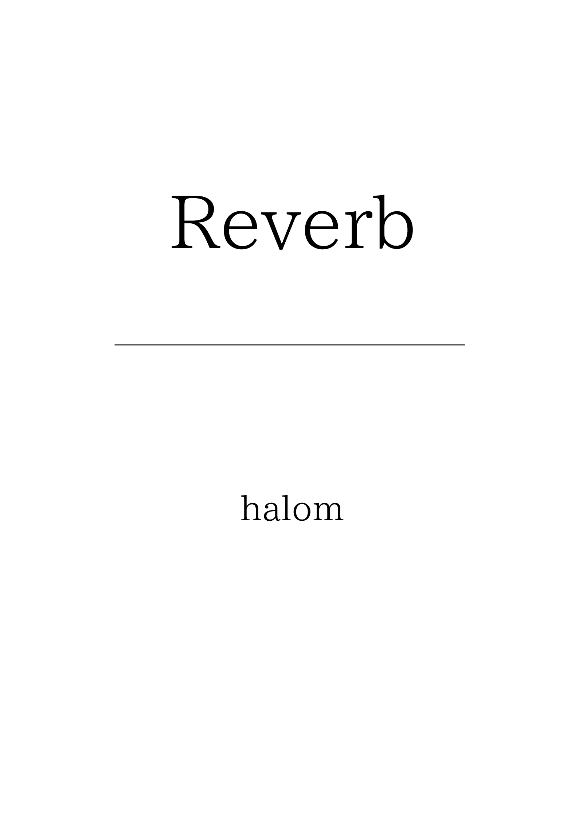
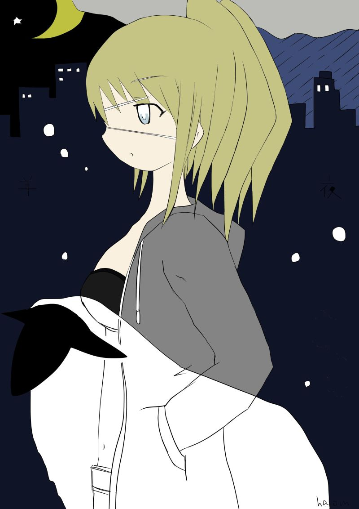
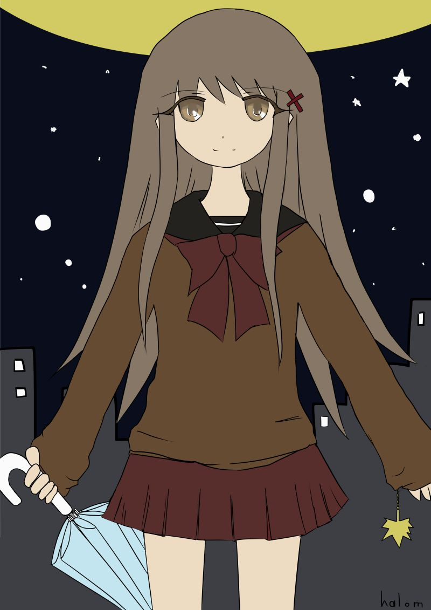
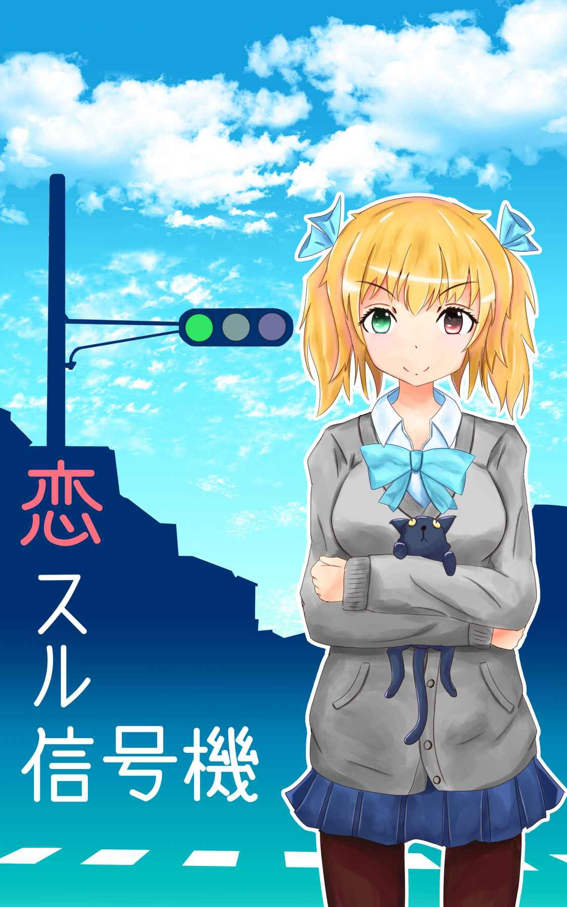
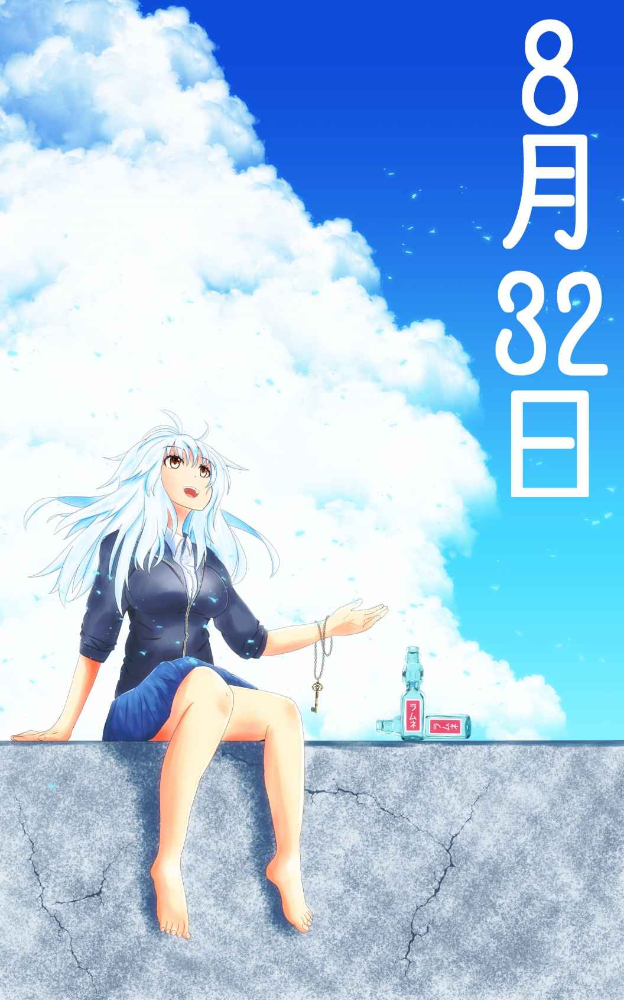

| Reverb (elh文庫) | |
| halom | |
| elh文庫 (2018) | |

ある日
その日僕は大学を自主休講し、音楽ＣＤアルバムを買いに少し遠出して街へと出かけた。
目が覚めると同時に感じた肌寒さは、次の季節の到来を思わせた。そうか、もうそろそろ秋か、とそんなことを考えながら久しぶりに見る薄手のジャケットと長袖のシャツをクローゼットからひっぱりだし、支度もそこそこに愛用のスニーカーをつっかけた。
最寄りの駅から小一時間ほど電車に揺られ、都内では有数の品ぞろえのレコードショップがある街へと向かった。
改札を降り、目当てのレコードショップがあるビルに向かって真っすぐ、まだ人気の少ない街をゆっくり歩いた。
その日の朝の街はなぜだか分からないけれど、不思議なくらい静かだった。
この街はいつも夜までやたらと人が多いし、飲食店やら雑居ビルやらがところ狭しと建ってたりとなんだか街全体がどこもかしこも雑然としていてあんまり綺麗な街ではないけれど、このまだ一日が始まったばかりの新鮮な日差しに浄化されたみたいに、どれも綺麗に漂白されているように見えた。
まるで死に絶えてしまったかのように通りかかる人もいない。しばらく歩いてみても相変わらず街は不思議な静けさで満ちていた。
大きな交差点を渡った僕はふと立ち止まり、空を見上げた。照りつけるような強さも熱さもない。夏とは明らかに違う種類の眩しい光が街の中に惜し気もなく降り注いでいる。別に何もおかしなことなんてない。どこからどうみても、よくありそうなごく普通の一日だ。
でもなんだか妙な胸騒ぎに似た予感みたいなものが起きてから今も尚続いている。一体なぜなのか、皆目見当もつかない。
もしかしたら僕が知るすべもないどこかで重大な何かが起こっているとでもいうのだろうか。或いは、これからこの一見なんでもなさそうな日に、何かとても特別なことが起こるのだろうか。
僕は再び静かな街を歩き始めた。はたまた或いは、すでに何かが起こった後だったら？ ふとそんな疑問が脳裏に浮かんだ。
例えばこれまでとはまったく違う世界に入り込んだように。そうまるで、まったく新しいルール、システムの世界になってしまったとか。突然今日になって、何かの潮目が変わったみたいに。
でも電車の中で見たスマホのニュースサイトでは特に重大なニュースがあったわけでも、今日から何か大きなイベントなり施策の変更がある訳でもなかった。つまりこれらは全部単に僕がそう感じただけに過ぎなかった。
目的地のビルに着くとあえてエレベーターには乗らず、エスカレーター乗り場へと向かった。やたらと長く感じるエスカレーターに揺られながら、彼らが今回出す新しいアルバムについて思案を巡らせる。
そのバンドは数あるそこそこ好きなバンドとは違う僕にとって特別なバンドで、とにかく一番気になる一番大好きなバンドだった。数年前のある日、偶然ラジオで耳にした時に衝撃を受け、すぐさま近くの店頭まで買いに行ったことをよく覚えている。こんなことはきっと後にも先にもこのバンドだけだと思う。たぶん。
それから今までに出たアルバム、シングル全てを遡り熱心に聴くようになってから現在に至るまでずっと、新譜が出る度すぐに買って聴き込んでいるぐらいだった。
活動情報にも常に目を光らせ、オフィシャルサイトはもちろんのこと音楽雑誌をはじめテレビにラジオ。他の雑誌やネットのサイトなどのメディアの露出はイベントの動向含めてまめにチェックしてるし、ライブもメインのものはほとんど行っている。
そんな風に僕が熱心に追いかけている彼らが久々に、といっても他のバンドなどに比べてもまだ早い方だけど、約二年ぶりのオリジナルを出す訳だ。これが楽しみでない訳がない。
アルバム前に出た三枚ほどのシングルは、次に出るアルバムの出来を確信させるものだった。だからと言ってまったく油断は出来ない。なぜならシングルだけではアルバムの全体像はとても判断出来ないからだ。
大体においてアルバムは収録されるシングルを総括するようなもので、シングルの方向性によってある程度全体図の予想がつくものだけれど彼らにいたっては氷山の一角のようなものだ。シングルが驚くほど大きな物のたった一部であることが思い知られる。
それほどまでに彼らはどんなものを出してくるかまったく分からないのだ。例え古参の熱心なファンでもおそらく予想不可能だ。
実際シングルではこれまでの彼らとは明らかに違う新たなサウンドやアプローチで驚かせてくれている。
アルバムではこの変化量がより大きくなるのではないだろうか。毎回僕らファンの想像と期待のはるか上をやすやすと飛び越えていく彼らの新たな楽曲は、いくら期待してもしたりないくらいだ。
もちろん楽しみに指折り数えてこの日を待っていた訳だけど、つまりこれはとても重要な、一大イベントなわけだ。まあ残念ながらそれは僕を含めたそのバンドの熱心なファンくらいなものだろうけど。
ようやく邦楽のフロアにたどり着くと、店頭のポップが目についた。大きなポスターに店員手書きのポップ。何種類もある手の込んだ手作りのポップを見るところ店員にもこのバンドのファンがいるのだろうか。そのバンドは音楽ファン達の間では注目度は高いものの、世間一般的にはまだまだマイナーな部類かもしれない。けれど同じ発売時期の他のものより一際大きく、広く陳列されており、台の上にはＣＤが山のように積まれている。設置された何台かの視聴機にはすでに何人かの姿があった。
――希代の才能を持つ彼らが放つ最先端の音楽。未来の世界。そう書かれたポップを横目にＣＤを手に取りまじまじと眺める。サイトや雑誌なんかではすでに見ていたけど、実際に手にとって見るのはまた違う。なんというより視覚にダイレクトに伝わってくるものがある。
いや凄い。どこかの風景だろうか。それともオブジェクトだろうか？ まるで何かのイメージを喚起させるよう。今回はまた随分と抽象的なジャケットだ。僕は手に取ったままうなる。このジャケットからはどんな曲が入ってるのかまったく予想がつかない。洗練されたデザイン。暗示的でなにより美しかった。
決して分かりやすさだけではない、シーンの最先端を走り、常に変化を求め、常に目新しいものを提供し続けシーン全体を牽引している彼らのイメージにはぴったりだと思った。
世にはジャケ買いという言葉がある。それがほとんど博打であることは否定しないが、これは結構悪くない買い方であるとも僕は思う。ジャケットとというのは大抵の場合一番最初に目に入るので曲のイメージ、アルバム全体のイメージと結びつきやすいとても重要なものであるからだ。
おしゃれなジャケットなら実際よりもずっとおしゃれに聞こえるし、かっこいいジャケットならよりかっこよく聞こえる。いわば音楽ＣＤというのはジャケット、タイトル。デザイン。全部含めていわば総合芸術なんだと思う。やや大げさだけど。
何度かＣＤをひっくり返したり、また表を見たりしていると、何人かの人が救援物資にありつくようにわっと特設コーナーの島にとりついた。
このバンドのファンなのかは判別はつかなかったけれど、ＣＤを手に取るその顔はどれも新鮮な驚きに満ちているように見えた。とにかくこのバンドの動向には注目していたみたいだった。
なんだかこのバンドのファンであることが誇らしいくらいだった。いや僕が威張ることじゃないんだけど。
こんなことを言ったら大袈裟かもしれないけれど僕らにとって大好きなバンドが新しいオリジナルアルバムを出すということは人生において凄く特別なことで、凄く重要なことだった。それまでの価値観ででさえ新たに更新されるような気さえする。
つまり世間的には何もなくとも彼らのファンである僕らにとっては十分過ぎるくらい、今日は特別な日だった。
冒頭
言葉が止まった。
それからどれくらいの時間が経ったのだろう。テーブルの上に置いてある手のひらサイズのポータブルレコーダーはただ空しく空白を記録し続けていた。
彼はソファに背を預け軽く手を組み、静かにゆっくりと深い呼吸を繰り返しているだけだった。視線は手前にある低い丸テーブルの少し先辺りにとどまっていた。そこには何かの動物の小さな置物があった。だがそれが目に入っているかは定かではなかった。意識は恐らく別のところにある。沈黙は続いている。
もう一人の男性もまた同様に口を閉ざしている。壮年の男性だ。普段着のようなラフな格好で青年の斜向かいに座り、小さなメモを手にじっと青年の放つ次の言葉を待っていた。
◇
私は次の言葉を待っていた。
――沈思黙考。長い間沈黙したままの青年は今ここで何を言うべきで、何を言わざるべきなのか。それを考えあぐねいているのだろうか。
いや、どうもそうではなさそうだ。その表情からうかがえるのは、あれこれと思考を巡らせる段階はとうにこえ、すでに何かの決断と明確な答えを得ているようなものだった。このパズルの最後のピースはすでに手の中にあるようだ。
それを裏付けるような迷いのない確かな根拠に根差した揺れのない眼差しと、意識のとても深い部分に根差したような「ある静けさ」だった。
そう、その姿はまるでただひたすら何かの訪れを待っているようにも見えた。そしてその瞬間を逃すまいとしている。しかるべき言葉を放つ、しかるべき時を。手にもった最後のピースをはめるタイミングを。正しいものが正しく行われる時を。
――仮に。口を開いた瞬間、それまで不確定だった要素が瞬時に何かの形を得、存在が決まってしまように。観測した途端に正体を現す、量子のように。
彼は今ここで間違った言葉を放ってしまう危険性を熟知しているのだろうか。もし仮にそうなった場合、間違ったもの、正しくないものがたちまち実体を得てしまうのだろうか。それは本来の意図。あるべき形、正しい道から大きく外れ、あらゆるものを悪い方向へと導き、コントロールを失い、本来辿るべきであったタイムラインは混迷する。やがて訪れる大きなトラブルの予感とともに。
だから私は先の言葉を促すこともせず、彼と同じようにその時の訪れをひたすら待つことにした。
沈黙は続く。強い風が窓をがたがたと揺らした。私は一度窓の外を見てから青年に視線を戻した。
彼は。彼らはこの決して短くない制作期間の中で一体何を見出したのか。
類まれなる表現センスと、伝えるべきものに一番適合したものを、言葉を確実に嗅ぎ分ける嗅覚。
自分自身どこへと向かい、ほかの者をどこへと向かわせるのか。自分の中で確かな方向性を持った彼、彼らが新たな目的地として指し示した場所とは。
誰もがその場所を。今とはまるで違うまだ見ぬ新天地を。例えば未だ科学では解明されていない様々な事象。暗闇で覆われた未知の領域を。確かな解答を。今まで隠されていた何かの正体を。新たな、更なる上の段階へと必ず導いてくれるに違いない。彼らのフォロワーはそう無邪気に信じている。いや、フォロワーでなくとも彼らのアクションに期待する全ての者は。きっと。
この作品が世へと放たれ、あらゆる人がこの作品を耳にし、得た感情。影響それらが時間と空間を超え、この時、この場所。この狭い一室へと意識が集中している、のかもしれない。前後した時間と、場所を越え、誰もが背中越しに固唾をのんで見守っているような気がした。
もしそれが世に放たれたのなら。一体どんなことが起こり、どんな影響が及ぼされるのか。まるで想像がつかない。ただ大きな変化が起こることは間違いなさそうだった。そう、まるで今まで滞り止まっていた流れが一気に変わるように。
仮に僕らが無数の選択肢。無数の分岐点の上に立っているのだとしたら。もしこの世界が無数の選択と可能性に満ちているのならば。この作品、アルバムが出現したポイントで、世界はすっかり様相を変えてしまうのかもしれない。
かつての世界と、それ以降の世界。今までもそうであったように大きな事件が、災害が。感動的な出来事が、革新的な技術の誕生が。それらによってもたらされた新たな価値観が、それまでの世界を遠い昔の過去に変えてしまうように。
少し大げさかもしれないけれど、そんな予感がしてやまなかった。それも確信に近い予感を。
その時。ふいに何かの気配を感じて視線を上げると、こちらを見据えていた彼と目があった。
「最初のインタビューを覚えていますか？」
彼は静かに語りだす。時は満ちたようだ。その瞳はこちらをじっと見据えていた。
はじまり
由宇はとても不思議な子だった。
由宇は、決まって毎週木曜の深夜零時以降にインターネット上に現れた。日付が変わっているから、正しくは金曜の零時だけど。
僕らが出会ったきっかけは、決して珍しいものではなく、世界中のどこにでもあるようなほんのささやかなものだった。たぶん。
どんなことより。どんなものより。何よりも音楽が好きな僕らがすっかり打ち解けるまで時間はまったくかからなかった。まるで幼馴染とか旧知の親友とか。或いは出会う前からお互いのことを知っていたかのように。
でも僕は由宇の住んでいる場所のことを何も知らない。由宇が住んでいるところ、ということしか知らない。もしかしたら分かった気になっているだけで、由宇のこと自体もまるで分かっていないのかもしれない。まあ同じ世界に住む人のことだってそんなに詳しく知っている訳でもないんだけれど。
ともあれ由宇と会話を重ね、次第に仲良くなるにつれ僕らはそれぞれが違う世界に住んでいるんじゃないかと感じ始めていた。
多分由宇は、この僕の住んでいる世界とよく似た別のセカイ の子なんじゃないかと思った。
そこはきっと、ふいに何かの拍子に分かれてしまった。もうひとつの可能性のセカイなんじゃないかって。
最初のインタビュー
――さて、そろそろ今日のインタビューも終わりが近づいてきたけど、これだけじゃあまだまだ軽いジャブ程度かもしれないね。ようやく段々と今回のニューアルバムの全様像がぼんやりと見えてきたところだけど、どうも今の流れからするとこの先は少々込み入った話になりそうだ。
確かにそうですね。この先は少し込み入った話になりそうです。
――とりあえずの先行インタビューとしてはまずまずの分量を稼いだとは思うけど、どうもこれじゃあ不完全燃焼だねえ。このままじゃあきりが悪いから最後にちょっとだけその込み入った話の概要を教えてもらえないかな？ さわりだけでも。
はい、いいですよ。って言っても今ここでパッと言えるほどちゃんと整理されているものでもないんですが......ああ、そうですね。一つ思い出しました。いや、あまり大したことでもないし、訊きたいことかどうかもわかりませんが。
――構わないよ。どんなことを思い出したの？
昔は......いや今もそう思ってますが、ただ単純に音だけを鳴らしていればいいもんだと思っていましたけど。ファンの人たちなり、アルバムやライブでも関係者なり関わる人間が多くになるにつれ、環境の変化もあって徐々にですが、その辺のこともいよいよ考えないとな、とは思うようになってきましたね。単純にセールスとか外連味とかってよりかはもっと実際の人と関わる仕事的な部分で。自分達だけで好き勝手やっていた時とは違って。
――好き勝手、と言うと言わばそこが仕事と趣味と境目だと？
別に今までこれは仕事だ、という意識でやってた訳じゃなかったんですが、活動を続けていく以上そういった面も、どうしても意識せざるを得ないですね。もちろんそれに関係する面倒ごとが増えていくという意味でもですが。
――面倒ごとというと例えばどんなものが？
そうですね、こういうのは人によっては面倒ごとという程のものでもないかもしれませんが、方々での発言の影響力を考えなければならないとか、こちらの一挙手一投足全てに意味を求められたりとか。後はとにかくやたらと自分たちの素性を色んな人に知りたがられるようになったりはしましたね。
――音楽って特にそういったものを、例えば誰がどういう経緯でとか、そんなものを全部とっぱらって直接音を聴き手に届けられるシンプルな良さがあるとは思うんだけどね。勿論他のものにも言えるけれど、何故か音楽は特に、顕著にその傾向を感じるねえ。
正直あれこれと素性を調べられたり根掘り葉掘り訊かれるのは面倒だなとは若干思いますね。仕方ないなとも思いますけど。自分自身は誰がやろうが出してる曲が良ければ何でも良いとは思っていますが、あまりそう思ってる人は少なく感じますね。でもどんな人間か知りたがるのは自然のことだと思います。特にファンなら尚更そうですよね。この他にも大小あれこれ面倒ごとはありますが、どれも自分たちだけで勝手にやってた頃とは違う種類の面倒ごとですね。
――でもやっぱり人間として生きている以上そういう、言わば日常や制作上でのアクシデントやらトラブルやら面倒ごとは無視できない訳で。
そうですね。でも、だからこそ、紆余曲折悲喜こもごもあるからこそ相手に届けられる音や、メッセージなりがパワフルになる側面もあると思います。より力強く。より説得力も持って。いや、本当にこうやって言葉にするともの凄く当たり前で陳腐な言い方になっちゃいますけど。
――経験から来た言葉っていうのは重みがあるってことだね。実感のある肉体を伴った言葉っていうか。
ええ、もちろんそれを効果的に表現する力も必要だとは思いますが。自分がそうは思わないことは言えないし、例え言ったとしても上滑りして嘘臭く聞こえるし、肝心の言葉にも力が乗りませんからね。
――なるほど確かにそうだね。他に世に出るようになって変わったことはどんなものがあったの？
後は......そうですね。聴く人の、特にファンとか好んでよく聴いてくれている人の思いなり重みなりを少しづつ受け取っているんじゃないかなって最近は感じるようになりました。いや決して悪い意味という訳でもなくて。音楽に限らず表現する人は必ず。それが少なからず制作物に影響しているのかなと。良くも悪くも。
――いわばそれが表現者の義務みたいなものなのかな？
義務というよりかは、避けて通れない所だと思いますね。何かしらを表現する人間っていうのは誰であれあらゆる人のジャッジを受けるのもそうですし、どう受け取られようとも誤解も仕方ないですね。なるべく誤解が少ないようにこういうインタビューでも丁寧に言葉は尽くしているつもりではいますが。ファンなり僕らに興味のある人だったらちゃんと言葉の真意をよく読み取ってくれたりもしますが、大抵の人......多くの人にとってはそこまで僕らに興味も持っていないし、どうしても見た目だけとか、どこかでちょっと喋ったインパクトある言葉だけを聞いて、それでなんとなくのイメージを決めてしまうことも多いのかなと。
――イメージが独り歩きしてしまうって訳か。うーんどうしても分かりやすい部分だけが先行しちゃうのはあるだろうね。大勢の、大衆の前に出る以上仕方ないっちゃ仕方ないことかもしれないけれど。
ええ、ですので特にそれには抵抗せず流れに任かせています。あんまりにもこちらの意図とはかけ離れた誤解があるようならコメントもしますが、幸いまだそういうことはないですね。ああすみません少し話が反れました。さっき言ったファンなりから受け取るのとは同時に背負わされる部分もまたありますね。より広い場所に出ると想像以上にずっと色んな反応があるというか。それもまた良い刺激なったりもしますが。
――一度表に出るとまるっきり自分の知らないところで、勝手に祭り上げられたり期待されたりする部分っていうのは少なからずあるだろうね。勝手にがっかりされたりも。
うーん、なるべくならがっかりはされたくないですねえ（笑）
――ははは、でも人は自分の言葉を誰かに代弁、仮託しようとするのはあるだろうね。特に権威者とか、自分の思いなり考えなりを上手く表現してくれる人に。君たちはもちろん後者だね。自分の気持ちをほぼ狂いなく百パーセントに近い数字で表してくれる、そこが支持されている大きな理由のひとつだと思うよ。特に若い年齢のファンは特にじゃないかな。
そう思ってくれるのは有難いことだしやりがいを感じるのはあります。ああそれと思いなりを受け取るのとはまた逆に、すり減っていく部分もありますね。何かしらを出す度に。これも音楽に限った話じゃないとは思いますが。
――つまり、表現というものはそれがどのようなものでも自分自身を削り取ることだと？
はい、そう思いますね。単純に蓄えておいたストックが減る意味っていうのもあります。元々人の持っている素質というか、表現の範囲、幅。発想のストックというのは限りがある訳で。差こそあれ人ひとりが経験できる量、そこから何かしらを得て生み出せる分量が尽きるまで、言わば自分を切り売りしている感覚というのもあります。
――切り売りっていう感覚を持っているアーティストは結構多いと思うよ。今まで色んな人にインタビューしたけどね。こういった仕事をする上で犠牲にしたものも含めてだけど。芸能人なんかだったらプライベートって意味もあるかもね。でもやっぱり一番は発想なりアイデアって部分だろうけど。
はい、ごく稀にいる天才は別として新たに自分の中の感覚を更新して常に補充しない限りいずれ尽きるものだと思います。段々と似たようなものしか作れなくなったり。これと似たようなことで、どんな強い個性も世に出た途端からどんどんと薄まっていくように見えます。
――個性が薄まる？ 具体的には？
そうですね、時間の経過なり大勢の人の目に触れることで人々の中で異質だったものも徐々に内面化されて普遍化、常識みたいになっていくように。最初は尖っていたと思っていた部分も慣れて丸く感じるようになってその分、受け入れやすく口当たりがよくなりますが、その分刺激も弱くなってしまって飽きられてしまったり陳腐さを感じたりもしますよね。でもこれはある意味、人が元々持っている本能的なものなんだと思います。
――本能的なものというと？
多分そうやって人類っていうのが進化してきた側面もあるんじゃないかなって個人的に思いますね。その時々に尖ったものでもあれこれ色んなものを試したり取捨選択して。食べ物と一緒ですよね。ああこれ食べられる、これは食えない、美味い不味いみたいに。でもその価値観自体も時代の変化でまるっきり変わったりしてますよね。変わらずにいるものもありますが。
――ああなるほど！ いわゆるその価値観の変化の積み重ねが歴史なんだろうね。ある意味それは進化とも言えるのかな。
ええ、だから僕らの生きてきた歴史っているのはほんのちょっとずつでも前より確実に前進進化していると思います。短いスパンで見ると進化を感じにくかったり、一時後退しているようにも見えますけど、長い目で見れば必ず何かしらの意味や進化はある筈だと思いますね。同じサイクルがぐるぐる回っているようでも、確かに以前との違いはある筈だと思います。
――きっとらせん階段みたいなものかもしれないね。上から見るとぐるぐると同じ所を回っているようだけど、横からみるとほんの僅かだけどちゃんと上に登っている、というか。
ええ、まさにそう思います。ですからその時々で流行るもの、受け入れられるものっていうのは、その時の時代とか社会とかがそれを必要としていたんだと思います。体が必要としているものを食べたくなるみたいに。世で言う流行っていうのもその一つかなと。
――確かにそういう面はあるだろうね。そうやって異質なもの。その時代にも受け入れがたいものでも、やがて部分的に取り入れられたり、あるいは一気に受け入れられたり。まるっきり見当はずれなものは排除されたり。そうやって人々は可能性の範疇を模索したり広げているんだろうね。世に出る、受け入れられる表現者であれ、大勢の人が好むものっていうのは、いわゆるその時代に選ばれた、もしくは先の時代へと移行する為に必要とされた要素なのかもしれないね。いずれまた別の新しいものに移り変わるとしても。
まさにそうだと思います。だから僕らが受け入れられたのは、そういう意味なのかなと思いました。自分で言うとちょっと大言壮語っぽいですけど。
――いやこういう話を嫌がる人は多いけど色んな人の食い扶持になっている仕事という面から見てもそれは正しいと思うよ。それに実際君たちは影響力もかなりあると思う。特に若い人に。こっちははっきり数字として出る訳じゃないからあくまで僕から見た個人的な見解だけど。
支持されているのはとてもありがたいことだし嬉しいことですがそこで、その段階で終わってしまうというのももったいないなと思いまして。
――ほとんどの人は受け入れられた段階で満足しそうだけどね。セールスをあげるのもそうだけど。
ええ。でも僕らは勝手ながらじゃあ次の段階は？ と考えたんですよ、僕らなりに。単純にもっと広く、たくさんの人に受け入れられるようにする、ということではなく、もっと別なもの。まるっきり違う段階。つまりその次の段階に挑戦してみたいなと思って。
――次の段階というと？ 具体的には？
さっきも少し話に出ましたけど、可能性の模索かなと思ってます。今回のアルバムはその一つの可能性を提示したいなという思いを込めて制作していました。
――確かにさっきも言っていたけど、もしかしたらそれが今回のアルバムのテーマのひとつになるのかな？
はい、そうです。もちろん他にも個々の曲ごとのテーマやそれとは別にアルバム全体としてのコンセプトもありますが、こんなもの、例えばこんな先のビジョンはどうかな？ という提案、提示は昔からアルバム制作の根底のテーマとしては常に一環してますね。
――それは歌詞なりコンセプトワークなりでいつも新しいアルバムを聴く度に感じていたけど、こうしてあえて公言、皆の前で言ったのは今回が初めてなような気がするねえ。
はい、対外的にはっきりと言ったのは今回は初めてですね。でもどの部分をどう受け取るかっていうのは、もうそこは聞き手、受け手の領分なのでそこまではこちらがどうすることも出来ないし、聞き手は何を受け取ってもいいし、どんな解答を得てもいいし。そのひとつひとつに正解不正解なんてことは言いたくはないですね。でも発信する側として、一応こんなコンセプトで作りましたっていうのはあります。
――答え合わせは無用だし、する必要はないと？
はい。そもそも答え合わせという行為が当てはまらないと思います。作り手と同じ物、意図を感じ取ってもらったら嬉しいのは勿論ですが。
――話をまとめると、今回......いや、常に君らの一環しているコンセプトは、新たな可能性の提示であると。そういうことだね？
はい。そうです。ただひとつ補足しておきたいのは、決してそれが皆にとってより良い可能性、ではないかもしれない、ということです。より良い、というと少し強引で押しつけがましくなるので。あくまでひとつの手法、やり方の提示であると。ただ僕らは心の底からこっちが良いと思って作ってはいます。
――確かに単純に、無根拠に正しいのはこちらの方向ですよ、と言っても誰も信じやしないだろうし、仮に信じたとしても結果正しいかも分からないね。すぐに分かるものばかりでもないだろうし色んな要因もあるし、意図通りに行われたかも、誤解もなかったともいえない。
結局何が正しいか、より良いこと、方向かまるで分からないのは、世の中が不確かなものばかりだということが原因なんだと思います。結局僕らは、いや誰もが相手の手の内が分からないところで四苦八苦している。完全にシステムもルールも把握しているわけじゃない。
――分からないなりにあがいているのはあるだろうね。あちこち頭をぶつけながら、常により良い方向を探しながら。
そうですね。ニワトリの飼育員の話っていうのがあって、几帳面な飼育係が毎日決まった時間に決まった量の餌をあげるけど、怠惰な飼育係に変わった途端、その法則が崩れてしまった、という話で。もちろんニワトリ達はそんな事情も知らないし、理解も出来ない。そしてそれはニワトリ達にとってそれは世界のルールの崩壊である訳です。
――ニワトリには理解の及ばない世界で起こったことって訳だね。なんだかこの世界にも言い換えられそうだ。
まさにそうです。僕らの世界っていうのは多分、歴史の始まりから今に至るまで弁証法的に進化してきた部分が大きいんじゃないかと思います。
――ひとつひとつの事実を確かめてきたんだろうけど、その事実、というもの自体が結構いい加減で、いかに不確かなものに基づているかもしれない。ある時いきなり変わってしまうこともあるということかな。
はい。今の話で言うとその事実が分かるのはあくまでニワトリの世界。小屋の管理者である飼育員だけであって、その小屋の住人であるニワトリはまるで分からない。飼育員のいる世界はニワトリよりひとつ上のレイヤーというか。ニワトリのいる所はその一部にしか過ぎないというか。これと同じことで飼育員のいる世界もまたもっと大きな別の世界の一部かもしれない。
――もしその世界の仕組みを説明したところで世界の違う者に果たして把握や理解できるか、という疑問もあるね。
もし仮に世にある不確かなもの、分からないことすべてが開示されたとしたら、確実に今より進化出来ることは間違いないと思いますね。
――何せゲームのルールを完全に知り尽くす訳だからねえ。
ええ。常に、世に問いかけっていうのは多いと思いますが、それら全てに対する答え、解答が出るわけじゃないですよね。また答えが出たと思っても実は違っていたりもします。徐々に分かっていくことも多いですけど、ほとんどのものは確かな満足のいく解答は得られていないと個人的には思います。
――それもいわゆるひとつの模索であるよね。さっきの話にもつながるけど。
ええ、だからその為には使える、使うことの出来る道具は全部眼前にひろげたい、という意図です。何を選び取るかという選択はあるけれどそれによって、もしかしたら僕らは更に前に進むことが出来るんじゃないかな、と。或いは誰かを何かを前に進ませることも。
――前に進ませる？
はい。結果どうこうや良いか悪いかではなくて、あくまでひとつの動機として。
――なるほど、なんとなく全体像が見えてきた気がするね。今回訊くべきアウトラインが。いよいよ核心に迫ってきたみたいだ。
ええ。まさにここからが核心です。
◇
――と、ここであえなく時間切れとなってしまった。
用意していた質問のストックはとうに尽きてしまっていたけど、インタビューが進むにつれどんどんと新しい質問が自然に出てきた。後半はほぼ勝手に口が開いていたように思う。でもまだまだこの先にどんな風景が広がっているか想像もつかない。今はまだ長いトンネルの入り口に立っている状態のようだ。
そしてインタビューの最後の最後でとても重要なキーワードが出てきた。しばらくはこれをヒントにあれこれと予測したり考えを巡らせるのも楽しそうだ。
これでいよいよ今回のアルバムの心臓部。コンセプトについて語る準備が出来たと言っていいだろう。ふと窓の外を見ると大分天候が荒れてきたようだ。そういえば今朝ニュースで見た台風は過ぎたのだろうか。
僕らは次に会う日を決め、この日のインタビューは一旦終わりとなった。
次回はより彼の。彼らの内面へと迫り、今まさにこの時において比類なき希代の才能ともてはやされる彼らの全様、本質を解き明かしていきたいと思っている。そして何より、自身らの最高傑作という３ｒｄアルバムの全様を解明していこうと思う。
由宇との出会い
由宇との出会いはほんのちょっとした、ごくささやかなきっかけだった。
たぶん日本じゃあんまり有名じゃない、ある海外のマイナーなバンドの非公式掲示板だった。
その掲示板はそのバンドのファンであろう個人が管理しているごくシンプルなもので、何年も前に、それこそネットが一般家庭にも入り込んできた時代によく見かけたタイプの古い掲示板だった。
掲示板システムこそ古いけれど、投稿記事は見やすいし、返信などのコミュニケーションに必要な機能は一通り揃っていた。おまけにファン同士のつまらない、いさかいもなく全体的にのんびりとした割といい雰囲気だった。まあもともとそんなに人も書き込みも少ないからというのもあるんだろうけど。
その掲示板に一人、気になる人物がいた。その人物は決まって木曜の晩の深夜零時過ぎに、書き込みをする。
ハンドルネームはアルファベットのＵ（ユー）。彼女、或いは彼の書く文章から感じ取ることができる世界の視点、独自の感性は僕にとってとても新鮮で、新たな発見で満ちていた。ややくだけた口語っぽい書き方は多分女性で結構若いんじゃないかと勝手に推測しているけれど確かじゃない。投稿を見る度に段々と、由宇の書き込みが毎週金曜朝の楽しみになっていた。
そしてある日。ずっと掲示板を見るだけだった僕は思い切って、その投稿に返信を書いてみることにした。ただ単純にとてもいい感想だね、というのを伝えたかったからだ。
次の週に返信があった。短い御礼だった。単に感想を伝えただけだから返信がくることを期待していた訳じゃなかったけど、思わずやって来た返答に嬉しくなった僕はまたそれに返信をした。そのやりとりが掲示板でなく個人的なメールのやりとりに変わるまでまったく時間はかからなかった。
多分お互いの感性、好きなものの方向性。例えばこのバンドのどの曲のどんな所が好きなのか、とか。そんなものがびっくりするほど似ていたのだろう。そのたった一度のやりとりがきっかけで意気投合し僕らはすぐに仲良くなった。年齢はふたつ下の女の子で本名が由宇であるということもこの時に知ったのだった。
これが由宇との出会いだ。世界中にどこにでもあるような。ささやかな日常をささやかに生きる僕のささやかな出会いだった。
時代が時代なら、昔はよくあったという音楽雑誌の片隅の文通コーナーなんかで知り合ったのだろうか。うん、それも悪くはなさそうだ。
ただ頻繁にメールなどのやりとりするようになってから少し困ったことがあった。主に実生活についての面で微妙に話がかみ合わない時が多々あったのだ。
例えばあの超有名な検索エンジンや、超有名なバンドなど。誰でも知っているような当たり前のことを知らない。それどころか、逆に由宇が知っているバンドのことを僕はほとんど知らなかった。
初めのうちは冗談だと思っていたけど、どうも本気で知らないようだった。ただそのサイトらとよく似たサイトは向こうにもちゃんと存在するようだし、メールのやりとりにそこまで支障がある訳じゃなかったから、なぜなのか詳しく聞いたりはしなかった。
けれどやりとりを重ねるうち段々と僕の中である推測が存在感を増していき、ある時を境にそれは確信へと変わった。
由宇はきっと僕の住んでいる世界とよく似た、別のセカイの住人なんじゃないか、と。
由宇は別世界人？
「駄目だ。見えないよ。またノットファウンド」
僕はお手上げとばかりに言った。何度やっても駄目だった。
「そっかあ......やっぱり駄目なんだ」
由宇も諦めたように言った。こうしてメールのやりとりより密に出来る音声チャットで頻繁にやりとりをするようになって、こういうことがしばしばあった。
由宇の見られるものがこっちには見えなくて、逆に僕の見えるものが由宇には見えない。せっかくお互いが良いおすすめバンドなんかを見つけても、オフィシャルページすら見せることもままならない。有名動画サイトも同じ。曲だったらこの音声チャットを使って聞かせることもできるけれど、深夜にスピーカーは使いたくないし、この短く貴重な時間はなるべくやりとりだけに徹することになっていた。それにＢＧＭにしてしまうとついお互い聴き入ってしまう。それでも時々は流したりもしてしまうけれど。
「ちゃんとコピーして貼り付けたんだけどなあ......」
由宇がため息交じりに言った。そう、最初は単にＵＲＬとかを打ち間違えているだけだと思っていたけど、どうもそういうことじゃないようだ。
もっと根本的な何か。そもそものお互いが属している環境、社会。もっと大きい括りで言えば世界そのものが違うのかもしれない、と僕は感じた。そんな違和感だった。にわかに信じがたいけど。僕らが互いにいる世界はとてもよく似ているけれど、どれもがちょっとずつ違っていた。
「困ったなあ......どうしよう。気になるなあそのバンド」
由宇は本当に残念そうに言った。こんな時ウェブカメラでも使えればいいんだろうけど、それも何故か出来ない。出来るのはあくまで文章のやりとりと、木曜の夜だけ、という僅かな間の音声チャットのみだった。
「じゃあメールにそこの画像を添付してみようか。確かそんな機能があるよね」
これはいい案だ、とばかりに僕はそう提案する。
「うーん、出来るかなあ」
だが由宇は不安気に言った。まあ確かにこれまでの経緯から考えると望み薄ではある。
「まあとりあえず試してみよう」
メールソフトを立ち上げこの前撮った庭に咲いた花の写真を由宇宛てのメールに添付する。そして送信。
「送ったよ」
「......ううーんやっぱり駄目みたい」
数秒後、由宇の残念そうな声がヘッドフォンから聞こえた。
「この手も駄目か......」
そんなに重いファイルでもないけれど、向こうにはメールの容量制限なんてものがあるのだろうか。現に文字だけのメールなら問題ないし。ん、そういえばこのチャットは確か画像も軽いものなら貼れたような気がする。
「あ、そうだ。このチャットの機能で画像送れるかも。ちょっと待って」
僕は急いで通販サイトにアクセスし、そのバンドのアルバムのページを呼び出す。そしてそのページを写したスクリーンショットを撮って一度ファイルに保存した後、チャットのメッセージボックスにドラッグして貼りつけた。
「どう？ 見えた？」
おそるおそる由宇に訊く。
「あ、見えたよ！ なるほど、こんなジャケットなのかあ。でもこれだけだとなんだか余計に飢餓感が煽られるみたいだね」
由宇がそう言って笑った。僕もそれにつられて笑う。でもそれもやがてお互い力ない笑い声に変わる。
「こっちでもそのアルバム買えたらいいんだけどなあ」
由宇が心底残念そうに言った。
「サイト名は同じでも微妙に品ぞろえが違うっていうのもおかしな話だよねえ」
僕は唸るように言った。お互いの世界にある、とある通販サイト。その名称はなぜか同じだった。そして売ってるものも大体同じ。だがこと音楽商品。いわゆる音楽ソフト類に限ってはかなり様相が違っているようだった。
この大手通販サイトに限って言えば、大手と言われるだけあって現在販売されているほとんどのものは網羅されているので、もともと取り扱っていないという訳でもなさそうだった。個人や他の店での出品もあわせれば、値段や在庫の有無は別としてほぼ全ての商品は閲覧出来る筈だった。
「商品すら表示されないってのも変だよね」
由宇も改めて不思議そうに言った。そう、こんなふうに僕らお互いの世界はとても似ているけれど、まるで違うものがある。特に顕著なのが、音楽のラインナップだ。そして普段の生活の上で利用するサービスの名称や、その運営元である企業が全然違う。このように有名通販サイトをはじめとしたいくつかの僅かなものを除いて。それにしてもなんでまたこのサイトに限っては同じ名前でどちらの世界にも存在するのだろう。うーん謎だ。
「あ、もうこんな時間だ。ごめんね、遅くまで。じゃあまたね」
由宇が少し寂しそうに言った。
「うん、また来週ね。由宇」
ＰＣの時計はすでに午前二時を表示している。もう終わりの時間だった。由宇のアイコンが灰色になりオフライン表示された。週に一度の由宇との一時間ばかりの短いやりとりが終わった。この時はいつも名残惜しい。
チャットの窓を閉じて、僕は椅子に背を預けのけぞるように天井をあおいだ。一週間にたった一度限りの楽しみが終わってしまった。
「......それにしても変な話だな」
本当に由宇は別の世界の人間なのだろうか？ もし僕が誰かに、由宇が実は別世界の人間で、とてもよく似ているけど違う世界、文化をもった違う社会に属しているなんて言ってもきっと誰も信じやしないだろう。せいぜい馬鹿にされるか、作り話だと相手にされないのがオチだ。
例えば由宇から教えてもらった向こうのセカイにしかいないバンドの音源やら写真やらを出せばいくらか信じてもらえそうな気もしないでもないけれ......ああいや駄目だ。
結局この世界のものじゃない、なんて証拠は何一つない。だってこっちの世界には存在しないバンドなんだから。せいぜい僕が適当にでっちあげただけと思われるのが関の山だ。こっちにないものの証明。あっちの世界にだけ存在するものを証明するのは不可能だ。
「まあいいか。そんな野暮なことはしたくないな」
あくびをしながらＰＣの電源を切った。そもそも僕は由宇のことや、向こうのセカイのことをほかの誰かに話すことなんて決してしたくないし、する必要もないことに気が付いた。だから何も問題は無かった。その謎が個人的に気になる以外は。
あるバンド
僕は次の木曜日の晩。正確には金曜日になった瞬間。いつものようにきっかり深夜零時にパソコンの前に座ると、すぐさま音声チャットソフトを立ち上げ、ステータスをオンラインにして由宇が現れるのを待った。
「お、来た」
しばらくの後。ポン、という軽快な電子音と共に由宇がログインしたことを知らせるポップが通知トレイに現れた。眠った羊のコミカルなアイコンだ。
「こんばんは」
いつも通りのやや間延び気味ののんびりした由宇の声がヘッドフォンから聞こえてきた。
「こんばんは。今日は早かったね由宇」
「うん。今日は珍しく用事が早く終わったから。いつもより少し長く出来そう」
「お、そりゃいいね」
こうして僕らはいつものように短い挨拶のやりとりを交わした後、これまたいつものように音楽の話題になった。
「――へえ、そっちにはそんなに凄いバンドがいるんだ」
僕は驚きながら言った。
「うん、私が一番好きなバンド。そのバンドが今度新しいアルバムを出すんだけど、多分凄いことになるよ」
由宇が少し熱のこもった口調で言った。
「え、凄いってどういうこと？」
「まあ大分期待を含めてってことだけどね、あはは」
由宇は少し照れくさそうに言って、こう続けた。
「こんなこと言うとちょっと大げさかもしれないけど、これが及ぼす世間的な影響力はかなりあると思う。まあ、セールスっていう意味も勿論あるんだけど、そんなことだけじゃなくって、もっと大きい意味での影響っていうのかな」
「え、でも普通のバンドが単に新しいアルバムを一枚出すだけだよね？」
僕は疑わし気に言った。由宇には悪いけれど、さすがにそれはちょっとファンのひいき目って気がした。そもそもバンドが世間に大きな影響を与えるだなんて。そんなことあるのだろうか。
「んん、まあそう言ったらそうなんだけど、それ以上の意味が生まれるっていうのかな。ただこのバンドだけなんだ。こんな風になるのは。うん、世間が騒がしくなったりするのは。それになんだか誰もがそわそわしているみたいな。うーんやっぱり上手く言えないなあ」
「え、世間が騒がしくなる？」
どういうことだろう。僕は思わず訊き返した。
「うん」
由宇は迷いなく短く言った。それにまた驚く。
「そうだねえ、例えばサッカーのワールドカップとかって、普段あまりそれに興味ない人でも話題にしたりするじゃない？ 多分ちょっとそんな感覚に近いのかも。あんまり上手い例えじゃないかもだけど......ああでもちょっと違うなあ。ごめん」
「いや少し分かった気がする。要はみんなが注目しているってことだよね？ でもそうだとしたらそりゃあ凄いな。一体どんなバンドなの？」
僕は呻くように言った。
「普通のバンドだよ。ごく普通の」
相変わらず由宇は拍子抜けするほどあっけらかんとした感じで言った。
「いやでも普通のバンドがなんでそんなに大きな影響力を持つんだろう？」
僕は更に優に疑問をぶつけた。もしかしたら向こうではそういうことが普通にあることなのだろうか。こういう時にお互いの世界の差異を強く感じる。
今まで由宇から聞いた話から察するところ、どうも由宇の住むセカイの人達は、僕らの住む世界よりずっと音楽に対するアンテナも感受性も高く、常に生活と密着しており、周りに音楽があふれているように感じた。
もしかしたら僕らの世界もそんな風になった可能性もあったのかもしれない、とふと思った。じゃあなぜその違いが出たのだろう？ そんな漠然とした疑問に対する答えのようなものが一瞬脳裏に見えかけた気がしたけど、由宇の声にすぐに目の前の画面に引き戻された。
「何でなのかちゃんと理由を言える人は多分あんあまりいないような気がするけど......うーんちょっと口で説明するのは凄く難しいんだ。ごめん」
由宇はそう思案気に言ってしばらくの後、こう付け加えた。
「えっと、多分自分の中での感覚が更新されるっていうのかな。それまでの価値観ががらっと変わるっていうか」
「価値観ががらっと変わる？」
それは僕にとって驚くべきことだった。
「うん。具体的にこうだって言いづらいんだけどね。例えば今まで価値あるものと思っていたものがそう思えなくなったりとか、逆に今まで特に価値を感じなかったものに価値を見出したりとか。つまりどういうものに、何を見出すかっていうフィルターっていうのかな。そんな視点を一時借りられるっていうか、感覚を得られるっていうか」
「............」
僕は押し黙った。返す言葉が見つからなかったんじゃない。僕はそのバンドのことをまるで知らない。当たり前だけど曲を聞いたこともないし、どんな人たちかも知らない。けれどほんの少しだけど由宇の言っていることが分かった気がしたからだ。
頭で理解したんじゃない。うまく言葉じゃ説明も出来ないし、なんとなくだけど由宇が感じた感覚、感触が得られたみたいに。
「......価値観の変化、か」
僕は独り言を呟くように言った。
例えば僕の住む世界には物凄くたくさんの人がいて、同じものを見ていたり同じところに住んでいたりするけれど、互いに見えている、感じている世界っていうのはまったく違うのかもしれない。価値観とはつまりその感じているもの、見えているもの違いなんだと思った。
「そう、価値観。本当にこのバンドだけなんだ。こんな風に騒がしくなったり心をゆさぶられるのは。こんな曖昧な説明でごめん」
「ううん、なんとなくだけど......分かるかもしれない」
いつだったっけ。由宇と知り合うきっかけをくれたあのバンド。そのバンドの曲を初めて聞いた時のことを思い出していた。そう、僕はその時説明不可能な。言語化出来ない何かの衝撃を、まったく無防備な部分。例えば心臓を真っすぐに打ち抜かれるようなものを受けたんだった。
そう、それ以来僕の中で明らかに何かが変わった気がした。僕を構成する要素がまるっきり入れ替わったみたいに。そんな体験ってそうそうないんだけど。
「しかし由宇がそこまで言うほどのバンドがあるなんて、凄い気になるなあ。ねえもっと何かヒントはないの？」
お互いの住む世界が違うものだから、どうしてもこういう聞き方になってしまう。
「ヒントかあ。うーん難しいなあ......って、そうだ！ 確かこの前先行インタビューの記事が音楽情報誌のサイトに載ってたんだ。そのサイトのＵＲＬを書くよ」
「えっ！ それは見たいな」
インタビューとはまさにうってつけだ。アーティスト写真などより実はこれが一番人物像、人となりが分かるからだ。
「了解、今メッセージの方に貼ったよ」
由宇のアイコンの脇のメッセージボックスにＵＲＬが表示されている。
「お、今きた。ありがとう。見てみる」
どきどきしながらそのＵＲＬをコピーして、ブラウザに貼り付けエンターキーを押した。
「......駄目だ。見えないなあ」
何度ページを更新しても、貼り付け直しても無情にもウインドウの表示はノットファウンドだった。なんというかその無慈悲な画面を見ているとどうしようもない無力感、脱力感で満たされる。こういう時はまさに互いの世界が違うことをまざまざと思い知らされてしまう。
「なんとかならないかな......」
僕は未練がましくページを何度も更新しながら言った。今回ばかりは簡単に諦めたくはなかった。なんせ由宇が一番好きなバンドを知らずにはいられない。ここまで音楽の好みが似ている人物には由宇以外会ったことがないからだ。僕も同じように気に入る可能性は非常に高いに違いない。
「じゃあちょっとその記事をメッセージの方にコピーするね。どうかな......上手くいくかな」
「頼んだ」
息を飲んでじっと待っていると、大量の文字列がメッセージウインドウに現れた。
「おお！ きたきた、見えたよ！」
僕は深夜だというのについ大声を上げてしまった。
「よし、これで半分かな。そろそろ終わりの時間みたいだから、落ちる前に文字数が入る分だけに分けて送るね」
「ありがとう！ さっそく読んでみるよ」
「あ、もしかして画像の方が良かったかな？」
「いや、文章だけでもいいよ。なんせインタビューだからね」
僕はすっかりそのインタビュー内容に気を取られていた。
「ふふっ、そういえばそっか。でも最初のページに写真もあるからスクリーンショットも貼ってみるね」
「ありがと」
「じゃあまた来週、同じ時間にね」
「うん、また来週」
今まさに由宇がせっせと貼り付けてくれているのだろう。メッセージボックスに次々に文章の固まりがいくつも連なってゆく。インタビューの分量はそこまで多くはなさそうだった。僕はそれをまるで長いパンを端から齧る様にむさぼり読んだ。
最後のメッセージにはおそらくその記事に載っていたであろうバンドの画像も貼ってあった。
「へえ、こんな感じなのか」
意外なほど普通だった。彼らはどこからどう見てもごく普通だった。こざっぱりはしているけど特段派手な格好や髪型。メイクをしている訳でもない。アーティスト写真っぽい感じだけど着ている服も普段着のように見える。言い方は悪いけれど、その辺を歩いていてもまったく分からないくらいだ。確かに由宇の言う通りどこからどう見てもごく普通のバンドだ。
「............」
すっかり相手のいなくなったチャットもそのままに、僕は時間を忘れてそこに書かれた文字列を読みふけった。
「............凄いな」
読み終わった瞬間、思わずそう呟いていた。
何て言ったらいいんだろう。僕は彼らのことは何も知らないし、曲も聞いたこともない。けれど何か一種奇妙な、今まで感じたことのない種類の不思議な感覚が心の片隅に残った。まるで胸騒ぎのような、なんだか落ち着かないような。
ああそうだ。これは何かとても大きなことが始まりそうな予感と期待で満ちた時の感覚によく似ている。まるでこの記事を書いたライターの気持ちに感化されたように。まるで熱に浮かされたようにふわふわとした感覚だ。
そのバンドのことを知らない、ただこの記事だけをポンと渡されて読んだだけの僕からしてみれば、少々熱が入り過ぎているような気がしないでもなかったけれど、ひとつひとつの文字からにじみ出る興奮は十分に伝わってくるようだった。人ひとりをここまで熱心にさせる何かを持ち合わせていることは、間違いなさそうだった。
「これが由宇が一番好きなバンドかあ」
改めてその言葉を思い出す。もう一度彼らの写った写真を見ると、なぜかとても何か不思議で、不敵で謎めいた魅力で満ちているように見えた。
このバンドが一体どういう方法で、どんな風に。どう世間に変化を及ぼすのか、まだまったく分からない。しかしそれが出来ることを信じている人間がいることは間違いなさそうだ。
ともあれどうも向こうのセカイには、人の価値観をすっかり変えてしまうほどのとてつもない凄いバンドがいるようだ。
先行インタビュー 編集後記
今はとある安いビジネスホテルの一室の小さなテーブルでこの編集後記の原稿を書いているが、どうもこれはしばらく何も手につきそうにない。いやこれにはまいった。他にも執筆しなければならない記事が山ほどあるんだけど。
ふとノートパソコンのキーボードから顔を上げると、窓の外は白々と明け始めている。だがインタビューの終了から今に至るまでまるで眠気は訪れなかった。さっき淹れたばかりだと思っていた脇のコーヒーも半分ほど残ったままとっくに冷たくなっている。
どうもインタビュー時に軽く聴いたデモのＣＤＲのおかげで興奮が未だ冷めやらないようだ。こんなことは短くない僕のライター業の中でもなかなかあるもんじゃない。まったく彼らにはいつも驚かされるばかりだ。
まだ僕は短い未完成品のデモ段階の曲を何曲か一聴したに過ぎない。
だがより鋭利に、明確に。確実に表現が洗練されてきている。これはただのキャリアの積み重ね以上のものと言える。今回のアルバムは確実に今までの彼らのイメージを、そして聴き手の予想を覆すものであると断言できるだろう。
楽器、音、に関する個々の分析やアプローチの解説はひとまずリリースされるまで置いておくとして、まずはこのアルバムというひとつの固まり、それ自体の意味を読み解きたいと切実に思った。そう、つまりなぜ今これを、ということを解明していきたいと思う。
いや、それはまだ時期尚早だろうか。まだ明確な言葉にするにはしばらく時間がかかりそうだ。僕にはまだこれを語る言葉を持ち合わせていない。おまけに未だ感情が揺さぶられている感覚が抜けていない。なぜなら今はまだアルバム全体を覆う空気感。ふと一瞬だけ垣間見えた幻想に取りつかれている、といったものだろうか。
未だかつて誰も見たことのないような、美しさ。これはきっとどこかの世界の幻想だ。今回のアルバムはその世界の詳細をこと細かに記している。これが大袈裟ではないことは聴いてもらえれば十分分かると思う。今しばらくの辛抱だ。
技術と経験の蓄積と共に、より効果的に聴き手の感情にインパクトを与える技術を獲得した彼らは、かつてない非常に強力な武器を手にしたのだろう。
その武器をどんな意志の元で、どのように振り下ろすのか。今回のアルバムの真のコンセプトとは？ この難解な謎を解き明かすのはまだまだ時間がかかりそうな気配を感じている。なぜならこれは確実に今後大きな意味を持つことになるだろう。これを世に知らせる役は非常に荷が重い。
だからこそこれ程までにやりがいのある大仕事は他にはないとも言える。もちろんこの仕事を人に任す気はない。この仕事に携われるというのはまったくもってライター冥利に尽きるというものだ。
何にせよ僕はまだこのアルバムの本質を掴みかねている。もちろん今回のインタビューだけではまだそこまで話は進まなかったからでもある。いくつかの重要なヒントは得た気がするけれど。
何せ彼らは毎回ガラリとアプローチを変えてくるので、まったく予想が出来ない。デモだけでの判断も到底できないし油断も出来ない。
アルバムというひとつの完成した形、最後の結果だけ見れば驚くかもしれない。だが彼らは彼らなりの思考の積み重ねと、試行錯誤。時間の過ごし方の結果、明確な目的。確かな自信を持って打ち出しているだけだ。しかしながら僕らにその経過はまだ明かされていない。
つまりこれはまだほとんど何もわかっていないと同じようなものだ。だがそんな不明だらけの中で、ひとつだけ分かったことがある。
それは、問いかけ、であるということだ。僕はこのアルバムをひとつの問いかけと受け取った。そう、とても大きなＱ。我々聴き手は彼らから大きなクエスチョンを投げかけられている。
この問いかけは非常にシンプルなものであり、簡単であり、難解だ。僕らはこれを提示する、君たちはどう思うかい？ というとても簡単な問いかけだ。
これは今まで信じていたもの。こと。概念。常識。当たり前だと思っていたことをことごとく破壊する行為かもしれない。
まるで我々の存在に根底からゆさぶりをかけられているようだった。ある意味彼らから聴き手すべてへと出された挑戦状とも受け取れる。
彼らと会う度に思う。彼らから見えている世界は、自分の。僕らの見ている世界と果たして同じ世界なのだろうか？
最近よく昔の方が良かった、なんて言葉を見聞きする。もちろんその中には音楽も含まれている。だけど僕はそれを耳にする度に果たしてそうだろうか、といつも首を傾げている。
確かに今はそもそもの選択肢や他の娯楽が増えすぎて良い音楽やバンドを探すのはかなり大変になっているし、良い物を紹介する機能があまりうまく機能していない気がするけれど（いやそれは僕らライターの役割でもあるんだけれど）今でも十分いい曲は生まれているし、良いバンドもたくさん出ている。特に彼らを見ているとそれを顕著に感じられる。こればかりは自信を持って断言できる。
彼らには文脈がない。前世代、そのまた前世代からと脈々と連綿と続いたバトンリレー。
サウンド面などにはある程度既存のバンドなどの影響はあるだろうが、特に彼らのスタンス、スタイル、立ち位置は今までのどのバンドとも違い、多分明確には存在しない。
僕ら商業ライターというのは新たに世に出たバンドを紹介する際にはそういった流れから記事を書くことが概ね通例であるので、とても混乱している。どんなバンドも例外なく、何かしらどこかしらのジャンルや系統に属しているからだ。
だがふとここ最近よく目にする比較的新しい他のバンド調べてみるとこの共通点があることに気が付いた。この歴史的文脈を持たない傾向は、彼らと同世代のバンドに多い。つまりある意味断絶した世代とも言える。
これは単なる勘みたいなものに過ぎないけれど、もしかしたら知らぬ間に僕らは大きな変革の時期に突入しているのかもしれない。
或いはこの変革の後、草一つ残らない荒野になってしまうのかもしれない。だが今までそうであったように、音楽というものは僕らの想像以上にずっと深く広く、あらゆるものを取り込んでしまう程の可能性と柔軟性を持っていた。そして今なお絶えることなく存在し、進化し続けている。だからこの大きな変革でさえ取り込んでしまうのだろうか。
今回のインタビューで非常に驚いたのは、単に鋭敏な感覚を持ったユースカルチャー筆頭の、時代の担い手、旗手としての彼らではなく、もっと大きな視点で見た彼らの側面だ。そこが世にある煩百のバンドと違う所だ。
何度かのインタビューを重ね分かったことがある。彼らは世界をつぶさに観察しそれを詳細に写し取れる高感度の感受性と、今という時代とこの先を見据え効果的に表現に組み込むことが出来る高い知性を持ち合わせていることだった。
そのセンスと才能を持った人間の目からは世界がいかに見えているのか。僕らには知る由もない。だからこそ僕らが彼らの奏でる音を、語る言葉を求めてやまない理由のひとつなのだろう。ただしこのアルバムを聴くまでは。
適切な言葉を適切な場所に。適切なタイミングで、誰も気が付かなかった視点で切り開く。その切り口は今の時代にいる誰よりも鮮やかだ。これはきっとその時代ごとに現れる、この才能を得た者の義務なんだろう。
若者たちがこぞって彼らの音、言葉に真摯に耳を傾け、熱心に聴き込んでいることは、きっと流行り廃りだけではくくれない、何か大きな意味があることには違いない。はたまた若者特有の理屈ではない、己の持つ感性により芳醇な才能の香りを感じ取っているのかもしれない。
そんな時代の旗を手に持つ彼らがついに、今回に至り初めて彼ら自身の内面と。そしてより大きなテーマに向き合って作ったアルバムになったということだ。これは重大な事件といっていい。
彼らの打ち出し放つ言葉は非常に強く重い。このアルバムをただ単にニューアルバムのひとつとして聴く人も多いだろうと思う。このアルバムをただのキャリア三枚目のアルバムと位置づけすることも出来るだろう。何かの合間に。片手間に聞く人もいるだろう。楽しみ方としてはそれでも十分かもしれない。
だが彼らのスタンス、考えを十分にくみ取り、彼らの言葉、音に真摯に耳を傾けたのなら、それより遥かに大きなものを得られることは間違いないだろう。
日本中どこにでもありそうなごく普通の街で生まれ育ち、人の耳目を集めるような特別なエピソードもなく、どこにでもいるようなごく普通の若者であった彼らが、まさかこれほどまでの世間への影響力と評価を獲得し、ここまで人の関心を集めるまでの域に到達するとは、一体誰が予想できただろうか。
かつてどのバンドも無しえなかった、音楽から生まれ音楽を超えた意識の改革、大きな偉業を成し遂げる可能性を持つ存在に。
今回発売されるアルバムが、世に。時代に、人に。かつてない大きな変革をもたらす。そんな気がしてやまない。
音楽で出来ること
そう、ただ単純に新しいアルバムがリリースされるだけ。僕の住む世界でも普通にあることだし、毎週のように新しい曲がたくさんリリースされている。なんら珍しいことはない。
そりゃあ世界を股にかけるような超有名なバンドが何十年かぶりにオリジナルアルバムを出すってなったら、そのバンドにあまり興味がない人の間でもそれなりに話題にはなるんだろうけど、どうもそういうものとは根本的に意味合いが違うようだ。
以前に由宇は、このバンドだけだ、と言った。このバンドだけは特別だ、と。一体どういうことなのだろう？ 何が他のものと違うのだろうか。彼らがアルバムを出すと一体どんなことが世に起こるというのか。
この大きな謎は解き明かしたい。いや、絶対に解き明かさなければならない。何故かいつの間にか僕はそんな奇妙な使命感に駆られていた。
もしかしたらこの謎を解くことにより、音楽の持つ可能性、影響。変化。進化。そして、一体音楽で何が出来るのか、ということが。僕らお互いの住む世界はとてもよく似ている。だからきっと僕の住む世界でも、ひょっとしたら由宇のセカイと同じことが出来るんじゃないか。そう思ったからに違いない。
たかが音楽、と人によっては思うかもしれない。無ければ無いで構わないと思う人もいるだろう。それも仕方ない。音楽がなくたって人は十分生きられる。これは他の衣食住以外のものや娯楽。文化芸術全般に言えることかもしれない。
けれど人類の誕生から現代に至るまでこういった文化が止まることなく発展し続けてきたことを考えると、これは決して無視出来ない、人が本質的に備わっているものなんじゃないかとも思う。そういったものを創り出すことも、発展させることも楽しむことも。
そんな中で、人の持つ価値観を変える程の特別な才能を持った彼らが創り出すものとは。そしてそれは一体どのような変化、変革をもたらすのか。これを知らずして僕は決して死ぬことは出来ない。大袈裟だろうけど、僕は本気だった。
再び木曜の夜が訪れる。
「――うん、あまり上手くは言えないんだけど」
由宇はそう前置きした。
「そのバンドはね。本当によくあるバンドだったんだ。特に他のたくさんあるバンドと同じく。ごく普通の。だから少数の熱心なファン以外の多くの人、ほとんどの人はまったくの無関心だったし、そもそも興味以前に名前も知らないし、一度も曲を聞いたこともなかったんじゃないかな」
「へえ、そうだったんだ」
聞くところによると、彼らの出生も家系も家庭もまったく普通の人たちだし、メジャーデビューの経緯もよくある形だったし、どこのどの部分をとってもとりたてて珍しいことはなかったそうだ。この時点ではまだその才覚の片鱗は見えない。
「そういえば由宇はいつ頃そのバンドを知ったの？」
「私は確か三枚目のシングルの時かな。たまたまつけっぱなしにしていたラジオから流れたんだ」
由宇とそのバンドとの出会いもまた、ごく普通だった。
「結構衝撃を受けたなあ。今まであんまり聞いたことがないタイプだったから。そこまで突飛って訳でもなかったんだけど。声も良かったし。それでその後スマホですぐ曲名から検索してＣＤ買ったのはよく覚えているよ」
そんなに昔の話でもないんだけど、と由宇は懐かしそうに言った。なんだかそれは由宇にとってとても大事な思い出みたいだ。
「たまたま聞いて、おおいいな！ っていうのはたまにあるけど、すぐに何かの行動に結びついたり、そこまで突き動かされるっていうのはなかなかないよね」
「うん。まっすぐ突き刺さるって言葉がぴったりだなって。何も考える暇もなく、あっという間に無防備な心の真ん中まで入ってくるっていうか。あ、ごめんちょっと話が反れてきたかな？」
「いや参考になったよ」
「えっとどこまで話たっけ。あ、そうだ。じゃあまずはファーストアルバムね」
「うん」
僕はワクワクしながら頷いた。
「シングルを三枚出した後、デビューして最初のアルバムも、当時のランキングではぱっとしなかったんじゃなかったかな。反響はどうだったんだろう。売り上げも新人にしてはそれなりに売れた方らしいけど、別にびっくりするほど売れたって訳じゃなかったんだ」
「これまたごく普通な感じだね」
「うん。最初のアルバムを出したけど、まだごく一部の音楽好きな人とか、そこにアンテナが高い人にしか知られてなかったみたいだね」
「あんまり宣伝しなかったのかな。ＣＭとか雑誌とかでも」
僕は疑問を口にした。
「後追いで知ったんだけど、音楽雑誌にはちょっとアルバムの宣伝を出していたみたいだね」
由宇は続けた。
「それによると新進気鋭の若手バンドっていう売り出し方みたいだね。確かデビュー当時は十代だったからそういう形になったのかも」
「売りは若い新鮮な感性っていう感じなのかな」
「うん。ちなみにこの広告が載ってる音楽雑誌にそのアルバムの特集記事が載っているんだけど、今の世相なりを的確に表現する感性を持った新進気鋭の若者が出てきたっていう受け取られ方だったのかな。曲の構成もシンプルなバンドサウンドだったし」
「それは結構いい評価だね。単に若いだけじゃなくてちゃんとした表現力もあるってことかな」
「そうだね。雑誌の後ろの方にあるその月にリリースされた新曲レビューコーナーでもちょこっと書いてあるんだけど、特に表現力について評価されているみたい。歌詞とか音とか」
由宇は更に続けた。
「それによると今の世相というか、なんとなく覆っている雰囲気とか空気感をを鋭敏に感じ取って的確で洗練された表現しているってことが書いてあるね。あと歌詞のほとんどが日本語っていうのもポイントだったみたい」
「ほとんど日本語の歌詞？」
「うん。一種の小説に近い感じなのかな。でも別に文学っていうほど固いものじゃなくて、平易な文章で綴っているって。それに世相といっても特に社会問題や政治的なものを扱っているっていう感じではなくて、どこか蔓延している空気感みたいなものを上手く捉えているって。うん、つまりそこも含めて新進気鋭の若手バンドって扱いだったみたい。でも多分こういう感じのバンドって別にそんなに珍しいものじゃないよね」
「確かにそれはよくありそうな感じだね。もしかしたらそんな感じの売り出し方は結構多いかも」
僕は自分の世界の音楽事情を思い出しながら言った。確かこっちでもそんな風なスタイル、あるいは売り出し方のバンドはいくつかあったように思う。今までも、そして多分これからも。
「じゃあ次にセカンドアルバムね」
「うん」
「ファーストアルバムから一年半後リリースされたセカンドは更に売り上げを伸ばして、一部の音楽好きが聴いている状態から、世間一般の人にも少しづつバンドの名前と曲が知られるようになったみたい。セカンドをリリースするまでに行っていた数回のライブやイベントなんかで知った人も結構いたんじゃないかな」
「やっぱりそういう地道な活動っていうのは大事なんだねえ」
なんだか僕は自分が当時のファンとなって応援しているような気分になっていた。
「アルバムリリース後に出したシングル二つが結構評判が良かったみたい。初期のバンドサウンドから少しアプローチが変わったのも新鮮だったみたい。打ち込みの音も入れたりして。それでちょこちょこランキングに顔出すくらいになって、レコードショップランキングではデイリー一位の店舗もあったみたいだね。並行して行っていたライブの動員数が徐々に増えてきていたんだ」
「なんか段々売れてきたみたいだね」
「うん。例えばテレビとかの大きなメディアに取り上げられて一気にブレイクってよりかは、ファーストでファンになった人たちの注目が集まったっていう感じだったみたい。うん、その時のことはよく知ってるよ。何かね、熱気が伝播した感じだった。アルバム後のシングルも良かったし。いまだに何度も聴いているよ」
そう言われると聴きたくなるのが人情だ。しかし今はとりあえずこのバンドの歴史と歩みを追いかけることに集中しよう。
なぜそのバンドが影響力を持つようになったのか
「ファースト、セカンドと出して順調にファンも増えてバンドもまさに順風満帆って感じだ」
自分の中での整理を兼ねて今までの経緯を一旦まとめるように言った。
「そうだね。あ、それでちょっと面白いのが、ここにきて......セカンドを出した辺りで初期からのイメージが少し変わってきたところかな」
由宇はいたずらっぽい声で少し可笑しそうに言った。
「イメージかあ。初期のっていうと確か、若手の新進気鋭のバンドっていうイメージだよね。ああそういえばこういうのって、当たり前だけど最初だけだから変わらざるを得ないのかな」
「あくまで最初のイメージは名刺的なものとしてのプロモーションの一部みたいなこともあったんだろうけど、それ以降の変化が結構あったていうか、意外と出す曲のふれ幅が大きかったのもあるのかな。うーん、言葉で表現するのは難しいんだけど、初期とは違うバンドとしての雰囲気が増しているっていうか。例えば受け答えとか、アーティスト写真とかを見ていても」
なるほど。由宇の言いたいことはなんとなくだけど分かる気がする。
「一種のバンドの貫禄みたいなものなのかな。たまに感じる時があるよね。デビューしたばかりの初々しいバンドなりが、二年か三年とか経ってからいつの間にか独自の雰囲気を持っていることって」
なんであんな風な雰囲気を出せるのだろう。もちろん全部のバンドに言えるわけじゃないけれど。自分たちの音楽を信じて自信をもって打ち出している自負、姿勢がそう見せているのだろうか。何て言えばいいんだろう。そこにいるだけで、立っているだけで人の注意を惹きつけるオーラをまとっているというか。
「セカンドを出したところで、世間的な影響を持つようになったってこと？ それとも次のアルバムぐらいから？」
それが一体どこのポイントなのか、とても興味があった。だが疑問はつきない。例えばどういう指標で影響力をはかるのか。影響というものは数値化も可視化もできない。
「ううん。サードアルバムはまだ出てないから。それにセカンドが出たのは結構前なんだ。もう三年近くたっているから」
「え、それまでまったくリリースはなかったの？」
「アルバムは間が開いちゃってるけど、他のはちょこちょこ細かく出しているんだ。シングルももちろん出してはいるけど、他の人への楽曲提供もあったし、コンピレーションの参加とかも。言い方はちょっと悪いけど最近は本筋から離れた寄り道が多いのかな」
「へえすでにもう楽曲提供なんかもしているんだ。すごいな」
「ファースト、セカンドと一定の評価を積み重ねてたから界隈では結構評判良かったんじゃないかな。あくまでネットで見る限りだけど、レコード会社かレーベルの繋がりもあって。そこから依頼があったみたい。同業者からも曲のセンスも買われてたみたいだし。これがまた結構ヒットしたんだ」
なるほど。これで得た評価がまたバンドの方へとフィードバックするのは十分考えられる。もちろん良くも悪くもだけど。
「でもさ、今までコンスタントにバンドで曲を出していたみたいだけど、今は足踏みしている状態ってこと？」
「うん、バンド本体としてはほぼ止まっている状態だねえ。シングルは大体年一くらいで出しているけど、あまり表にも出てないし、次の三枚目のアルバムもまだ出てないから」
由宇は続けた。
「インタビューとかを見てるとサウンド面での手法、技法はもちろん大事だけど、何をどう出すかっていう部分が結構大きいらしいんだ。つまりコンセプト的な側面かな、たぶん。テーマとかもそうかも。それで時間がかかってるのかもしれないね。っと、ちょっとまた話が脱線しちゃったかな。ごめん」
「ううん、時系列で追ってるから分かりやすいよ。じゃあ次のアルバムはまだ出てないからここから影響力を得たってこと？」
「これもちょっと説明しずらいんだけど、セカンドなりで突然急に得たって訳じゃなくって、気が付いたらすでに一定の影響力があったって感じなのかな。それがあるきっかけでみんなが気が付いて。そうそう、あれは可笑しかったなあ」
由宇は本当に面白そうに笑った。
「あるきっかけ......？」
話はいよいよ核心へと迫ってきたようだ。知らず僕は前のめり気味になっていたようだ。一息ついて姿勢を正し冷静さを少し取り戻す。
◇
「そう。ある有名な邦楽専門の音楽雑誌があってね。ある特集を組んだんだ。それが影響力が分かる大きなきっかけになったんじゃないかな」
そう由宇は言った。
「それはどんな特集だったの？」
「最初はその雑誌で定期的にやっている本当に何気ない、よくある人気投票みたいなものだったんだけど、ちょっと趣旨を変えて読者だけじゃなくて、音楽ライターとか、ミュージシャンからもアンケートを募ったんだ」
「へえそりゃなかなか面白い試みだね」
「うん、普通は読者だけだけど音楽ライターとか同業者であるバンドとかからも意見を聞くっていうのは珍しいよね。それで今一番気になるバンドっていうのにみんなこぞってそのバンドを挙げたんだ」
「凄いね。同業者からも注目されてるっていうのはなかなかないよね」
「うん凄いよね。それまでそのバンドは特にみんなから注目されているとか、特段目立っているって訳じゃなかったら、この結果は結構みんな驚いたみたいだね。なんか実はあまり人には言ってないけど、まるで表には見えない深い地面の下で繋がっていたみたいな。根っこみたいに」
由宇は続けた。
「実質的な人気を計る指標としてランキングとか売り上げとか、何かのポイントみたく分かりやすく目に見えるものではなくて、なんとなく肌で感じる人気っていうのかな。そういう感じに近いのかも」
「ああそういうことか」
「その結果を受けて、その音楽雑誌のひとりのライターがさっそく特集を組んだんだけど......どうにも上手くいかなかったみたいで」
「うまくいかなかった？」
「そう。よく分からないって。あれこれ聴き込んだり調べたりしたけど結局このバンドをどうカテゴライズしていいものなのかも、雑誌としてどう紹介していいかも、どう表現したらいいかも分からないって書いてあったなあ確か。あくまでライターとしての立場でだけどって。扱いが分からないって。なんだか良い曲だなというのは分かるけど、つまりよく分からないって」
「それはいいのかなあ......」
仮にも職業ライターとしてそれはまずい気がするけれど、その本音をそのまま書いてしまう自由さが音楽雑誌っぽいとも言えるのかもしれない。
「でもね、そのおかげで凄く面白い企画が生まれたんだ。もちろんそのバンドの特集なんだけど、これがまた面白い企画でね」
由宇は本当に可笑しそうに笑いをこらえながら言った。
「どんな企画になったの？」
「せっかくこんなに実は注目されてて面白いバンドなのにちゃんと本質を掴まないまま適当に紹介するならいっそ読者、つまりファンとかみんなに訊いてみよう！ ってことになったみたい」
「ファンに訊く？」
僕は思わず訊き返した。
「そう。それで彼らのアルバムの二枚目をどう読み解くか、解釈するかっていう企画で読者の投稿を募ったんだ。曲ごとでもいいし、歌詞とかそれに対するアンサーを募集したんだ」
「いやなかなか思い切ったことをしたねえ......」
これもなかなか凄いことだ。読者に丸投げではないか。
「最初はほぼ巻末のほうの小さなコーナーでやっていたんだけど、どれも熱心なファンが多くて。段々ちょっとそのコーナーが白熱してきたんだ。そのうち他のミュージシャンまで参加してきて、一種の真面目な大喜利みたいになってきて」
「え、他のミュージシャンも？」
「うん、まるで熱が伝播するみたいに色んな人を巻き込んでいったなあ。そのコーナーも段々大きくなってきて、最後の方には二ページ分ぐらいになって、段々前の方のページにも移動してきて」
「そりゃ面白いなあ。そんなことあるんだ」
「ほんとこのバンドだけだよね。こんな感じになるのは。ファンに一家言ある人が多かったっていうか。人を刺激する何かがあるのかも。編集後記で編集長もこのネット全盛の時代になんか妙に面白いことが起きたって驚いていたみたい」
「確かになかなかそんなこと起こらないよねえ、普通は」
「毎号熱心に見てたなあ。ほんとに面白かった。そのために買ってる人も結構いたみたい。聴き込んでいる人の生の声でどれも生き生きしてて。どの投稿も面白かったなあ」
由宇は少し懐かしそうに言った。
「きっかけはこんな感じかな。とあるライターが書いたちょっとした記事がことの始まりで、その後反響が凄くなって。それからも更に読者が選ぶ、今期待の注目若手バンドってぐんぐんランキングを伸ばしていったんだ」
「そこで改めて何号かに渡って特集記事を組んだんだ。その企画コーナーの読者投稿を交えてあれこれ意見をぶつけながら。これでまた更に火がついて」
由宇は続けた。
「それで結局結論としては次のアルバムが出ないことには分からないってことになって」
「なるほどねえ......つまり分からなかったんだ」
その結果に白熱した議論みたいなものの跡やらみんな頭を悩ました苦悩が見え隠れしてなんだか面白かった。
「あはは、そうだね。そんなわけで、今は次なる三枚目のアルバムへの期待がもう飽和状態ってところなんだ」
話を締めくくるように由宇は言った。それに僕は感嘆とも関心ともつかないため息をついた。どんなバンド、どんな人にも歴史がある。それがドラマティックかそうでないかの違いはあるとして、こうしてひとつひとつ過去の出来事を確かめるように一つの歴史を追うというのは、結構面白いことなんだと思った。ちょっと大げさだけど、なんだか壮大な長い歴史の一部分を聞いたようだった。
「おまけに曲の方も段々洗練されて凄くなってきてるから、その期待もあるみたいだね」
「確かにそんなことになったらみんなの期待は凄そうだ。でもそれって本人からしたら凄いプレッシャーなんじゃないかなあ。確実に飛び越えるハードルは前より上がってるよね」
何故かまったく無関係な僕の方がドキドキする。しかも単に話を聞いているだけなのに。
「どうかな？ でもプレッシャーとか気負いはないみたい」
「ええっ、それはなんで？」
「別にクオリティに関する期待なんかはまったく気にしていないって。単にその時のベストを出すだけだから特に気負いはないみたい」
「そこまで割り切れるのは凄いねえ。でもその企画で話題になった解釈うんぬんについてはどうするんだろう？」
「うん。それは何かのインタビューに書いてあったけど、自分達はただ、毎回手法こそは変えているけれど常に、とあるものを単純に表現しているだけだって。だからって」
「とあるものって？」
「そうだねえ、まず自分達の中にひとつの大きなイメージがあって、その世界のことを毎度あれこれ手法を変えて単純に表しているだけなんだって。そこが自分のいる世界か、はたまた別の世界かは分からないけど。だからやり方を悩むことはあっても、出すものを悩んだことはないって」
「つまり何を出すかは決まっていて、どう出すかを毎回考えているってこと？」
「そう！ まさに。でもそれが世間やファンに受け入れられるか、売り上げにつながるかっていう保証は無いっていうのもいつも言ってるね。ビジネスとしてそれは駄目なんだろうけどって、冗談交じりに」
由宇はそう言って笑った。
「でもミュージシャンなりっていうのはそうであって欲しいっていうのは思うよね。周りを気にせず自分達のしたい表現を追求して欲しいっていうか。単なるファンのわがままだけど」
「うんそれは私も同意だね。あはは。私もわがままだ」
由宇はそう嬉しそうに言った。
「それにそういう作品をどう売るかっていう仕事はレコード会社なりの領分じゃないのかな。どういうものにどういう価値づけをするかっていうのは」
僕は考えながら言った。
「ふふ、でもなんか不思議だよね。単なるいっかいのバンドがこんなに面白いことに、おまけ変な重荷を背負わされるなんて。こんなバンド、本当にかつてないよ」
「えっ、由宇のセカイでもそうなの？」
「もちろん。前にも言ったけど、アルバム出すだけでこんな風な騒ぎになるバンドは他にはちょっといないなあ」
自信満々に言った。そうか、これは由宇のセカイでも珍しいことなのか。ついつい向こうは音楽に熱心の人が多い、普通とは違う特別なセカイだと思い込んでいたようだ。
「次の大きな作品。つまり次の新しいアルバムがどういう風になっているのか。タイトル、曲名にジャケット。もちろん曲自体もだけど、それがどんな感じになっているのか、凄く気になっている人はファンとか関係者以外にも結構多いと思うよ。普通の関心以上に」
「普通の関心以上っていうのはどういうこと？」
最後の言葉が気になった僕は由宇に訊いた。
「例えば凄く感受性もそれを表現するセンスも高くて、更に人よりずっと物事を深く分析出来るっていうか先が見えている人がいたとしたら、その人が今現在一番何に関心を持っているか、凄く気にならない？」
「ん、気になるね。それは」
「そう、そんな人たちが次の大きなタイトルを出すっていうのは、何か新しいことが分かるヒントになるかもっていうか、ある意味これからどうなっていくかっていうのを占う面もあるのかもね」
なるほど、これは分かりやすい例えだ。
「多分世の中って分からないことだらけだから、それを詳しく知っている人なり、分かる人に訊きたいっていうのはあるね。それに似たような感じなのかな」
「そうそう！ そういうこと」
「でもこれからのことを言い当てるというか予測するっていうのは、難しいし大変なことだよね。それに彼らは問題定義っていうよりかは、自分の中にある世界のことを表現しているだけなんじゃないかな」
さっきの話からすると、彼らは世間云々というよりかはただひたすら彼らの表現したいことを追求しているだけに感じた。
「うーんそうだねえ」
由宇はそう思案気な声を出した後、続けた。
「例えば一見まったく関係ない世界のことを綴った物語があるとして、そこで起きていることなりを今現在の自分のいる世界の問題として捉える人っていると思うんだ。どんな物語でも。私もそうなんだけど、何かの示唆として受け取るっていうか。でも教訓とかっていうよりかは、こんなことがあるかも、っていうあくまでふわっとした感じの」
「そっか。つまりみんなその話を今現在の問題として置き換えて捉えているっていうことかあ」
「多分だけどそういうことを意図して作ってる側面もあると思うよ」
「えっ、意図して作ってるの？」
「うん。前にラジオのインタビューでも言ってたよ」
うーん、だとしたらやはり彼らは普通のバンドとは違うようだ。
世界の差異
向こうの世界にはなかなか凄いバンドがいたもんだ。
しかし疑問はつきない。由宇の住むセカイは一体どこにあるのだろうか。そしてなぜ、僕にだけ由宇とコミュニケーションがとれるのだろうか？
その他にも細かい疑問もたくさんある。なぜお互いの世界がちょっとずつ違っているのだろうか。或いは単なる僕の勘違いで、もしかしたらそんな世界は元から存在しないんじゃないのだろうか。
いやそれは多分ないだろう。曲はもちろんのことＣＤのジャケット。彼らの写真にインタビュー。あれら全部をさも本当に存在するかのようにでっち上げるのは、かなり大変だし難しいだろう。
かといって無理かと聞かれれば、はっきり出来ないとは断言出来なかった。ただそれにかかる労力も、僕一人を騙すだけのメリットもまったく無いといっていい。
しかしながらなんでこのよく似た二つの世界はこのように、こと音楽に関して大分様相が違っているのだろうか。
なんとなく寝付けなかった僕は、寝床で仰向けに寝そべったまま手を頭の後ろで組んで、狭い天井にぶら下がる蛍光灯を見ながらぼんやりとそんな考えていた。
僕らの住むお互いの世界はよく似ている。ほぼ一緒と考えてもいいくらいに。
由宇に訊ける限りの話では例えば地名。これはまったく同じだ。国の名前も全部同じ。歴史までは分からないけれど、国名や地名が一緒だから多分一緒なのだろう。
後は物、人。企業名。商品。サービスに至るまでほとんど、と言って良いほどまでに同じ。その中身も酷似している。というかほぼ一緒だった。ただよく使っているというとある企業のサービスの名称のいくつかの名称なりが違うだけだった。
そして由宇とやりとりを交わす回数が増えるにつれ、更に向こうのセカイについて色々なことが分かってきた。
音楽に関していえばアルバムはこっちより少し安く、こちらの約七割ほどで気軽に手に取れる金額で、シングルはほぼ半額。余談だけど製作者であるアーティストに渡る配分もこっちの世界よりやや多かった。
数年前に本格的に始まったネット配信でのデータ販売や、定額のストリーミングサイトの利用者も多く、全体的に業界自体が生き生きとしていて盛んな様子だった。
ライブもまた好調で年間を通して各地でのイベント開催も多く、それぞれ動員数も年々増えているそうだ。
あくまで由宇の知る限りでは、ということだけど主に都心や首都圏部の各地にあるライブハウスでは毎晩多くの多種多様なバンドや出演者が出ているという。もちろんライブハウスにとどまらず、あらゆるジャンルの音楽が、あらゆる場所において、しのぎを削っているそうだ。
各々が各々のスタイルで、自分達の音楽を追求している。
これはつまり下で支える人口も多いということであり、音楽業界自体に活気がある証左だろう。ライブハウスなどは小さなハコとはいえ次なるプロ、そしてスターを生み出す重要な場所でもあるからだ。つまり駆け出しの登竜門でもあり、ファンとの窓口、接触やお披露目の場でもある。
そんなところで由宇の話をまとめると、向こうのセカイはこっちよりずっと良質の音楽が生まれる土壌、環境があると言っていいのかもしれない。
それよりなによりひとつ驚いたことがある。なんと邦楽のアルバムにもほぼ全てライナーノーツという簡単な解説がついていることだった。
なぜそんなことになったのか、由宇は分からないと言ったけれど、多分海外盤用に作ったのではないかと僕は勝手に推測した。
つまりそれが逆輸入される形で、輸入先の言語に翻訳される前の日本語で書かれたライナーがつくこととなった、のではないからではなかろうか。
だが由宇にそれとなく訊いたところ、実は海外盤が多く輸入されている影響で、国内販売用の邦楽アルバムにもつけるようになった、というのが向こうでの専らの説だそうだけど。
これにより何が変わったのかは、こっちの世界とはどういう違いが出たのか具体的には分からないけれど、そのバンドの遍歴だとか歴史だとか。ジャンルやルーツとかがより簡単に、より分かりやすい形で触れられるようになっているのは間違いないだろう。特に初めてそのアーティストの曲に触れる時なんかはありがたいに違いない。理解も深まるし、関係性も分かる。これは是非こっちでも真似てもらいたいことだと思う。
◇
僕は寝返りをうってカーテンの隙間から見える外の外灯を見つめた。暗い道路に白い光を投げかけていた。
しかしＣＤが安いとか、アーティストに還元される額が多いとかライナーノーツがついているとか。単なる目に見えて分かる表面的な部分だけではなさそうに思えた。
それはあくまで結果であって、そうなった何かの原因があり、むしろそれがことの本題という気がした。
ここで僕はある推測を立てた。もしかして僕らの世界はある所までは同じ世界だった。そしてどこかで分かれたポイントがあるんじゃないか、と。
ここまで酷似しているということは、おそらく二つの世界はずっと別々に存在していたのではなく、あるところ、までは同じだったのではないだろうか。それが何かのきっかけを境に分岐してしまった。そう考えるの自然な気がした。じゃあその分岐することとなったきっかけって何なのだろう？
文化としての音楽、というのが僕個人程度の認識で分かる訳ではないけれど、今現状僕のいる世界の音楽というものは少し停滞しているように感じる。
数年前ぐらいまでは、今よりもっと全体的に活気も元気もあったように思うし、今よりずっと多様な音楽ありミュージシャンがいた。ランキングも数年同じグループ、同じ面子や系統のものが延々と代わり映えなく続いていることもそんなにはなかったし、色んなジャンルの色んな曲をもっと気軽に、かつ容易に触れることができた。
物凄い数の音楽が聴ける無料動画サイトなどがいくつか生まれたおかげで、前よりはるかに選択肢こそは増えてはいるけれど、何が良いか、どこがどう良いか、というものを事細かに教えてくれる、調べられるシステムがどうも上手く機能していない気がする。
今は趣味でさえもどんどん個人主義になって、おまけに娯楽の多様化で皆が一斉に同じ物を見たり聞いたり楽しむことも少なくなり、あらゆるものが何かと細分化されている。だからベストセラーや大ヒットが生まれにくい世の中になった、と言われているけど、僕はむしろ昔の方がずっと細分化していたように思えた。あくまでメジャーな部分以外では、だけど。
最近ではＣＤが売れない、なんてこともあちこちで聞くし、実際ミリオンヒットの数も減っているし、何週連続ランクイン、なんて景気の良い話もめっきり聞かなくなった。
それが単純に良いことだったのかは分からない。今思えばなんだか必要以上にもてはやされていたような気がするし、まるでファッションとかステイタスみたいになっていた面も否めないかもしれない。
けれど、その表層のひとつ下。水面下では常に多種多様な音楽があって、表には出てこないような種類の音楽やとんでもない才能がひしめきあいぶつかりあっていた。でもそれは結局上の活気があったからこそなんだとも思う。
どんな理由にしろとにかく音楽に魅了される人も多かったし、まだまだヒットも出るしこれからも発展もする。誰しもがそう信じてやまない前向きな風潮があった。
それがいつしか音楽不況や業界の縮小などのニュースを方々で耳にするようになっていた。
なぜこうなってしまったのかは分からない。だけどひとつ言えることは、僕の世界も由宇と同じような世界になっていた可能性も十分あったように思う。多分何かのほんのささいな違いがきっかけになり、その後時間の経過とともに大きな違いになってしまったのではないのだろうか。自分なりに考えをまとめると――こうだ。
音楽についてここまで違いがあるということは多分あっちのセカイの人たちは、音楽に対して求めているものが僕らの世界の人たちよりもずっと多く、そしてその本来持っている力、ポテンシャル（可能性）を信じているのかもしれない。僕はそう思った。多分きっとそんな単純なことなんだ。
でもどれも僕にはまるで確かめようのないことだった。僕はため息をついて瞼を閉じた。
ある個人のブログ
今日はちょっと息抜きにコンセプトワークについて、あれこれ思いつくまま書いてみようかと思う。上手くいく自信はあまりないけれど。いつもの業界関係の連載記事の小休止。単なる休憩中の取るに足らない雑談程度に付き合ってくれればと思います。
もちろん曲ありきの話ではあるんだけど、このコンセプトワークっているのは音楽、その中でもことバンドに関して言えば非常に重要なものなんじゃないかと個人的には思う。
コンセプトという言葉を日本語に直すと概念とか観念などのやや分かりにくい意味になるけれど、実際は意外と単純でシンプルなものなんじゃないかなと思っている。
例えばもっと簡単に言うのなら......方向性とか軸とか。そっちの方が本質的な部分を言い表しているという点でしっくりくるような気がする。ある明確な目的があって、それを達成する為の統一された行動、アクションを総じてコンセプトワークと僕は考えている。
アルバムジャケット。ライブツアー。インタビューに宣材写真。テレビ出演なんかもすれば、衣装なりもそうだ。その受け答え。その点で言えば帯の売り文句でさえもこの範疇だ。或いはその人自体の存在がコンセプト、なんてこともありそうだ。
そのコンセプトを一番に明確するものは、歌詞であると個人的に思っている。そもそも歌うという行為は、自分を含めた誰かに何かを伝えることと同義だからだ。
人となり。どういった人間が、どういった立ち位置・立場で、どういった主張・メッセージなりを、考えなりを伝えるのか。名札のようなものになるからだ。
それがたとえ眉をひそめられるものであれ、世間から非難されるようなものであれ......もちろんほとんどのものはちゃんとしたまっとうなものだけど、これをまず明確にする必要があると思う。
世間一般に訴えかける、世に問いかける時にこの部分を曖昧にしてしまうと、一気に伝える力が弱まってしまう気がする。
少々例えが悪いけれど、僕らはニュースなんかでも犯人の素性や動機というものを知りたがる傾向があるように思えるからだ。それがどういった理由かは単なる素人の自分じゃ簡単には断言出来ないけれど、無意識にこういう人間はこういうことをする。なんて風に再発の防止に役立てようとしているのだろうか。
これは芸能人とか有名人でも同じだと思う。男か女か。年齢、容姿、出身。家族構成。趣味などなど......。それが一体どういう存在かをラベリングすることで（本当のところは別として）把握するまでのスピードが段違いに早くなる。
無意識にでも、自分の中のライブラリみたいなものと照らし合わせて、これこれこういう人間はこうに違いない、とカテゴライズしているのだろうか。少なくとも僕はそうしていたように思う。これはある種の先入観みたいなものかもしれない。
世に新たな有名人や新たな種類の人物が現れれば、そこから得た情報を基に自分の中のライブラリを更新し続けている。そうして自分の持つ世界観、自分が考える世の中の在りようというものを更新し続けているみたいだ。
少し話が脱線してきてしまったので、元に戻そう。
つまりどういう人間が、どういう主張をするのか、ということを明確にすることがアーティスト、表現者にとって割かし大事なことで、世に広く問う為には避けては通れないものだと個人的には思う。曲ごと、アルバムごとのテーマも同様に大事だ。
表現に関わるもの、特に音楽に関していえば、この傾向は顕著であるように（これもあくまで個人的にはだけど）思う。
だからこそこの立ち位置と主張の軸ををやたらあちこちにぶらしてしまうと、ファンや興味を持っている人たちなどの受け手は混乱してしまうのかもしれない。
変化、進化という形でより今までより表現力を強化することはむしろ推奨されるべきだけど、表現者の中で芯の部分は固く深い地盤に根差したものじゃなければならないと思う。そうでないと心の琴線に触れる前の肝心な時に力が減衰してしまう。
でも残念ながらこの変化というのは口で言うほど簡単なものではないことだと思う。これが成功しているバンドは過去を振りかってみてもあまりいないように見えるからだ。
結局思うほど変化しきれなかったり、逆に割と突拍子もない変化になってしまい、バンド自体もファンもそれを消化しきれずに終わってしまう。変わることだけに重きをおいた場合このことが起こりえるのだろうか。
どうしても最初に確立した既存の立ち位置からは抜け出すのは至難の業みたいだ。もちろんずっと同じ立ち位置を守ることもまた同じくらい難しいことだけど。
少し話があちこちにとんでしまったけど、何かを表現する時にはそのコンセプトというものが結構大事なんじゃないか、という話でした。ああだこうだ書いてきたけど、つまり何が言いたかったかというと、どういう人間がどういうものを表現し、受け手にどういったもの、価値観を提供するか。皆はそれに価値を見出しお金を払う訳だ。これってなんだか投票に似ているように思える。
なんだかうるさく注文をつけているようにも受け取られるかもしれないけれど、僕としてはあくまでその舞台で戦っている人たちへの賛辞と尊敬の念からついこんな記事を書きたくなってしまった訳だ。
とにかく、常に新しい試みと挑戦。日々絶え間ない努力を続け、それを武器に表現という弾が飛び交う一線で、時には血も流しながらも全力で戦っている人たちのことを僕は尊敬してやまない。
ある疑問
ある日の木曜日。僕は学校からの帰りの電車の中。ふいに不思議な感覚を覚えた。
僕が乗っているホームに止まっている電車の中からは向かいのホームに止まっている電車が見えた。
窓際に立っていた僕は、窓ガラスからその車内の中にいる人の様子がよく見えた。窓ガラスには、僕が乗っている側のホームに立っている人が映りこんでいる。
別に何気ない、よくあるいつもの風景だ。だけど何故か僕はそれに不思議な感覚を感じていた。
もし、この場所に無数の世界が同時に存在しているとしたら、こんな風になっているのだろうか。
僕がいる電車の中の世界。向かいの電車の中の世界。こちらとあちらそれぞれのホームの世界。或いはもっと多くの世界。
もしかしたらそんな感じにたくさんの似たような世界が同時に存在していて、お互い密接していたりあるいは部分的に重なっていたりするんじゃないだろうか。
それが何かの拍子に繋がってしまった、とか。僕は今この瞬間にも今乗っている電車を降りて、向こうのホームにも向こうの電車に乗ることも出来る。けれどそれは単一の世界の中での場所の移動ではなく、こことよく似た別の世界への移動だとしたら――。
まったくもって荒唐無稽な話かもしれない。けれどそのふいに思いついた世界のイメージが頭の中から離れなかった。
その日の晩。由宇と話していると、なんとなくそんな内容の話になった。
「――でもさ。僕らの住んでいる世界が同じだったとして、なんで世界は二つに分かれたんだろう？」
そうは言ったものの、そもそも考えて分かることなのだろうか。確かめようがあることかも分からない。二つ以上分かれている可能性も十分ありそうだ。
「うーん、なんでだろうねえ。でも本来その二つは交わることがないものなのかも」
「なんで？」
「だって世界が二つもあるだなんてことが理解できるのって、その二つ両方の存在を知らないと分からないよね？」
「そっか、言われてみればそうだ」
各々の世界の各々の人は、よく似たもう一つの世界がある事自体知らない。それもそうだ。何故ならそれを見ることも知ることも出来ないからだ。
「ああそういえばこの前ドラマで見たんだけど」
会話の途中、ふいに由宇が何かを思いついたように言った。
「ドラマ？」
「うん、ちょっと前のやつなんだけど、それはよくある単純なパラレルワールド（平行世界）ものって訳じゃなくて、世界の解釈がちょっと独自で面白いんだ」
由宇は続けた。
「例えばＡというメインとなる世界があって、それと部分的によく似たａの１という世界と、更にＡと部分的によく似たａの２っていう世界もあるの。それ以降もａの３とか４とか沢山あってっていう感じで、世界がいくつもあるんだ。お互いに行き来は出来ないんだけど、複数の似た世界が、メインのＡの上下に無数に重ね合わさっているイメージかな」
由宇の話にふと、今日の帰りの電車での光景が脳裏に浮かんだ。偶然にもその時僕が考えていたことによく似ている話だ。
「ちょっと面白いよね？」
「うん、面白い話だね。あんまり聞かないパターンだ」
今までのものって、過去を改変してしまうとその後の未来が変わってどんどん分岐していくってお話は多いと思うけど、その世界観は目新しかった。
「だよね。それにその１や２の各々の枝葉の世界で、各々の可能性を模索してメインとなる世界に還元して発展させていくっていうのが大筋のお話なんだけど、可能性のない世界はやがて閉じてしまうんだ」
「閉じるの？ 無くなるってこと？」
「うん。枝葉の世界の目的はあくまで可能性の模索だから、発展性のない世界はやがて閉じてなくなっちゃうんだ」
「でもその世界にいた人はどうなっちゃうんだろう。一緒に無くなるの？」
「別の世界にも同じ人はいるだろうけど、その世界の人はいなくなるんじゃないかな。でも遅かれ早かれ枝葉の世界はどれもメインの世界に吸収されて無くなるんだけどね。これはラストで分かることなんだけど」
「そうなんだ。あくまで枝葉はメインの為にあるってことか」
「うん。でも枝葉の世界が例えメインの一部分でも生きるって考えたら、そう悪くはないのかも」
「まあそうかもねえ。でもなんて言うか良いとこどりって感じがする」
「あはは、確かにそうだね。って今日はちょっと遅くなっちゃったかな」
「そうだね、つい話し込んだみたいだ。じゃあ、また」
「うん、またね」
大分時間が遅くなっていたので由宇に別れの挨拶し、チャットを閉じた。僕はＰＣを落とすことも立ち上がりもせずそのまま、デスクトップを表示しているＰＣの画面をぼんやりと見ながらさっきの由宇の言った話を考えていた。
可能性の世界、か。
深夜の静かで神妙な空気のせいか、妙に今の話が気になってしまった。なんだか意味もなくこんな話になったとは思えなかった。
もしこの世界もそうだとしたら？ 一体どっちの世界が閉じてしまうのだろう？
要はどっちの世界に発展の可能性があるのだろうか。ならまずは、この二つの世界の差異を明確にする必要がある。だがほとんど同じ、と言っていいほどに酷似していた。
もしそのどちらかが残るとしたら、どうにも向こうの方に目がありそうだ。あくまで音楽に関して言えば。
ＣＤが多少安い。ライブの動員も好調で活気がある。その他としては......日常生活の色々なシーンで流れているし、映画にドラマ、アニメにゲームにも当然のごとくある。音楽の用途に関してはこちらと同じ様だ。
後はアルバムにライナーノーツがついたり、なにかと色々なメディアでアーティスト達を紹介する機会が多い性質上、音楽ライターの存在が割と重宝されているのは結構な違いかもしれない。
だがそれらの差異が結果大きな変化、影響及ぼすことになるのだろうか、その因果関係はまるっきり不明だった。もしくは今は小さな差異でも今後大きな違いとなって現れてしまうのだろうか。
でもそもそもとして、何かしらの原因によってこの差異が生まれたのか。この差異自体が変化の原因となっているのかの判別も僕にはつかなかった。
はたまた元々別にメインの世界があって、そこから僕の住む世界と由宇の住むセカイに分かれた可能性だってある。まあ全部さっきの由宇の話が本当だとして、の話だけど。
僕は大きなあくびをひとつして、ＰＣを落とした。壁掛けの時計の時刻はすでに午前三時になろうとしていた。さすがにもう寝なくちゃ。
ロングインタビュー 前半
その日は朝からしとしとと細かい雨が降っていて、インタビューが終わってもまだ降っていた。結局一日中降っていたようだ。
僕はインタビュー場所の某所へと向かう途中、ちょっと寄り道して街のファーストフード店でハンバーガーと大きいサイズのチキンバケットを二つほど手土産に買っていった。多分今日は長丁場になるのは間違いないから、途中休憩がてらにつまめるし、以前何かの折に大好物だと聞いたからだ。しかしながらそのおかげで、雨天時ということもあっておもわぬ渋滞にはまってしまった。ワイパーはせわしなく動いているけど、肝心の車はまったく動かない。もちろん今日訊くべきある程度質問はあらかじめ用意しているけど、まだまだ練って考える時間を与えてくれているということなのだろうか。
今回のインタビューは前回の先行インタビューに引き続き、バンドのほぼ全ての作曲と作詞を担当しているギターボーカルのタカノくんにお願いしている。
さてはて今日のロングインタビューではどんな話が飛び出るか、楽しみな反面どこか落ち着かない。いよいよ、ようやくニューアルバムの全容。そのベールが取り払われるからだろうか。いつも彼の口調は実直さと真摯さ。誠意の様なものが感じられる。ただ素直に自分の思っていることをあらゆる言葉を尽くして熱心に伝えようとしてくれる。そして時々不意打ち気味にこちらがはっとするようなことを、確信めいたように言うことがある。
それがまるで彼が未来を見てきた人の様に感じるのだ。もしくはこれから起こることがすでに分かっているかのような。何にせよ人よりずっと先の景色が見えているに違いない。ならばその内容をどれだけ引き出せるかは僕の手腕によるところだけれど、実はそこまで重責や気負いは感じなくなっている。やっとこのインタビュー直前の土壇場に至ってだけれど。
多分みんなが訊きたいことは僕も訊きたいことだろうし、ある程度決まったことだろう。それにもし世が必要としているのなら、自然と彼の口から話が出るのだろう。僕はあくまでその手伝いをするだけだ。
予測不可能なことも臨機応変に、流れに任せて。とにかくライブ感覚でやってみてもいいんじゃないかと思っている。
ともあれ今日この日、何か僕らの知り得なかった重大な真実が明かされるような気がしてやまない。
◇
――ではこの前の続きということでいいのかな。
はい。よろしくお願いします。
――こちらこそよろしく。まあ今日は長くなりそうだから気楽に。前回までのインタビューは前号を見てもらうとして......と軽く宣伝したところでさっそく本題に入るけど。
はい。長丁場は覚悟してます。
――前回の続きは後の楽しみにとっておくとして......といっても僕自身が楽しみなだけなんどけど、今回はまず最初にサウンド面について訊いてもいいかな。
いいですよ。
――今度の３ｒｄは大分今までと変化した印象だね。それも単純に楽器とかジャンルが変わったっていう分かりやすいものではなくて、音そのものの出し方というか。特に一曲目の最初からもう明らかに音自体の質感が変わったように感じる。今までのごくシンプルなものとは違って、シンプルながらも洗練されているね。ギターひとつとってもかなり使い方、音の種類が増えてるね。それに打ち込み系の音の種類がかなり増えている。
そうですね、今までは基本はバンドなので、ギター、ベースにドラムっていうバンドサウンドが土台になっているんで、あくまでそれに他の音を足している形でしたね。ですが今回はその構造、成り立ち自体を壊して、構成要素から変えました。構成段階から手持ちのパーツだけじゃなくて、別のパーツ持ってきている感じです。
――確かに今までは完全にバンドサウンドに比重が傾いていたけど、特に今回は生の音と打ち込みの融合のバランスがちょうど上手い具合に保たれているし、どれも風通しがいいよね。ああいや、厚い曲とシンプルな曲どっちもあって、全体としてのバランスがいいのかな。
単純にあれこれ音を足していく足し算だけではなく、かなり間引いてシンプルな構成にしている曲もありますね。同じ楽器の同じパートの音自体は重ねることも多いですが、色んな種類の楽器を詰め込む曲と、そうでない曲は割とはっきり分かれてますね。
――むしろどう引くか、どこを引くかっていうのは単純に足したり重ねたりするよりずっとセンスが必要だと思うよ。アルバムの途中ぱっとそんな曲があったりして、それがまた道中のいいアクセントになっている。
完成した時、思ったより全体的にバリエーションが出ましたね。そこまで狙って変えた訳じゃなかったので、これは嬉しい誤算でした。
――うん、かなり曲のバリエーションも増えたね。そのふれ幅が前よりかなり大きくなっている。ボーカルを抜いて曲だけ単発で聞いたら別のバンドだと思うくらいかも。
例えばまるっきり構成とか調やテンポとかを変えることでバンドサウンドでもある程度のバリエーションを出せるとは思うんですが、単純に音の種類を変えた方がより簡単に大きな変化は出しやすいですね。
それとデモ作りの段階から、方法が変わったというのもあるのかもしれません。今まではほぼギター一本で作っていたので。
――ああそういうことか。そもそも曲の作り方が変わったってことか。
はい、最初に作った元のデモをそのまま生かす形にしました。今までだと曲の大本の部分だけを残してまっさらにして、一からバンドサウンドに変換してしまうので、最終的に割とどれも似通った形になっていましたね。
――前回の２ｎｄでも少しその変化の兆候は感じたけど、今回はより顕著になったって言うか、そもそもの曲のカテゴリー自体がまるっきり変わったね。君たちが今は打ち込み系のものに関心を寄せているのがよく分かるよ。
機材関係やソフトも常に新しいテクノロジーが生まれますが、今回はかなり思い切って色々と導入しましたね。でもまだ全部を完全に使いこなせてはいないので、未だに試行錯誤していますが。
――アルバムの完成度はかなり高いと思うけど、反面これをライブでどう再現するのか、今からかなり楽しみだね。え、これ本当に再現出来るの？ っていうのもあるし。
多分実際に全部実際の楽器でやろうとすると大変なので、ある程度サンプルなりで代用しつつも、バンド構成を土台にしてアレンジしていこうかと考えてます。アルバムとはかなり様相、雰囲気が変わる可能性は高いので、結果どんな感じになるのか是非楽しみにしていただければと思います。
――いつもライブだとかなりがらっと変わるよね。軽いライブアレンジってレベルじゃないくらいに。ライブだとよりドラムが前面に出てるし。あ、でもドラムを全部打ち込みでやってる曲もあるよね？
あくまで生のドラムをメインとして、それに打ち込みの音を足している感じになってますね。ただいくつかの曲でドラムセットはふたついると思うので、ステージはかなり狭くなってますね。
沖縄
――話は少し変わるけれど、レコーディング中というか制作中に一度沖縄に行ったの？
はい、行きました。
――個人的な休暇の旅行？ それとも仕事の一環で？ バンドのオフィシャルのＳＮＳの写真だけじゃどうにも判別つかなかったんだけど。ああでもオフィシャルの方に載ってるってことは仕事かな。
両方ですね。最終的にもう少し、プラスアルファの何かの要素を取り入れたいと考えまして。それには環境そのものを変える必要があるかなと。ほとんどその場の思いつきみたいなものでしたけど。結果とてもより良いものになったかと思います。あの土地から持ち帰ったものは結構多いですね。一番は空気感とか、気持的な面がほとんどですけど。
――例えばどんなものを？
あくまで自分個人が見て感じた主観ですがあの土地は音楽というものに対して凄く付き合い方がフラットというか、常にどこかにある、傍にある日常的なものと言いますか。
それに色んなジャンルの受け皿としての懐も広いんですよね。逆にどのジャンルにも飛び込めるとも言いますか。本当にあらゆるジャンルの曲とうまく融合している音楽もたくさんあって。
――基本は音階と三線 の音でその要素が感じられるし、しかも上手く使っているのはまったく違和感がないっていうのは凄いよね。アルバムにはその要素が入っているの？
取り入れてますね。と言っても聴いてぱっと分かるような分かりやすい部分じゃなくて、ある一曲のリズムの一部で、向こうの民謡の曲をヒントにして取り入れました。
――沖縄民謡だね。
はい、そうです。色んな曲の種類はあるんですが、何曲か凄い良いリズムの曲があって。谷茶前とか。この曲は終わりまで大体同じリズムが延々と続くんですけど、それが心地よくてずっと繰り返し聴いていられますね。
――へえそれは面白いね。例えばひとくちに沖縄民謡と言っても結構色んな曲調があるよね。他に取り入れたものはある？
確かに色々ありますね。他にもいくつか取り入れた部分はありますが、どれもあまり分かりやすい形になっていませんね。一番はっきりと主体にして取り入れたのは、さっきのリズムの部分だと思います。
――例えば世界にも色んな民族音楽ってあるけど、特にリズムを主体とした音楽って本来的な意味でトランス的だよね。元々そういう意図を持って作られたものもあるのかもしれないけど、リズム主体で本能に訴えかけるプリミティブなものというか、シンプルに人が高揚する、心地よいと思えるサウンドのみを純粋に追求しているというか。
取り入れた曲にもともとそういった意図があったかは分かりませんが、僕はその曲に一種のトランス的高揚感を感じましたね。僕はそう意図して取り入れました。
――他には何か得た？
ロケーション的にも感動しましたね。夕日と特に朝日が凄くて。夜明け前にホテルから抜け出して、海岸で朝焼けを見たんですけど、あの光景は普段ではまず見られないですね。ちなみに最終トラックに入っている波の音はそこで録りました。
――そこではずっと曲を作ってたの？
いえ、実はほとんど何もしてないですね。歌詞も書いてません。断片的なメモくらいなら書いたかもしれませんが。
――ちょっとした休暇になったね。息抜きというか。
そうですね。あの土地で別に何も特別なことをした訳じゃないし、そこで何かもの凄いインスピレーションを得たって訳じゃないんですけど、その土地の空気感とか、もともとその場に満ちている何かがじわじわと身体に染みてくるというか。風景、食事なんかもですね。案外そういうものが何かしらのアウトプットに反映されることって結構あるんじゃないかなって思います。
――なるほど、空気感か。確かにそういうものはあるだろうね。ちょっとこれまでの話をまとめると、今回はかなりサウンド面での変化が大きかったのは、曲自体の作り方と、その生かし方が変わったってことでいいのかな。
はい、まさしくその通りですね。
――例えばその音の変化に伴って、歌詞やテーマなりにも変化はあった？
そうですね、根本の部分に関してはほとんど変わってないかもしれませんが、その出し方、アウトプットなりは徐々に変わっていっていると思います。
――その変化の部分がまさに今回のインタビューのメインな訳なんだけどね。それじゃあ次はいよいよ今日の本題のアルバムコンセプト、制作の経緯なんかに入ろうか。
はい、よろしくお願いします。
プレライブ
その日、珍しく由宇は饒舌だった。その理由を聞くといよいよあの例のバンドのアルバムの発売日が迫り、それに関連した動きがあったそうだった。由宇はこれはまるで一種の祭りだと言う。しかもそうそうあることではない。その熱気は画面越しにも感じられる程だった。
この発売に関したプロモーションとして、徐々に露出も増えていくそうだ。普段はあんまり表には出ない方らしいけれど、やはりそう何度もないオリジナルアルバムのプロモーションとなれば、関係者だけでなく本人らもちょっと気合いの入れ方も違うようだ。
そういえば、宣伝的なものもこっちの世界と同じなのだろうか、という疑問が生じたが、由宇から聞いた限りではテレビに各雑誌、ラジオなど特段変わったことはなく、こちらの世界とまったく同じようだった。まあメディアは同じ訳だから当たり前といえば当たり前なんだろうけど。
特に彼らはラジオに好んで出るという話だった。その理由は、テレビより尺が長いことが多いのでよりアルバムのコンセプトなどを細かく伝えられるからだと言う。これは是非とも聞いてみたい。しかしながらどうやらテレビはあまり好きではないようだ。うん。彼ららしいといえば、彼ららしい。
この非常に世の関心が集まっている次のアルバムを一体どんな形で紹介するのか、そして売り文句なりプロモーションをするのか、楽しみで仕方がなかった。
「プレライブ？」
僕は首を傾げながら言った。
「うん。アルバムのリリース後にその曲をメインにしたライブツアーというのはよくあることだけど、それが出る前にやるみたい。あくまでイベントって形で会場も一か所で一日だけで」
つまりちょっとしたイベントのようなものがあって、そこで一足早く新しいアルバムから何曲かお披露目されるということだった。
「そういうことか。でもそれってそっちではみんな普通にやってることなの？」
「うーんあんまり聞いたことがないなあ。私が知らないだけかもしれないけれど。多分かなり珍しいんじゃないかな」
「え、そうなの？」
「そうだね。こっちでも珍しいと思うよ。発売前にほとんど新しいアルバムの曲だけでのライブをするっていうのは」
そうだったのか。ネタバレと感じる人も一定数いそうだけど、ライブバージョンで先行で聞けるというのも案外悪くはなさそうだった。
「由宇は行くの？ チケットは？」
もちろん行くだろうけど。そういえばまだ訊いてないけどファンクラブなんかあって、そこで先行で買えるのだろうか。
「抽選だからねえ。運よく当たればいいんだけど、何せ会場の定員数的に当たるかどうか分からないなあ。倍率次第かも」
どこの世界もファンの悩みは同じみたいだった。
「行けたらいいねえ」
「うん、まあ運が良ければだから。行けたら嬉しいけど、アルバムが最初の入り口でもいいし」
「だねえ。そういえばアルバムツアーはやるの？」
「うん、多分。毎回やってるし、今回もほぼ間違いなくやると思うよ。私はむしろそっちの方に当選したいな」
「アルバム全曲やるから？」
「そうだねえ。それももちろんあるけど、毎回結構ライブアレンジ変えてくるから。曲によってはもう別曲ってくらいに。だからアルバムのライブはちょっと聞き逃せないんだ」
なるほど、そういうことか。
ロングインタビュー 後半
――でも改めて考えると時代性っていうのは難しいよね。前に流行ったものやヒットしたものは今だからこそとても陳腐に思えれるけど、それはすでに皆の中で消化、内面化し終わったからからで。当時では斬新であったし、凄く新鮮に感じたんだろうね。もちろん時代が移り変わったとしても不変の良さがあるものもたくさんあるし、全てが全てとは言わないけど、その時々の時代に即したものが現れては消えるのは必要なことで、いわば新陳代謝ってことなんだろうね。
はい、僕もそう思います。人によっては不遜に聞こえるかもしれませんが、大小あれ僕らもそういう役目も担っていると思ってます。
――なんだかそれだと世界を動かす為の単なるパーツに徹するっていう風に聞こえるなあ。いずれ交換されるみたいな。
僕は結構それで本望ですね。でも僕らがやってることって結構まわりくどいことだと自分達でも思いますね。世にはぱっと分かりやすい形でさっと変えられる役割の人もいますが、僕らがやってることは傍目にはもの凄く分かりにくい、人の心の中の変化って部分だと思ってます。
――でも目に見えないだけにその変化が力強いと思うよ。地味で見えないからこそ確実に人の心を動かす力を持っているんじゃないかな。システムとか制度とかは無理矢理変えられるけど、人の心はそんな風にいかないだろうし、ついていかない。勿論無理にやれば反発も反感も買うしね。
何にしても人の心っていうのはあらゆる変化の出発点ですよね。まずは感情、イメージありきと言いますか。心が動かないことには何も変わらないと思います。
――うん、だからそこを変えることっていうのがまず凄いと思うけどね。それも人のもつ感情のごく浅い部分ではなく、より深いレベルでの心に刺さるものという形で。それはそれまでの価値観をすっかり変えてしまうくらいだと思う。
音楽にはその力があると思いますよ。本当のところはどうあれ疑問に思う人もいるかもしれませんが、僕らはあくまでそう思ってやってます。
――その姿勢はすごく大事だと思う。だからこそファンも一生懸命君たちと一緒になって先を見ようとしているから。
ああそれはちょっと分かるかもしれません。そういう感触はたまに感じますよ。割と僕ら個人的な視点で周りは気にせずやっているのに、なぜか思ったより多くの人に支持されているのが不思議ですが。
――君たちがしっかりと先の地点を見据えているからじゃないのかな。色んなアーティストを見てきたけれど、可能性を感じさせてくれるとか、ビジョンの提示というのはアーティストというものにはすごく大事な要素だと思う。そういう気持ちにさせてくれる人ってなかなかいないから。
◇
――確かこの前は音楽に限った話じゃないけれど、世にある芸術作品......映画やドラマなんかもそうかもしれないが、その時代・時代性世相、或いは価値観というものを写す鏡の様なものだと思っているって話だったよね。
ええ、そうですね。今の時代性......というか世相というかそれを適切な表現で適格に言い表す、ということがその時代に生きる表現者の自然な働き、ある種の使命なのかなと思います。
でもこれって別に意識しないでもやってる人はたくさんいますよね。音楽だけに限った話じゃないですが。ぼんやりと、漠然と言葉にならないけれど皆が肌で感じ取っているものを上手く何かしら表現として表すってことは、表現者ではなくても何かしらの形でみんなやってると思います。
――それにはそれ相応の観察眼と感性が必要不可欠だよね。アウトプットの表現力ももちろんだけど。
そうですね。それは僕らも日々あれこれ工夫したり日々研鑽していってます。
――君たちは十分にそれを兼ね備えていると思うけどね。その感性は同世代のどのバンドより頭ひとつもふたつも抜けてると個人的には思うよ。でなければこんなに大勢から注目されたり支持されないんじゃないかな。
それはとてもありがたく感じますね。やりがいもですが。でも日々時代は留まることなく移り変わっていきますし、その変化のスピードも段々短くなってる気がします。これも時代なんですかね。変化のサイクルと言いますか。だからこそ積み重ねの努力は大事ですし、特に感性は常に鋭敏にしないとならないと思ってます。
――ははは、でも僕がみる限り君らはあまりその努力に関してはまるで苦労していないように見えるけどね。君らがごく自然にやったことがごく自然に正解になっているような風に見えるよ。多分それは努力うんぬんとは別で、もともと持ち合わせている天性のもののような気がする。
そうですか？
――うん。そもそも僕が君たちに興味を持ったのはそういう部分だね。それであの企画に繋がった訳なんだけど。
なるほどそういうことだったんですか。
――僕ら音楽ライターっていうのは、人生のあらゆるシチュエーションにおいてどんな音楽が適しているか紹介するコーディネーター、もしくは単純にアドバイザーみたいな側面があると僕個人としては思っていて。人より多くの色んな音楽を聴き続けて、そして知識とかもちろんセンスとか主観もあるんだけど、そういうものを総動員して紹介する仕事というか。結局最終的には好みによるところも大きいんだけど。
確かにそれはあると思いますね。
――でも君たちの音楽というものは、そのどれにもあてはまらない。つまり受け手の人生の場面、もっと細かくは場所、シーン。心境。どういった局面に必要となるか。そういった側面からのアプローチが通用しなかった。だから君たちを誌面で一体どういう風に紹介するかはかなり頭を捻ったね。どんなミュージシャンでも何かしらの役割にはまるんだけど。この得体の知れない新種はどう扱ったものか、と（笑）
あはは、それはなんだか申し訳ないですね。カテゴライズしづらかったということですか。
――いやいや。だからこそかつてないというか。それにデビュー時はまだなんとか既存のものにあてはまっていたから。特に苦労したのはその後の変化って部分かな。
僕らはあくまで自分たちがやりたいようにやっているだけで、周りもかなり協力的であまり口出しもなくて。ファンもですが、本当に僕らの自由にやらせてくれるのでそのおかげでもありますね。
――ファンでさえもっていうのは凄いね。ファンってまるで親か親族かのごとく、あるいはプロデューサーみたく何かとコントロールしたがるものだけどね。決して悪気がある訳じゃないんだろうけど。あくまで読者のアンケートなんかで感じたファンの傾向なんだけど、君たちのファンも普通のファンという感じとは違うように感じるねえ。もしくは既存の分かりやすいファンという形ではなくて、単純に求めているものが違うせいなのかな。
それは興味ありますね。どういう風に違いますか？
――うーん、なんというかここではっきりと言葉にしてしまうと何か誤解が生まれそうというか本質とずれてしまうような気がするけど。例えば。何かの解答を得ようとしているように見えるね。
解答ですか、なるほど。
――例えばファンとして応援する対象によって応援の仕方って変わると思うんだよね。例えば......極端な話だけど、アイドルとかのおっかけしているような人でも、それとは別に好きで興味のある対象があったとして。それがまったく別の種類で、別の好きというか。ひとくちに好きといっても同じ種類の好きじゃない。同じ人間でも対象によって求めるものが違うというか。つまり他のアーティストとは求めているものの種類がまるで違うように感じたね。
つまり僕らに求めているものが他の人とは違う訳なんですね。
――あくまで読者の傾向を見た限りだけどね。でも大体はあってるとは思う。みんな君たちの音楽から懸命に何かしらの解答を、得体の知れないものを解き明かそうとしているように見えたね。これには驚いたね。こんなことが起こるなんて僕の短くない音楽ライター人生において初めてのことだったから。
だからこそあの企画が出来た訳なんだけど、そういった実質的な部分を把握するには凄く良かったと思う。
エゴと向き合う
――これは前から訊きたかったことなんだけど、君たちの音楽、特に歌詞なんだけどエゴがあんまり感じないよね。いや無いというかまた違う種類のエゴというか。今回のアルバムはよりそっちに比重が傾いた結果、更に薄まった印象だね。
そうですね、あまり僕らが作るものに個人にまつわるエゴというのは少ない気がします。過去のものを振り返ってもそういう表現もあまりありませんね。
――エゴって日本だとなんだが自我やら自意識が強い人間っていう、どちらかというと悪い風にとらえられがちだけど、欧米とかでは決して悪い意味ではなくて、個人の存在を証明するものだよね。俺はあくまでこうだ、こう思っていう感じというか。
こういうのは特に文化の違いが出ますね。団体運営とか、調和しようとするとどうしても個人のエゴっていうのは邪魔になるパターンが多いですからね。
――まさに。月に何回かとか、時にはもっと多く割と会議なんかがあるんだけど、そういう時は特によく思うよ。
海外の同業者に訊くと向こうの会議はもっとシンプルで分かりやすい。組織主体ではなくて、自分のポジションで自分の意見を言うだけだから。だから全体としてはまとまりにくいみたいだね。もちろんあっちが全部そうだとは思わないけど。
こっちだと相手の立場なり意見をすり合わせて割となんとなくで全体の意見がまとまるんだけど。でも別にどっちが良いとか優れているとかいう話ではなくて単に文化の違いだよね。
そうですね。単純にそういう違いだと思います。
――ともすると文化的にもこっちだとエゴっていうのが見えにくいのかな。それともどういうものかわかりにくいのかもしれない。
ちゃんと適切な言葉で上手く説明するのは難しいかもしれませんね。
――確かに難しいね。うーん例えばどんな説明がいいんだろう。ああそうだ。歴史的に恋愛系の歌ってすごく多いけど、それもある種のエゴだと思うね。過去の自分の経験だったり体験をその時の気持ちになって切々と歌い上げるっていうか。もしくは歌手なり作詞家なりの主観によって出来てる。これってすごく個人的なことだよね。
そうですね。でもそうして個人から始まったことでも、歌にして汎用性を持たせることによってエゴが昇華されていると思いますよ。色々なシチュエーションや心境の歌詞がありますが、そこのどこかに聞き手が共感するんじゃないかなとは思いますけど。
――なるほど。歌、歌詞という形で共感しやすい汎用的なものになっていると。
その点ではもしかしたら小説なんかに近い気がします。歌詞にはあまり特定の名前は出てきませんが、物語の中でどれかのキャラクターに共感したり、主人公になった気持で読んだり。僕も小説はよくそんな風に読みますよ。
――個人的な意見なんだけど、タカノくんはなんかすごく面白い小説書きそうだなっていつも思ってるんだけど（笑）歌詞を見ていても物語性があるものも結構あるよね。
あまり意識してませんが、多いかもしれません。自分の体験、経験だけに限定するとどうしても幅が狭くなってしまうので、その点物語なんかは想像次第でいくらでも広げることが出来るのが良いですね。後は......他の人も分かりませんが一見本人が体験したことのように見えても結構想像で補っている部分もあるのかなと。
――聞き手は全部歌詞を書いた人の体験なんじゃないかとつい思いがちだけど、まるで本当にあったことのように上手く歌詞を書く人はいっぱいいるからねえ。
いますねえ。
――少し話を戻すけど、タカノくんの書く歌詞は視点が個人ってよりかは、そのもうちょっと上の俯瞰的な位置が多い気がするなあ。どちらかというと一人称ではなく三人称で。だから個人のエゴを感じないのかなと。
ただそれも僕個人の見方と価値観、フィルターを通しているので、完全なニュートラルではないですね。
――いやそれにしても個人の影が見えないというか、そこまで温度が高くないっていうか。あまり押しつけがましくないというか。強い感情とか、その類の個人的背景が見えないね。これを表現する動機、というか。どんな人でも何かしらそういう種類のものを感じるんだけど。これって今まであんまり無いタイプの歌詞だね。それこそがまさに君らにしかない持ち味だけど。
その分共感はされにくいかなとは思いますが（笑）
――多分それはまた別の人の役割なんじゃないかな。大勢の人が共感できる歌詞を書ける人はいっぱいいるし。でもあの絶妙に個人的なものが抜けたバランスがとれた歌詞は君らにしか書けないよ、うん。それに共感とは少し違うけど、ああそうか。そうだったんだ。そうそう、それ！ っていうのはなかなか狙っても書けないんじゃないかな。
例えば謎が解けた時のようなカタルシスの様なものを感じるんですかね？
――そうだねえ、なんというかそれもあるんだけど何か今まで知らなかった視点というか。何か新しい発見をした時の様な新鮮な驚きに近い感じだね。
◇
――ちょっと意地悪な質問になるけど、こうして何かともてはやされるオピニオンリーダー的な役割になるとどうしても個人のエゴを意識してしまうこともある？ 例えばちょっと買い物とかで外とか出るとどうしてもファンや顔を知ってる人には会うだろうし。
僕らは出しているもの、曲が全てなので出来ればそれだけで判断して欲しいというのはありますね。そこに僕ら個人個人の要素が差しはさみこまれるのは、あまりよくないし嫌だなとは思うんですが、もうしょうがないので、ある意味開き直ってますね。
――個人情報のバイアスがかかるとどうしても素直に聞けなくなるからねえ。あいつはあんなこと言ってるのに、とかああいう奴なのにこんなことしてるよ、とか。あの女優と付き合ってるんだよ、とか。なんだか特定と事例を挙げると問題になるからこんな当たり障りのないこんな言い方になっちゃうけど。表に出る以上こういう割と俗的なことも避けて通れないよね。前のインタビューでもちょっと話したけど。
そうですね。なかなか難しい問題ですね。あくまで受け手はあらゆる面で判断、評価しますのでそれをこちら側で完全にコントロールするのは不可能ですね。
――エゴと上手く付き合うのは凄く難しいよね。この問題って特に創作界隈とは根が深い気がする。逆に何かを作る強いモチベーションになったりもするし。だけれども、これを上手くコントロールして飼いならしている人というのはあまりいないように見えるなあ。振り回されているっていうのかな。まったくいないって訳じゃないし、あくまで個人的な見解だけど。僕みたいな立場の人間がこんなこと言うと問題なんだけどね（笑）
そうかもしれませんね。凄く難しい問題だと思います。いや悪い面ばかりでもないので問題というよりかは課題とかに近いかもですが。
――ちょっと売れてくるとついつい我を通したくなってくるのもあるよね。例えば今はＳＮＳとかが発達した半面、そのエゴが出やすくなったりとか。今のアーティストなりはかなり苦労しているんじゃないかなと思うんだけど。
すぐに情報を発信できたり、宣伝や告知も出来るしちょっとしたことでもファンを喜ばせられたりと、確かに良い面も多いんですけど、それと同等かそれ以上のデメリットを考えないととても危険なツールですよね。これを上手い具合で使いこなすのはかなり難しいですね。ある程度の距離感も重要ですし。
――ＳＮＳってファンとの距離が近いっていうのもある意味問題だよね。良くも悪くも簡単に手が届く距離になってしまったという。ファンと繋がることは少なくないモチベーションにもなるし、そういうことも大事だし否定もしないけど、勝手にがっかりされたり、ファンじゃない人も大勢見るわけだし。はなから否定的に見る人もいる。手軽過ぎてついうっかり口を滑らすこともあるし。というか、あの某有名ＳＮＳがそもそもあまりシステム自体が良くないというか。延々と労力も時間も消費するし。
いやあ確かに良くないですね（笑）本気で取り組むと何かと密になり過ぎてしまうので。ちょっと間が開くとせっつかれているようで息苦しいというか。完璧に何から何までコントロールしたりやろうとするとものすごく面倒だし手間もかかりますし。
――常に何かしらのアクションを期待されている息苦しさはあるだろうね。投稿の間隔もはっきり出るしその反応数もはっきり出る。僕もこんなのもっと曖昧でいいと思うんだけどね。
多分もっと風通しが良くて、良い意味で曖昧でいい加減なものが出たらさっさと移りたいって思っている人は結構多いんじゃないかと思いますよ。他のバンドの人たまにと飲んだりすると、ああみんな苦労しているんだなあって。
――だよねえ。フォロワー数とか、それでいちいちマウントの取り合いにもなるし、良いねの数とかもそうだけど。そんな数字ばかりに躍起になっているのを見るとなんだか傍目には凄くつまらない人たちに見えるし、いや、そんなことじゃなくてちゃんと本業の音楽で勝負しようよって。手軽に見え空いた変なウケ狙いはちょっと違うというか。創作界隈の人には特にそういうのは気にしてもらいたくないというか。外野の勝手な意見になっちゃうけど。
レコード会社とか事務所の人たちの中であくまでビジネスとして対外的に分かりやすく宣伝出来る数字として、そういう数字を気にしている人が少なくないっていう問題もあるかもしれませんね。だから無理矢理やらされている場合、ミュージシャンなんかには辛いところだと思いますよ。それに最近よく聞くのがあれが実際ちゃんと売り上げに結びつけられているのかも結構不明らしいんですよね。
――あの数ってある程度はコントロール出来るんだよね。極端な話お金で買えたり。これが案外世間で知られてしまってるから、それが余計数字の信頼度を下げているのかも。当たり前だけどその数字が音楽の良さと比例しているとは誰も思ってはいないだろうけど。
だからよくよく目的を明確にして、告知なりに徹するのが結局ベターな運用になっちゃいますね。
――ＳＮＳで支持されているものが民意っぽくつい安易に思いがちだけど、みんなそこまで考えがあって投稿してる訳じゃないよね、僕も含めてだけど。それに実際は自分なりのポジショントークが大半だったりするし、各々のフォロワーに対して自分をどう見せたいか、というのばかりで。それを企業の人なり商売人が鵜呑みにすると痛い目を合うというか。
とても手軽に投稿出来るので一見本音っぽく見えますからね。でもそれは罠で実はあえて口や声に出してないけど、という部分が一番怖いですね。そもそもＳＮＳで発言しない人もまた多いでしょうけど、その人でも常にこちら側の発言全てに淡々と判断を下している訳ですから。口外していないだけで。
――ＳＮＳは何かと発信するタイプの人間だけの偏った傾向になっている恐れはあるよね。実際はいろんな種類の人がいる訳だし。あらゆる人に対して商売する時はそこもちゃんと考えないとならないね。僕も商売人である以上常にそれは考えてはいるけれど、そもそも普通の人づき合いでも、そんなに簡単に人は本音は言わない（笑）
こういう発言をした場合、人はどういう受け取り方をするか、どんな反応になるかを予測できないとああいうのは難しいですねえ。特にお互い顔が見えないコミュニケーションですから余計に。
――ほんの冗談のつもりが炎上したり不謹慎になったりね。こういうのは手軽な反面、地が出やすいし、良くも悪くも個人のエゴも見えやすくなってるよね。そこに人間らしさや親しみやすさとかを感じる反面、かつてあったミュージシャンの神秘性も無くなってるような。でも結局名が売れる以上どうしても個人という部分が顔を出さざるを得ないよね。いや無理矢理表に引っ張り出されるというか、あらゆる個人情報がまな板の上に乗せられる。
そうですね。いわゆる有名税というやつですかねえ。例えば名が売れた芸能人とか、政治家とか大勢の人の耳に入ることになる、言葉に影響力のある人は、常に言ったことに普通の人よりはるかに大きい責任を求められるように感じますね。
――一般の人でもひどいのは炎上したりもするけど、公共の場と同じく誰でも見られる可能性を考えないとね。それが逆に宣伝としてはいいツールになっていることかもしれないけれど。そんなことを考え出すとあれっ、実は創作系を生業としている人間とＳＮＳって意外に相性が悪いのかも？ っていうことにみんなが気が付き始めた気がするなあ。
それは僕らも感じましたね。あれはどちらかっていうと広報系とかを専門にしている方に向けて作られたものじゃなかなっていう。毎日どころか毎秒凄い量の情報が出るし、消費もあっという間というところが特に。
――まさにだね。情報の発信とか告知とかには凄く向いているね。後は何かの意見とかも。けれど制作する人間なんかはあのスピード感に合わせるとどうしても製作ペースを崩されたりしそうだけど。
まず間違いなく崩されますね。どうしても間が開いてしまうのでその間を埋める何かが必要になってしまうというのも悩ましい問題だと思いますよ。
――ついその間に手軽に出来る意見の発信とか、ついその時の大きなニュースやら他の流行りものとかに流されたり迎合したり。その場の空気に流されてしまいがちになるよね。
それを上手く乗りこなしてさばいていくのはかなり大変そうですね。きっとそれはまた別の才能とか適正が必要なんじゃないかなと思います。僕らにはまったくといっていい程それはなかったんですけど（笑）
――あはは。少し話を戻すけど、例えばいわゆる個人のエゴとして、有名になりたい。金持ちになりたいっていうのは多分誰しもがあるだろうけど、タカノ君にはあった？
最初はあったような......多分ありましたね。今もまったくないという訳ではないですが、やってるうちによりもっと大きな目的が出来たと言いますか。それもまたひとつのエゴだとは思いますが。
――大きな目的とは？
もっと大きな欲が出たと言いますか。ようやく僕らの言葉にちゃんと真剣に耳を傾けてくれる人達が現れたので、こんな好機はないな、と。
――つまり今この地点。この立場だからこそ出来るものがある、と。
はい。例えるならぽんと一万円をもらうのと、百万をもらうのでは出来ることの幅がまったく違うじゃないですか。そういう感じです。
――なるほど！ そりゃあ分かりやすい例えだね。しかしそんな風に世間への影響力をセールスって意味じゃなくて、自分達の考えを展開する好機と考えているなんてなかなかいないと思うよ。
そうなんですか？ 当たり前のように考えていました。
――うん、珍しい。他の人にもよくインタビューするけど会ったことはないね。
いやあバンドでもよくそんな話しているので、特に珍しいという意識はなかったですねえ。
――でも例えばＳＮＳなんかで自分の考えを展開する方法もあるんじゃないかと思うけれど。
そういうことは一切やらないですね。僕らはミュージシャンだし、あくまで作品を通して発信しているので。その分伝達には時間はかかりますが、手軽には作っていないので、作品に対してはちゃんと誠心誠意本音で作っている証拠だと思ってもらえれば。ある程度こういったインタビューで考えを補足することはありますが。
――いやあ、おかげで君たちが作品に対してどういうスタンスかがよく分かるね。そういうのってファンも気になっているところだし。
でもネットでそういうものを一部発信することもありますよ。ブログとかで。後はごくたまにですがファンの人の反応を調べたり。あまりそっちにかかりっきりになると本業がおろそかになるのでバランスは大事ですが。
――本業以外というとファンとの交流とか、プロモーション的なこととか？
どこまでが宣伝に入るかっていうのもありますが、どれもあまりそういう意識ではやってないですね。ただ自分に置き換えたとして、どうしたらファンが喜ぶかというのは考えてなるべく実行してます。あくまで時間の許す限りですが。
――時間かあ。当たり前の話だけど時間を割くなら本業の方に、だよね。君たちがあくまで自分達は音楽をやる立場ということを常に明確にしているのは良いことだと思う。
はいそう心がけてます。何もしないとどんどん時間が過ぎていきますから。とはいえこういうものはいつでもコンスタントに出来るものって訳じゃないのが辛いところですが。
――例えば宣伝とか創作以外のことに、特にまったく無関係な対外的な面で時間と労力。精神的エネルギーも使うのは個人的には不毛だとは思うし、基本的にプロモーションは周りがやればいいとは思うけど、どうしてもタレントとかそれらの類の売り方は本人抜きには出来ないよね。その辺はどう思う？
今は多分どの分野でもある程度製作者個人が前に出る時代になっている風潮は感じますね。宣伝なんかも既存の形があって、それプラス新しいものとして個人発信のブログなりＳＮＳがあると言いますか。趣味よりな感じですが僕自身バンドのブログでよく記事を書いてますよ。
――あれ結構いい感じで気が抜けてて面白いね（笑）その時興味があるものがよく分かるよ。でもあれたぶん宣伝という意識でやってないよね？
はい。作るものがものなのである程度の時間がかかってどうしても間があいてしまうので、その間のつなぎというか、今現在何をしているかを逐一報告している感じですね。単純に製作の途中の段階とか経緯がある程度分かったらいいかなと思いまして。それもあくまで時間のある限りですが。
（インタビュー後半に続く）
プレライブ後
「ほんとに、凄かった！」
由宇は開口一番そう言った。
喜びはもちろんのこと、それに戸惑いと驚きが同居しているような。一人の人間の心をここまで動かすだなんて一体どんなライブだったのだろうか。
由宇はまるで何処かとても遠い場所。そう、海外旅行にでも行ってきたかのように今までと違って感じた。
言葉の端々に新鮮な驚きと、体験。そしてそれを上手く言葉に出来ないもどかしさの様なものを感じた。
まるっきり違う文化圏で、まるっきり違う環境に触れて、普段の生活では絶対に出来ない様な鮮烈な体験をしてきたみたいに。
僕は会場にも行ってないし、音も聴いてないけれど、それが一体どんなライブだったのか、由宇の様子でその一端が少しばかりだけど分かったような気がした。
「ライブっていうのはやっぱり凄いね！ ほんと、まるで別世界に行って来たみたい。ごめん。なんか上手く言えないや」
少し落ち着いてきた由宇がそう言った。
「ライブって一種の空間だからじゃないかな。その場にトータルの世界間を作り上げるっていうか。そこに体ごと飛び込む体験だからね」
「そう、まさにそれ！ 多分この先こんなライブ無いよ」
「いやいやまだ分からないよ」
僕はすっかりライブの空気に浸かっている由宇の様子に笑って言った。でも正直うらやましい。
「残念だけど、僕の世界にはそんなバンドいやしないよ」
いや、いた。過去形になってしまうけれど。僕は苦笑しながら言った。その可能性を感じさせてくれるバンドは確かにいた。それになんだかやり切れない気持ちで胸がいっぱいだった。諦観とか、悲しさとか虚しさとかいろいろな感情がないまぜになっていた。
「そうかな」
それはとても不思議なことを聞いた時のような。もしくはまるで全然見当違いのことを聞いたような、そんな口調だった。それに僕は首を振る。
「いや、かつてないよこんなバンド。今後もきっと出ないだろうね。うん。あくまでそのバンドは由宇のセカイだから生まれたバンドだよ」
「ううん。きっといるよ」
「いる？」
僕は思わずそう訊き返した。すでに、いる？
「だって元は一つの世界なんだから」
「えっ、ほんとに？」
僕はそう言い切る由宇に心底驚きながら言った。
「うんほんと。途中でもしかしたら......って思ってたんだけどやっぱりそうだった」
由宇は続けた。
「初めてチャットで話した時のこと覚えている？ 確か前に好きだったけど解散しちゃったバンドのことを話してたよね？」
ロングインタビュー 後半２
時間に対する認識の変化
――時間の話が出たところで。年をとったせいか最近は特に時間が過ぎるのが早く感じるねえ。それに加えてなんだか世間も忙しないというか。
そういえばさっきもちょっと話に出ましたが、段々と変化のサイクルが早くなってるなって最近は特に感じますね。あらゆる所で便利なシステムが出て来て、おまけに情報化が進んだせいなのか、やりとりや処理のスピードが早くなって良くも悪くも時間に対する人の感覚と意識がかなり変わってるように感じますね。
――勤め人、特にデスクワーク系の人は特にそう感じるかもねえ。僕もなんだか常にせっつかれているようで世知辛いなあと思うよ。だって昔なんかは出張の移動中とかって弁当食べたり窓の外の景色を眺めたりとちょっとした休憩時間だったんだけど、今は新幹線の中でもずっとメールの確認と返信に追われてる（笑）
より早く。より効率的に。それを目指した結果、確かによくなった面はありますが反面何をするにしろスピードを求められるきつさはあると思いますよ。
――うん、まさに。でもこれのおかげで昔よりはるかに僕らの生活水準が上がっているから、この状態を維持するのにも、更に向上させるのにも、この状態はある程度仕方ないところなのかもね。もっと便利な機械やシステムが出来たら出来たで。
大体のものにあてはまることだと思いますが、物事には必ず良い面悪い面両方必ずあって、どの地点でもひとくちには言えないし判断できませんが、結果その先に一体何があるのか、を見てみたい気がしますね。この先変化がどんどん加速していった結果、更にその先は崩壊と見るか、より大きな進化が待ってると見るかは人それぞれだけど、変化自体は避けることが出来ませんし、どんな変化であれ受け入れるしかないとは考えてますね。そういうのは歌詞の端々に出てるかもしれません。
――この世界の不変の法則は、変わり続けることだっていうのはどこかで聞いたことがあるけど、そういうことだよね。個人的に今までの進化はおおむね良い方向だとは思うけど、結局僕らが生きている間に実感出来ないような長いスパンじゃなくて、結局その場その場で良い悪い判断するしかないよね。
あまり過去の歴史と、これからどうなるかっていう未来にフォーカスし過ぎると今現在が薄まってしまって今がおろそかというか、なんだか地に足がついていないような気がしてしまうので、結局今出来ることを頑張ろう、という単純な結論にいつも僕らは行きつきますね。
――そういえば最近の曲に時間に関することって曲名とか歌詞の一部とかで結構出てくるよね。時間に対する考え方っていうのもずっと自分の中にあるテーマなのかな？
そうですね、でもそういうテーマ的なものって結構あっちこっち分散してたりしますね。同じテーマでも別な曲に分割していたりとかよくあります。同じテーマでまったくの別視点というパターンもありますね。
時間と進化
――なるほど。例えばこの三曲目の変化は常にあって。そして時間の連なりが歴史になって、そこから更に先の段階に進むっていう趣旨の歌詞があるけれど。
まずこの説明をしますが、西洋と東洋では歴史に対する概念、感覚がかなり違うんですよね。西洋ではよく年表みたく何年に何が起きて、というのを逐一記録していくクロニクル、といって時間を一方向に積み重ねていく直線の感覚なんですが、東洋では歴史をサイクルという円の概念で捉えていて、進化はあれども基本的には同じことが巡ってきて、歴史は繰り返されるっていう認識なんです。
――どちらの概念も納得出来るし、どっちが良いのか、というのも無いね。単に時間に対する捉え方の違いというか。
まさにそうですね。どちらの解釈もありだと思います。
――つまり作詞した人間。タカノ君本人としては、時間の経過と共に物事は進化していくと捉えているの？
そうですね。歴史、時間の流れと共に進化している面はたくさんあると思ってます。特に科学技術は顕著ですが、同時に精神性も高まっているように思いますね。あくまで個人的にはですが。昔は戦争とかは当たり前にあったし、とんでもない事件とかもあったりして。どちらも今もまったく無くなった訳ではないですが、数自体はずっと減っていると思います。見聞きするもの自体の数は多いですが。
――ただ今は情報化のおかげで世界各地の事件が分かるようになって、昔よりずっと見えやすくなったというのはあるのかもね。
僕もそう思いますね。個人でも世界に向けて発信しやすくなってますから。
――言語の壁が無くなって、もっとスピードが速い移動手段が出来たらいよいよ国という境がなくなっていく気がするよね。独自の文化とか民族性とかの違いはまだまだあるだろうけど、今後それさえも段々無くなっていくような。というのもなんというか、便利な機械、テクノロジーの発展で生活様式が割と同じ形に収まっているように。便利な物の形ってある程度決まっているせいなのかもだけど。
テクノロジーの発展というのは基本的に歓迎したいですね。それに伴う問題ももちろんありますが。
――それはなぜ？
例えばテクノロジーなりがいきつくところまでいったら、他の面にリソースが使える。別な方面を発展させられる、とそう単純に考えています。僕は未来に対してそういう凄く単純でポジティブな考えですね。
――ちょっと乱暴な言い方になるかもだけど、つまりタカノ君としては根本にそういう考えがあって、表現として表に出すことで世の中っていうのを、もっと先へと進まさせよう、進むことが正しいとしているのかな？
そういう意識はまったくありませんね。あくまでひとつの考え方として提示しているだけです。例えば一つの例として、車が出来たことによりあらゆるものが恩恵を預かり発展しましたよね。移動が速くなったことで他のことに時間が使えるようになったり。多くのものが運べるようになったりと他にも数えきれないくらい恩恵がありますよね。
――なるほど、テクノロジーの発展を歓迎するっていうのはそういうことか。でも例えば車によって新たに環境汚染や公害という問題も出たよね。それについてはどう？
さっきの良い面と悪い面の話ですね。でもそれも今やクリーンなエネルギーで走る車が技術の発展により出来ましたよね。
――そうか、一時問題が起きてもそれを解消する技術が生まれる、と。まあそれはその通りだと思うけど取り返しのつかないような問題だとどうだろう。例えば核とかもう何かもゼロにしちゃうような。
それに限らずクローン技術などもですが正しい認識や、内容の吟味。倫理観とかちゃんとした議論がされないまま技術だけがどんどん先行してしまう危うさというのはあるとは思いますね。
――持て余す力を持ってしまうっていうことだね。子供が拳銃を持ってしまうような。でも今まで歴史の経験の中で、そういったものが十分危険で、取り返しがつかなくなるということは分かっているとは思うけれど。
そうですね、だから新たな技術はよくよく考えて上手く取り入れていかないといけませんね。出来る限りその都度皆が考えられるようにちゃんとした認識で問題定義をしていく必要もあるのかなと。
――でも世に問題提議は多いけれどそれに対するアンサーってあまりにも少ないじゃない。ニュースとかもそうだけど、今抱えている問題っていうのを声高に言うけれど、その対処方法とかじゃあどうすればいいか、というのはあまり聞かない。
多分言った以上責任がついてまわるし、すべての意見を統一するのも大変だからかもしれませんね。なんだかさっきのよくある会議の問題と似ていますね。立場が違えば利害も変わるので意見もぶつかりやすいですし。
――かといっていっそ匿名にして無責任なことを言い合うようになっても仕方ないし。うーんすごく難しい問題だ。
非常に難しいですね。匿名は除外するとして例えば誰かが、著名人とかその道に詳しい人。専門家なんかがじゃあこうしましょう、と言っても人によっては押しつけがましく感じられるし、それが正しいとも限らない。結果もっとひどいことになることある。けれど問題を棚上げにしてただ漫然としている訳にもいかない。
――何にせよ前に進むしかないんだろうね。あちこちに頭をぶつけながらも、よりより道を模索することをやめてはいけないというか。
まさに僕もそう思ってます。先のビジョンがあればそれまでの道を考えることが出来るので。
正しい方向性......というと御幣があるので正しいかどうかは別として、こっちの道がより明るい方へ、或いは皆が栄える、喜びそうな方向に向かいますよっていう、道を示す灯台みたいな。
――灯台か。なるほどいい例えだね。その役割を上手く言い当ててる。
ここに進みたかった、という最初の目印ですね。例え大まかでも結果辿り着いた場所が違っても、最初に行こうと決めた意図こそが大事な訳で。一つでも決まったあらすじ、大筋があればみんながそっちの方向を向けるので。
――ただあてもなく小舟みたいに目先の損得とか災害とかその場の状況に振り回されて流されているだけでは、結局どこにもたどり着けないからね。最初に目的地を決めて、今の地点と比較して常に軌道修正しながらそこへと向かうことが大事だと。
でも、少し意地悪な質問になるけど、先のことは誰も分からないから、どうしてもその時起こったこととか、新しく出来た発明発見とかに振り回されてしまうことは十分ありそうだよね。だから常に受け身でその場しのぎの対応になってしまうのは仕方がなさそうだけど。
そうですね。技術の発展自体は止めることもコントロールすることも難しいとは思いますが、それを何にどう使うか、という方向性は決められると思うんです。じゃあその基準を何にするかというところで、その方向を示すものが重要な役割を果たすのかなとも。仮に一時振り回されても、結果どうなりたいか、どうなっていきたいか、ということをしっかり見据えていれば次にどうすればいいかをそんなに迷うことがなくなると思います。
――そういうことか！ なるほどタカノ君の考えが分かってきたよ。まさに灯台だ。基本的な方向性、姿勢がちゃんと決まっていれば軸をぶらすことなく迅速に行動できるね。
ええ、だからこそ、こうありたい。こうしていきたいというビジョンの提示は凄く大事だと思います。
物語の役割
――じゃあそのビジョンをどう提示していくか、という部分についてはどんな風に考えているの？ 例えばタカノ君の立場だとしたら歌詞とかで？
そうですね、ただあまり主義主張、イデオロギーといった強いメッセージを打ち出している訳ではないです。あくまで歌詞は表現の一種であって、メッセージ性に重きを置いている訳でも、個人の主張に傾倒している訳でもないので。
――でもインタビュー前半で言っていたけど、せっかく今になって注目度も上がって個人の考え方の展開出来るようになったのにそれはしないの？
しませんね。確かに僕らの考え方を展開する好機とは捉えていますが、それを無理矢理押し付けることはしたくないですし、出来ないと思いますね。人ひとりをコントロールするっていうのは凄く難しいし大変なことですから。
だからあくまで僕らはこうなっていきたい、この方向に進みたい、という位置を示すだけです。それを選ぶかどうかは人それぞれの自由で。みんながそこへ行きたいと思ったら行けばいいし、気に入らなければ無視して個人個人が好きな方へ行ってもいいとも思ってます。
――なるほど。では押しつけがましくない、あくまで方向性を知らせるスタンスとして、それをどうやって表現しているの？ 結構そのバランスは難しそうだけど。
確かにこの匙加減は凄く難しいんですが、ひとつの方法としてフィクションの物語を使ってます。
――フィクションの物語？
はい。そもそもフィクションの物語って一体どんな役割をしているんだろう、と。改めて考えたのがきっかけでこの方法を思いつきました。
現実だけで十分ドラマチックだし、一見フィクションなんて作り話はまったく必要なさそうにも見えるんだけど、絶えることなく常に世に溢れている。これは一体どういうことだろうと自分なりに考えたことがありまして。
――うんうん。多分物語って人類の歴史の長さとほぼイコールだよね。人類が生まれて言語を使うようになってからずっとあったものだと思う。
そこが不思議でしたね。物語というものには何か他のものには代えがたい特別な役割があって、それを皆が必要としているから今に至るまで絶えることがないんじゃないかと。
――なるほどそれは理屈だね。必要だからこそ世に存在し続ける、と。
はい。現実とは別に、人の持つ想像力と結びついて物語というものが生まれた理由。それを必死に考えて、あれこれ調べたり試行錯誤しているうちに、あれ、音楽って結構これに近しいんじゃないかな？ ということにふと気が付いて。その仮定で製作を進めてみたら、結果あるひとつの解釈を得ました。今回のアルバムはそういう僕らなりの物語の捉え方、考え方で作りました。
――おお、いよいよ話の核心に迫ってきたね。つまりそれが今回のアルバムのテーマに？
そうですね。大きな括りとしてのテーマは別にありますが、その解釈、考えを基本のベースにしていますね。アルバムを一つの物語として。そういう意味ではテーマ的でもあります。
――ではズバリ訊くけど、タカノ君が得た物語の役割の解釈とは？
あくまで役割としては単一ではなく、色々とあるとは思いますが、大きなものとしてはこれも可能性の提示なんじゃないかな、と解釈しました。
――可能性の提示？
はい。物語に対する人の接し方やそのレベル。物語自体の種類や媒体は色々とありますが、例えば――もの凄く出来の良い小説なりドラマなりを見た時に、現実以上のリアリティを持って受け手の感情が揺さぶられますよね。もしかしたら、ひょっとしたらどこか自分の周りに或いは自分自身にそんなことがあるんじゃないのか、とかそんな風にも。もちろんフィクションなので錯覚でもあるんですけど。
――まるで現実の体験みたく感じる人もいるだろうね。前にどこかでイメージや意識下の体験は現実と同じ体験をしたと脳が騙されると聞いたことがあるけど、物語を体験することは、感情、精神的な面においては現実の体験とまったく同じなのかも。
ええそう思います。パーツの色は変わってもパーツの形は同じなので上手く収まるというか。時代、人物や環境は変わっても同じシチュエーションというのはどこでもいつでもたくさんあって。あるいは物語の中のある状況を自分と置き換えて、物語と接する時もあると思います。
――それはみなごく自然にやってることだと思う。アクション映画を見ながら手に汗を握ってハラハラしたり、悲しい場面では涙を流したり。どれかのキャラに感情移入したり。共感したり。あるいは拒絶でも。
何にせよそこには必ず心が動いていますよね。物語に反応する形で。
――だねえ。それがまさにエンタテイメントだし、物語が必要とされる理由なのかな。
それはあると思います。一種のアトラクションみたく、色んな種類の物語がありますから、人はそれぞれその時の気分にあったものを選んで楽しんでいると思います。
それで少し話は変わりますがあれこれ物語について調べた時にはっとしたのが、その昔かつては神話というのがあって、その当時の人はすべての世界観と価値観のベースが神話にあって、常に生活、考え方の軸になっているんですね。
――そういう時代があったのは間違いないと思うよ。
はい。当時の人々はその神話の物語を何かある度にその都度現実に当てはめすり合わせて、自分のいる世界というものをうまく認識しているんです。ところがその後科学が発達したことで、未知だったものが次々に分かってきて。おや、これはどうも話が違うぞ、と。
――ああそういうことか。これは神の奇跡だ、とかこれは妖怪の仕業だ、とか無邪気に信じなくなってきてしまったよね。
結局まだまだ分かっていないことの方が多いのは間違いないんですが、昔よりずっと神話の力はすっかり薄れてしまって。でも物語としては神話でなくても、形を変えて未だ存在している。
――おお、まさにそうだね。まだある。
昔ほど大勢の人の価値観や考え方を一度にまとめる程の大きな力はなくなってしまったのかもしれないけれど、今の時代に即した別の物語は生まれ続けている。この意味ですね。
――さっきの話と繋がるけど、なんで物語がここまで絶えず生き続けて必要とされているんだろう？
例えば、個人的にですが宇宙に関することって、他のことより不明な所が多くあるような気がするんですが、その分まだまだ想像の余地が大いにあって。
――あるねえ。そういえば世にＳＦもののやつは多いけど、どれもあくまで今の科学技術をベースに考えられているから面白いよね。テレビ電話とか空飛ぶ車とか。まったくの新しい技術がポンとある訳じゃなくて。まあ想像でしかないから当たり前っちゃあ当たり前なんだけど。
現実が想像に追いついた、という言葉が好きなんですが、実際にはあまり起きないんですよね（笑）現実にはいろいろと制約が多いので想像ほど自由には出来ないのでしょうがないことですが。
――余談だけど宇宙開発って最近はあんまり進んでいないって誰かに聞いたなあ。それなら別の、例えば地球の住環境のことに限りあるリソースを使った方がいいって。砂漠の緑化とかに。嘘か本当かは定かではないけれど。もしかしたらニュースかなんかだったかな。
ニュースというものもある種、物語的ではありますよね。フィクションほど嘘がある訳ではないですが。。さっきの話とも被るんですが、物語を通して今の現実世界を更に理解する大きな鍵になっているように、今自分のいる世界を理解するツールとして。
――さっきの神話の話だね。世界の認識のツールとしての。
はい。世に常にフィクションの物語が生まれて、人はそれに何かしらの価値観を得たり、そこから現実にまたフィードバックしたり。物語の数だけ世界感やシチュエーションがあって。つまりそこから何かしら得ることで、現実もまた変化するということがある訳で。
――なるほど、確かに現実ではないフィクションといってもその影響なりは無関係ではないよね。
ええ。だからこそ現実を物語の方へ近づけることも出来るんじゃないかなと。ここで最初の可能性の提示、という話に戻りますが、ひとつひとつの物語がひとつひとつの可能性ともとれるんじゃないかと。
――おお！ 今までの話が全部繋がってきたね。これを聞かずしてこのインタビューは終われないなあ。つまり物語が可能性でもあると。
はい。これから先のビジョンの提示。こうなっていきたい、こういう方向性に進みたいという提示について物語というものがその一番の役割を果たすのでは、と個人的に思っていて。
――だから架空の物語という形でそれを歌詞の中で表現しようとしたんだ。
そうです。実は驚くほどあっけないくらいのあっさりとした結論なんですよね。こうしてあれこれ考えてたどり着いた結果だけをみると凄く単純でシンプルな答えだったんですけど、その経緯は決して無駄ではなかったですね。
――いや経緯はとても大事だと思うよ。ちゃんと使いこなすためには。
はい、まさにそうですね。今まで曖昧で漠然とした認識でやってきたことが、今回ようやくはっきりと意図的に行えるようになったのは、大きいですね。だからこそ、是非今回のアルバムは聴いてもらいたいですね。その気持ちは今までよりはるかに強いです。
――確かに今回のアルバムは今までとはかなり違うね。サウンド面ももちろんだけど歌詞についてもかなり大きな変化があるね。それはやはり精神面での変化が大きかった訳だね。
はい。これを聴いてくれた人が今までとの違いを感じてもらえたら嬉しいですね。
――それは大丈夫だと思うよ。実際かなり変わっているから。もう少し聞いただけでも分かるぐらいだから。時間はかなり押してるけど、最後にもういっこいいかな。
はい、いいですよ。
――エゴとか役割、時代のパーツとかの今までの話を総合すると、もしかしたら君たちは別にこれは君たちがやらなくてもいい、という考えがベースにあるように受け止められるんだけれど、どうかな？
ええ実はその通りです。たぶん根底には僕らでなくてもいいよね、という思いは常にあるんですよね。別にこれは誰がやってもいいや、みたいな。たまたまその役割が僕らだった訳で、同じことが出来る人間がいたら僕らはまったく必要ではないので。
――あははそりゃ凄いな。そこまで完全に割り切って考えられる人間はそうそういないよ。
たまにメンバーと冗談交じりに言うんですが、たまたま僕らがルーレットの抽選で選ばれたんだって（笑）もし世界が違ったら、そこではまったく別のバンドが僕らと同じやり方で同じようなアルバムを出すんじゃないかって。
――もしその世界や時代が必要としていたら必ず現れるのは間違いないと思うよ。うーんでも君ら以外の人が君たちと同じことを出来たりするっていうのはちょっと想像がつかないなあ。自分がこの世界しか知らないからだけど（笑）
どの世界でもきっと僕らのような役割の人間は出てくると思いますよ。なんというか見えないものに突き動かされるように。良い意味で作らされるっていうか。衝動的に。
――なるほど。そういうことか。君たちがなんでいつもプレッシャーもなく飄々としているのかがよく分かったよ（笑）
ええ、だから何をするにもまったく気負いもないですね。凄く気が楽です。
――いやあそうなるといよいよサードアルバムのリリースが今まで以上に楽しみになってくるね。なんせ世界が作った音楽、とも言え替えられる訳だから。世間の反応もどうなるんだろうっていう。なんせインタビューしているだけの僕が緊張するくらいだから。そういえばなんかいつも君たち以外の周りがいつもやきもきしているよね。ほんとに（笑）なんて言ってる場合じゃなくて、最後に読者へ締めの言葉をお願いします。
今回のアルバムはぜひ楽しみにしていただければと思います。あともし出来れば何度も聴いて欲しいですね。何度も繰り返し聴けるように細かい所もあれこれ作りこんだり工夫しましたので。毎回聴く度に何かしら発見があったらいいな、と。
――ありがとう。うん、ぼくもしばらくの間車内でかける音楽は決まったよ。何かの合間に聴けるようにプレイヤーにも入れておこう。そういえばどんな聴き方をしてほしいっていうのはある？
もちろん聴き方は自由ですが、曲ごとに聴いてもらってもいいですし、章立ての物語を読むように最初から全部通して聴いてもらってもいいですし。
――物語っていう表現はいいね。ぼくは今までなんとなくだけどひとつのアルバムはひとつの旅っていうイメージだったけど。
あ、それもいいですね。旅かあ。
――では聴き方はお好きな方ということで（笑）それではかなり長くなってしまったけど、遅くまで付き合ってくれてありがとう。
いえいえこちらこそありがとうございました。
深夜
「もう二時か......」
もちろん午後の二時ではなく、午前の二時だ。
夜中にふと、思いがけず目が覚めてしまった僕は、そのままぼけっとしたり飲み物を飲んだりしているうちになんだか寝付けなくなってしまっていた。暇つぶしがてらに、ベッドに寝ころびながらなんとなくスマートフォンでウィキペディアを眺める。
このサイトはとても便利だ。テレビやラジオなど何処かで聞いたことのないバンド名なんかを聞いた時には、まずはこれで調べるのがいつの間にか僕の習慣になっていた。
当たり前だけど、どんなバンドにも結成した経緯、その後の紆余曲折、出した曲にライブ履歴など色んな歴史がある。
物凄く短いページもあれば、いくらスクロールしても終わらないくらい長いページもある。大体は活動歴の長さと比例している。でもこのサイトは基本的に誰でも編集できるので、こういうものに熱心でまめなファンがいればこと細かに記されるので、そう単純なことではなさそうだった。
要はページの長さを人気のバロメーターと見ることも出来るのかもしれないけれど、ただ単にまめでこういった作業が好きな人がファンがいるかいないかだけの違いなように思う。
メンバー。ディスコグラフィ、ライブ。などなどの基本的な情報に加え、一番最初に書いてある概要ではなるべく個人的な主観は避け、事実のみを淡々と書くようにつとめているように見えて好きだった。なにより各項目ごとに分けられていて、すごく見やすい。
ここである程度の概要が分かったら、後は動画サイトで公式が出している曲も聞ける。まだネットが整備されていなかった昔よりずっと音楽に触れやすい良い環境になっているのは間違いない。
そういえば昔、凄く好きだったバンドがあった。ああいや。今でもその気持ちは変わらないから、ずっと好きなバンド、と言えるのだけれど、そのバンドはもうすでに解散してしまっていた。
だからどうしてもこんな言い方になってしまう。このウィキペディアに載っているバンドの項目ももう二度と更新されることはないだろう。
ほとんど前触れもなくえらくあっさり解散してしまったものだから、しばらく胸の真ん中辺りにぽっかりと穴が出来てしまったようで、なんだか世の中というものがまったく味気ないものになってしまったと思っていた。
しばらく、大体一年くらいはずっとそんな何をしてもなんだかつまらない、喪失感というか諦観の様なもので満ちた気持ちでいた気がする。今振り返ってみてもあの頃は何も面白いことなどなかったように思えるし、あまり思い出したくないし、そもそも思い出すべきことなんてない気がした。
だから由宇が、一点の曇りも何の迷いもなく心の底から誰にも気がねすることなく大声で大好きと言える、応援し続けられるものがあるということが凄くうらやましかった。
解散してしまった彼らは、まあ多分音楽は好きなんだろうけど、いわゆる大ヒットとかなんとか大賞とか数万人規模のコンサートとか、有名な俳優なんかと浮世を流したりなんて、古いドラマとか漫画とか映画なんかでよくありがちな成功モデルみたいなことにあまり興味はないようだった。
音楽は好きとは言ってもそこまで執着もないみたいだったし、特にそのちょっと特殊な業界の古い慣習とか、よくあるプロモーション的なこともあまり好きではないみたいだったから、そのうちふっと、ごくささいなきっかけでやめてしまうんじゃないかという危うさがあった。
彼らが興味があったのは......それはファンなんかでもなく多分、自分達がどんな音楽を作れるか。多分それだけだった。
案の定あっさり解散してしまった訳だけど、思えば最初からそんな気はどこかでしていたような気がする。結成からすでに解散の日までをカウントダウンし始めているような。
思い返せば、あの頃は同じ様なバンドがたくさんあったように思える。どれもが圧倒的で、魅力的で謎めいた何かで満ちていた。
彼らがちょっとその気なれば何か大きな変化を生み出せるような気がしていた。それとも或いは単に僕が今よりずっと若く、世間知らずで感性や感受性が損なわれていなかっただけなのだろうか。
いや確かに昔はかっこいい曲はずっとかっこよく聴こえたし甘美な曲はずっと甘美に聴こえた。何か凄いことは分かるんだけど、それを上手く表現しきれないもどかしさがあった。けど今なら昔よりずっと、上手くちゃんとした本当に気持ちに近い言葉で表せられる気がする。
僕は不満だった。大いに不満だった。
彼らならもっと大きなことが出来た筈だし、世間的な評価もまったく納得がいってない。分かっている人にはわかっているのだろうけど、結果そこそこ良い曲を作る程度のバンド、ぐらいの程度でとどまってしまった。そもそも知らない人も多いだろう。そして今もまだ再評価の気配もない。これはぜんぜんそのバンドの持っていた可能性、と釣り合っていない気がした。
なぜなら音を聴くだけで、はっとさせられるような。今まで散漫だった意識がぐっと一か所に集中するような。まるでどこかの風景がありありと目に浮かぶような。
例えば僕らの生活の中にある、今までの音楽との付き合い方じゃない。何か新しい。未だかつてない、音楽というものが持つ前人未到の可能性を感じたのは後にも先にもこのバンドだけだった。
今はもう大分少なくなってしまい見かけることもめっきりなくなってしまったけれど、当時は僕と同じ様に無邪気に、本気でそう考えていた人間は少なからずいたように思う。
当時はまだ、音楽が好きな僕らがその可能性を信じ、すっかり心を預けられるバンドやアーティストがたくさんいたんだ。
僕はスマートフォンを脇に置いて、寝返りをうった。つけっぱなしのラジオから、小さい音で今流行りの曲が流れている。仮に彼らがまだ活動していたのなら。もしかしたら今の状況が少しは変わっていたのだろうか。
いや、それはないだろう。
もちろん断言は出来ないけれど、あのまま活動していたとしても彼らが評価されたとは考えにくい。僕らの様な人たちに、もう少し長く何かしらの思い出を残していただけだ。
でもきっと僕らは彼らの可能性を信じ続け追い続けるのは間違いない。今はもうそれすらも叶わないけれど。
もしかしたら。僕の住むこの世界は由宇のいるセカイから生まれた残響のようなものなんじゃないかと思った。由宇が前に言ったように元はひとつだったのかもしれない。
由宇の住む可能性に満ちたセカイから響いたやがて消える残響の世界が僕の世界。本来辿るべき道をどこかの段階で選択肢を誤り、可能性を失った僕の住む世界は、まるで余命が尽きるまで看取るみたいに小さな残り火が消えるのをただ待っているだけなんだろう。やがてそれが完全に消える時まで僅かに残った者たちの手のひらを温めるだけの世界なんだ。
その時ふいに枕の脇に置いておいたスマートフォンが軽く二三度振動した。通知を知らせる緑色の光が明滅している。手に取って画面を見るとメールが着信していた。
インタビューを終えて
（編集後記）
数時間に及ぶロングインタビューは終わった。ビルの外に出るとすでに夜になっていた。まるで今の今までまるでまったく別の時間の流れの中にいたような気がする。あるいは何処か別世界と繋がっているようなとても深い井戸の底から、何日かぶりに地上へと出てきた気分だった。久しぶりに見る外の風景が今まで見てきたものとはすっかり変わってしまったようにさえ思える。もしかしたら変わってしまったのは世界の方ではなく、僕の中で何かが切り替わってしまったのだろうか。
話をインタビューに戻そう。
果たして当初の目論見どおりうまく次なるアルバムの全容を解き明かすことが出来たのだろうか。今回のインタビューが掲載された号はアルバム発売前、と言ってもほんの数日前に書店の店頭に並ぶので、アルバムを聴くまで読まずにいてもいいし、先に読んであれこれ内容を推測するのも面白いかもしれない。
時には個人的な話や、やや下世話な質問になってしまったり、あまり本筋とは関係ない寄り道になってしまう場面もあったが、やはり最後に行きついた場所は最初に目指した正しい所だったと思うし、収まるべきところに収まったと思う。その証拠に僕自身今日の成果にとても満足している。
だがこれが皆が待ちに待ったニューアルバムの全ての種明かしとなったかについては読者の皆様の判断にお任せしようと思う。
少なくとも今回のインタビューによって、謎だらけだった箱を開ける為の何種類かの鍵を得た手ごたえを僕は感じている。それで全ての中身が取り出せるかは分からないけれど。
今回のアルバムは今までのアルバムとは明らかに感触が違っている。それは一聴しただけで十分分かると思う。
インタビューの中で、僕はまるで未来にあった出来事 について話しているような奇妙な錯覚に陥る時があった。未来のことをまるで過去に起きたことのように話しているみたいな、そんな矛盾したような、奇妙で不思議な感覚だった。
例えばはるか先の未来。
その時代、その街にはどんな音楽が流れているのだろうか。僕らの傍にはどんな音楽があってどういう風に聴かれているのだろうか。
時代ごとに全く新しい音楽や感性が生まれてきたように、想像もつかない音楽で溢れているのかもしれない。或いはあらゆるものをそぎ落とした一種の環境音のようなものになっているのだろうか。今の段階では想像でしか語れない未来のセカイ、だ。
レトロフューチャーなんていう言葉がある。遠い昔に考えられた想像上の未来の世界だ。
かつて僕らの想像の中にあった輝かしい光あふれた未来の世界は一体どこへと行ってしまったのだろう。僕らの今住んでいる現実的な世界とは地続きではない、どこか幻想的な雰囲気を持った世界は結局単なる僕らの空想だけに終わってしまったのだろうか。
はるか先に思えた遠い未来の世界。二十一世紀はもうすでにやってきてしまった。思っていたよりずっとあっけなく。
その中で驚くほど変わったものもあれば、驚くほど変わっていないものもある。空飛ぶ車はなく、僕らは相変わらずバスや電車に乗っている。
この先どうなるかなんて誰も分からない。けれど僕らは一歩一歩、時々立ち止まりながらも歩みを進めてきた。その過程において人の想像力、そこから創り出される音楽、物語は常に大きな役割と意味を持ち続け僕らに様々なものをもたらしてきた。
止まることなく発展進化し続けた音楽、というものはすでに大抵のことはやりつくされているのかもしれない。
音楽はある意味非常にシンプルだ。既存のパーツ、型があり、流れがある。新たなテクノロジーにより新たなテクニックが生まれ、全く新たなものがもたらされる可能性もあるだろう。けれど音楽の根本の形式は不変だ。
とある有名なＳＦ小説では電源スイッチを入れ、つまみを捻れば任意の気分、精神状態を作り出すことが可能となる機械が出てくる。或いは今よりずっと進化したＡＩが、個人個人にぴったりと適合する好みの音楽を、データベースに蓄積した無数の組み合わせパターンから自動生成してくれる未来が待っているのかもしれない。
そうなった場合、既存の音楽。そしてそのスタイルは新たな局面に立たされるのであろうか。既存の立場とまったく違う選択を迫られるのであろうか。それはある意味まるで魔法がとけてしまうかのように、かつて僕らの間で無邪気に信じられ崇められてきた音楽神話の崩壊ともとれるのだろうか。
或いは今後際限なくより過激に。より強く、よりフィジカルに直接訴えかける、まるで薬物のような音楽が世に溢れるのであろうか。
はたまた本来音楽が担ってきた役割にとって代わられるものが新たに現れるのだろうか。
テレビがラジオを、ＣＤがカセットテープを駆逐したように新たなテクノロジーが既存のカルチャーを破壊するのかもしれない。
数年前はほとんどなかったサブスクリプション（定額配信）がいくつも登場したことなど、音楽と生活との関係やその形態もどんどん変化している。
この変化の結果、音楽の持っていた神秘性、かつての神話が崩壊するのだろうか。昨今の技術の発展を見ているとその予兆は今現在すでに感じられる気がする。ひたひたと背後から迫る足音は段々と大きくなっている。どうにも大きな変革の時は近そうだ。
そんな時勢の中。今回のインタビューで分かった常に新たな。二つとない独自の道を模索し続けた彼らなりの信念、確かな方法論がある。それはまさに未来の音楽、であると僕は断言する。
決して巷に溢れているような陳腐で誇大なプロモーション的な文句ではなく本質的、実質的な未来型音楽である。
誰よりも今現在をしっかりと見据える技量を持ちながらも、この先の。より良い方向へと向かう未来のビジョンを決して見失わない彼らにこそ可能なスタイルだ。もしかしたらこれがそう遠くない未来のスタンダードな形になっているかもしれない。
そしてなぜ彼らが今、この時。この時代にこの音楽を鳴らすのか。そして鳴らす必要があったのか。インタビューの冒頭でそれが非常に重要なことだと書いたと思う。
過去、現在を含め可能、であった音楽スタイルの音ではなく、まだ見ぬ未来のスタイルで作られた音、だ。これを明らかに意図し、そして試みた恐らく初めてのバンドである。
もし仮に今現在これが理解されることがなかったとしても、受け入れられることがなかったとしても。この先再評価されることが無かったとしても、このアルバムを今この時点で出すこと。それがシーンの先頭に立ち、牽引する者の役割であるのだろう。
かつての姿勢や音楽スタイルを守るのは容易い。そもそも誰の真似でもない自身の独自のスタイルを確立すること自体大変な作業だ。しかしそれをあえて打ちこわし明確な答えも道もない暗闇の中。今現在最先端の――いや。未知のあるいは既知の部品を基に未来のスタイルで再構築する。
その途方もないワーク。その一里塚を越え、彼らはここにこうしてあるひとつの大きな成果を成し遂げたに違いない。だが決してこれに満足することなく、現状に止まることもなく、きっとこれからもその作業をただひたすら黙々と続けていくのだろう。
今回のアルバムには彼らが抱いたビジョンに未来を近づけさせる、そんな力強さがある。
この先起こることは誰も分からない。しかし僕らは常にたどり着きたい場所をきちんと見据え、目指すことは出来る。
彼らが今この時代に新たに綴った一遍の物語。
それはこの先のどこかの地点にある未来の在りようを、確かな実感を持ってありありと思い浮かべることが出来るものであることは疑いようがない。
数時間に及ぶロングインタビューは終わった。ビルの外に出るとすでに夜になっていた。まるで今の今までまるでまったく別の時間の流れの中にいたような気がする。あるいは何処か別世界と繋がっているようなとても深い井戸の底から、何日かぶりに地上へと出てきた気分だった。久しぶりに見る外の風景が今まで見てきたものとはすっかり変わってしまったようにさえ思える。もしかしたら変わってしまったのは世界の方ではなく、僕の中で何かが切り替わってしまったのだろうか。
話をインタビューに戻そう。
果たして当初の目論見どおりうまく次なるアルバムの全容を解き明かすことが出来たのだろうか。今回のインタビューが掲載された号はアルバム発売前、と言ってもほんの数日前に書店の店頭に並ぶので、アルバムを聴くまで読まずにいてもいいし、先に読んであれこれ内容を推測するのも面白いかもしれない。
時には個人的な話や、やや下世話な質問になってしまったり、あまり本筋とは関係ない寄り道になってしまう場面もあったが、やはり最後に行きついた場所は最初に目指した正しい所だったと思うし、収まるべきところに収まったと思う。その証拠に僕自身今日の成果にとても満足している。
だがこれが皆が待ちに待ったニューアルバムの全ての種明かしとなったかについては読者の皆様の判断にお任せしようと思う。
少なくとも今回のインタビューによって、謎だらけだった箱を開ける為の何種類かの鍵を得た手ごたえを僕は感じている。それで全ての中身が取り出せるかは分からないけれど。
今回のアルバムは今までのアルバムとは明らかに感触が違っている。それは一聴しただけで十分分かると思う。
インタビューの中で、僕はまるで未来にあった出来事 について話しているような奇妙な錯覚に陥る時があった。未来のことをまるで過去に起きたことのように話しているみたいな、そんな矛盾したような、奇妙で不思議な感覚だった。
例えばはるか先の未来。
その時代、その街にはどんな音楽が流れているのだろうか。僕らの傍にはどんな音楽があってどういう風に聴かれているのだろうか。
時代ごとに全く新しい音楽や感性が生まれてきたように、想像もつかない音楽で溢れているのかもしれない。或いはあらゆるものをそぎ落とした一種の環境音のようなものになっているのだろうか。今の段階では想像でしか語れない未来のセカイ、だ。
レトロフューチャーなんていう言葉がある。遠い昔に考えられた想像上の未来の世界だ。
かつて僕らの想像の中にあった輝かしい光あふれた未来の世界は一体どこへと行ってしまったのだろう。僕らの今住んでいる現実的な世界とは地続きではない、どこか幻想的な雰囲気を持った世界は結局単なる僕らの空想だけに終わってしまったのだろうか。
はるか先に思えた遠い未来の世界。二十一世紀はもうすでにやってきてしまった。思っていたよりずっとあっけなく。
その中で驚くほど変わったものもあれば、驚くほど変わっていないものもある。空飛ぶ車はなく、僕らは相変わらずバスや電車に乗っている。
この先どうなるかなんて誰も分からない。けれど僕らは一歩一歩、時々立ち止まりながらも歩みを進めてきた。その過程において人の想像力、そこから創り出される音楽、物語は常に大きな役割と意味を持ち続け僕らに様々なものをもたらしてきた。
止まることなく発展進化し続けた音楽、というものはすでに大抵のことはやりつくされているのかもしれない。
音楽はある意味非常にシンプルだ。既存のパーツ、型があり、流れがある。新たなテクノロジーにより新たなテクニックが生まれ、全く新たなものがもたらされる可能性もあるだろう。けれど音楽の根本の形式は不変だ。
とある有名なＳＦ小説では電源スイッチを入れ、つまみを捻れば任意の気分、精神状態を作り出すことが可能となる機械が出てくる。或いは今よりずっと進化したＡＩが、個人個人にぴったりと適合する好みの音楽を、データベースに蓄積した無数の組み合わせパターンから自動生成してくれる未来が待っているのかもしれない。
そうなった場合、既存の音楽。そしてそのスタイルは新たな局面に立たされるのであろうか。既存の立場とまったく違う選択を迫られるのであろうか。それはある意味まるで魔法がとけてしまうかのように、かつて僕らの間で無邪気に信じられ崇められてきた音楽神話の崩壊ともとれるのだろうか。
或いは今後際限なくより過激に。より強く、よりフィジカルに直接訴えかける、まるで薬物のような音楽が世に溢れるのであろうか。
はたまた本来音楽が担ってきた役割にとって代わられるものが新たに現れるのだろうか。
テレビがラジオを、ＣＤがカセットテープを駆逐したように新たなテクノロジーが既存のカルチャーを破壊するのかもしれない。
数年前はほとんどなかったサブスクリプション（定額配信）がいくつも登場したことなど、音楽と生活との関係やその形態もどんどん変化している。
この変化の結果、音楽の持っていた神秘性、かつての神話が崩壊するのだろうか。昨今の技術の発展を見ているとその予兆は今現在すでに感じられる気がする。ひたひたと背後から迫る足音は段々と大きくなっている。どうにも大きな変革の時は近そうだ。
そんな時勢の中。今回のインタビューで分かった常に新たな。二つとない独自の道を模索し続けた彼らなりの信念、確かな方法論がある。それはまさに未来の音楽、であると僕は断言する。
決して巷に溢れているような陳腐で誇大なプロモーション的な文句ではなく本質的、実質的な未来型音楽である。
誰よりも今現在をしっかりと見据える技量を持ちながらも、この先の。より良い方向へと向かう未来のビジョンを決して見失わない彼らにこそ可能なスタイルだ。もしかしたらこれがそう遠くない未来のスタンダードな形になっているかもしれない。
そしてなぜ彼らが今、この時。この時代にこの音楽を鳴らすのか。そして鳴らす必要があったのか。インタビューの冒頭でそれが非常に重要なことだと書いたと思う。
過去、現在を含め可能、であった音楽スタイルの音ではなく、まだ見ぬ未来のスタイルで作られた音、だ。これを明らかに意図し、そして試みた恐らく初めてのバンドである。
もし仮に今現在これが理解されることがなかったとしても、受け入れられることがなかったとしても。この先再評価されることが無かったとしても、このアルバムを今この時点で出すこと。それがシーンの先頭に立ち、牽引する者の役割であるのだろう。
かつての姿勢や音楽スタイルを守るのは容易い。そもそも誰の真似でもない自身の独自のスタイルを確立すること自体大変な作業だ。しかしそれをあえて打ちこわし明確な答えも道もない暗闇の中。今現在最先端の――いや。未知のあるいは既知の部品を基に未来のスタイルで再構築する。
その途方もないワーク。その一里塚を越え、彼らはここにこうしてあるひとつの大きな成果を成し遂げたに違いない。だが決してこれに満足することなく、現状に止まることもなく、きっとこれからもその作業をただひたすら黙々と続けていくのだろう。
今回のアルバムには彼らが抱いたビジョンに未来を近づけさせる、そんな力強さがある。
この先起こることは誰も分からない。しかし僕らは常にたどり着きたい場所をきちんと見据え、目指すことは出来る。
彼らが今この時代に新たに綴った一遍の物語。
それはこの先のどこかの地点にある未来の在りようを、確かな実感を持ってありありと思い浮かべることが出来るものであることは疑いようがない。
深夜のメール
メールは由宇からで、短く「さっきアルバムの情報が出たよ！」と書かれていた。文末には由宇らしいちょっと面白い変な顔文字が入っている。
メール本文にはアルバムのタイトルと収録曲が書かれていた。
なるほど、みんなが固唾を飲んで待っていた待望の三枚目はこんな感じになっているのか。タイトルもさながら、どの曲名もいくつもの何かのイメージを喚起させるような、広がりのあるいい曲名ばかりだった。そして曲順にもちゃんとストーリーがある。きっとファンならより期待が煽られるのは間違いなさそうだった。出来ればジャケットも見たいところだけどそれは今度由宇と話す時のお楽しみとしておこう。
「さて。返信はどうしようかな」
メールが来たのが三時。そしてもうすでに時刻は三時二十分になろうとしている。きっと由宇のことだからアルバムの詳細が出てすぐに教えてくれたのだろう。しかしこんなかなり遅い時間に公式情報を出すというのはなかなか無いことなんじゃないだろうか。
「まあ御礼ぐらいは返しておこうかな」
軽く返信を済ませメールアプリを閉じようした時、受信ボックスに由宇からのメールがいくつか届いていることに気が付いた。タイムスタンプは約一週間前の日付だった。
「ん、おかしいな。こんなにきてたっけかな？」
メールは毎日朝昼晩と何回か確認しているから見逃しはまずない筈だった。ということは何日か遅れてここに届いたということなのだろうか。一時的なネットワークのトラブルとか、何かの不具合で遅れたのだろうか。首を傾げながら僕はとりあえず二通ばかりの未読のメールを日付の古い順から開く。
一通目にはテスト、と一行だけ書かれたメールだった。多分届くかどうか試しただけのメールなのだろう。二通目を開く。
これまた『テスト。一枚目のシングル』、とだけ書かれている。前のメールから数分違いで送られているので、多分一度目が上手くいかなかったのだろう。そんなつたないやり取りになんだか由宇と出会った最初の頃を思い出して懐かしくなった。もう半年くらい前になるだろうか。その時のメールが一週間前に届くというのも変な話だけど。
二通目のメールを閉じようと画面に手伸ばそうとした時、何かの画像が下に映っていたことに気が付いた。
僕はぎょっとして一度は流し見したスマートフォンの画面を直視した。寝ぼけていた頭が一瞬で覚める。
「あれ、これって」
それは由宇が大好きなあのバンドのシングルのジャケット画像のようだった。これは確か初めてチャットした時に由宇が僕に送ったものだ。二人で画像のやりとりを試行錯誤している時に、最初のシングルの画像を試しに送ってみたんだけど、と由宇が言っていたのを覚えている。
結局その時メールは届かなかったので、てっきり送れないものだとお互い思っていたが今頃になってようやくやってきたという訳だ。つまりかなり遅れるけれど画像はちゃんと届けられるということなのだろう。しかし――
「............」
僕は画面を凝視したまま固まっていた。シングルのタイトル、そしてジャケット。それはつい最近見たばかりものだ。いや。正しくはついさっきだ。
まさか。そんなことが。
寝ぼけて夢でも見ているのだろうか。僕は震える指でスマートファンのブラウザから履歴を呼び出しさっきまで見ていた音楽情報サイトのページを再び開く。
「......あった」
僕の勘違いではなかったようだ。そのサイトの新曲リリース情報にはちゃんとそのジャケット。タイトル名が書かれている。ただ一点。バンド名だけが由宇のセカイとは違う。
僕は一度深呼吸し、そのリンクからシングルの詳細のページへと移動する。そのページにはシングルの発売日に価格。レコード会社の情報とメンバーが写った写真があった。だがそれは以前由宇に見せてもらったインタビュー時の画像で見た彼らの姿ではない。そしてファーストデビューシングル、と書かれている。
◇
その曲を聴いて出た感想が――こりゃあ由宇やそのセカイの人たちが熱心に聴き込み応援する訳だ、と思った――だった。バンドの名前も違うし、メンバーも違うけれど同じタイトル名とジャケットということが単なる偶然の一致とは考えにくい。
僕は明け方近い時間だというのに寝ることも忘れ、公式サイトに貼られたその曲のミュージックビデオを何度も繰り返し見ていた。それは公式が動画サイトにアップしたもので、まるまる一曲分ちゃんと聴けるようになっていた。
彼らのデビュー曲は勢いのあるアップテンポのバンドサウンドで、とにかく瑞々しい若い感性にあふれていた。
全体的には演奏力、歌唱力などまだまだ粗削りでつたないところもあるけれど、それを補ってありあまる勢いと、その中にちらちらと見え隠れする類まれなる非凡な楽曲センス。奥行きのある言葉の言い回しが独特な歌詞。確かな何かに基づいた確固たる信念、自信をもって打ち出しているその様。ボーカル、ギター、ベース、ドラム。どの音にもちゃんと心が乗っている。そしてどこからともなく醸し出される謎めいた魅力は僕を魅了してやまなかった。
だけどそんな何よりも、このバンドならきっと何かとてつもない大きなことを、大きな変化を起こせる。そんな可能性を確かに感じさせられる魅力が十分にあった。
本当に良い音楽というものはまったく時間を必要としない。聞いた瞬間に。考える間もなくあっという間に心の奥の方までダイレクトに飛び込んでくる。
でも一体なぜ彼らの曲がこの世界にも現れたのだろうか。それは何かとても良い変化が起こっていく予兆を。もう一度そのバンドの詳細のページを見ながら僕はそのヒントを探した。
「あった......」
そしてそのヒントはちゃんとあった。由宇が言っていたことは正しかった。ふたつの世界は元々ひとつの世界だったんだ。かちり、とまるでレールが切り替わるみたいに、この僕のいる世界がようやく正しい方向へと分岐した予感を感じられずにはいられなかった。
「そっか。もう大丈夫なんだ。この世界は」
僕は思わずそう呟いていた。
アルバム・ライブ
その空間は溢れんばかりの期待と、不安にも似た感情がひしめきあいすでに飽和状態だった。この場所で今まさに、間もなく。何かとてつもないこと。重要なことが起こりそうな予感に満ちていた。ざわめきの種類は、ごく一般のライブ前によくある単純な感情の色ではなく、何か正体不明の不安にも似た予感と期待をまだらに含んでいた。
ステージ上に立つ彼らを取り囲むように色とりどりの光の電飾がチューブの中にきらめいている。ステージの背面にある大きな垂れ幕には、アルバムアートが掲げられていた。漆黒の闇の中、煌めく無数の星が散りばめられ、上部には細い月が浮かんでいる。星は星座を形作り、その中でも一際輝く星に伸ばされた透明な手。
あらかた人が入り終わり、ライブが始まるまでの刹那の沈黙の時間の後。光と音が弾けた。
割れんばかりの歓声と、まばゆいばかりの光で照らされたステージ上の彼らは普段着のような服装で、まるで何かの気まぐれのように、散歩の合間にでもふらっとこの場に立ち寄ったかのようにも見える。
だが彼らが鳴らす音、生み出す空間は圧倒的な存在感を放ち、音の洪水の中にその場の人間を呑み込んでいた。
その証拠にあれほど歓声を上げていた観客たちは今や茫然と上気した目で、彼らの姿を見上げていた。
おそらくこれから続くであろう短くない人生において、何度も思い返すような印象的な日になるだろうこの時を、この瞬間を深く強く心の奥底まで刻み付けているように。
その空間ではＣＤ音源とはまた違う独自の世界観が構築されていた。一曲目のインスト曲が終わり、僅かな余韻を残した後、再び音と光が爆発した。
音の波の中。小舟のように観客は右へ左へと揺さ振られ、あるものはただ茫然と舞台の上で起こっている、またあるものは己の周りで起こっている現象を理解しようと懸命にステージを見上げていた。今まさに大きな瞬間に立ち会う衝撃に心を震わせていた。
まだ誰も見たことがない、未知の領域へ。かつていたどのバンドも成し得たことのないところへと、今まさに踏み出しているこの時を。
明らかに空間、ステージ、フロアを含めこの場所は今までにいた世界と地続きに存在する世界ではなかった。
鮮やかな色彩でフロアを濡らすライトはより鮮やかな色に。時折咆哮のようにハウリングと共にがなる歪んだ激しいギターサウンドと、複雑に絡み合うベース音。淡々と、かつ力強いビートを刻むドラムに乗せられた言葉の羅列は、一言ごとに間違いなくそれを聴く者を芯から揺らした。
それはステージの下。フロアに立つほぼすべての人間の中心を確実に。僅かな狂いもなくまっすぐ鮮やかに打ちぬいていた。
この空間、この瞬間はきっとどこにも属していない世界であり、想像の中でしか存在し得なかった幻想的な様相を纏っていた。
観客達は皆、それまで持ち込んでいた個人的な事情の類や隔絶された外の世界はまばゆく光るライトに白く染め上げられ、この音の波の中へと霧散していた。
この場で起きるすべてがドラマティックであり、煽情的であり宗教的体験とも言い換えられるある種の神々しさまでも感じるような特別な空間だった。
スロウな曲を挟み、ステージは終盤へと向かう。ただひたすら圧倒されていた観客達はすでにこの空間と同化し一部となっていた。
ラストの一転して突如激しく打ち付けられるリズムに歓喜の声とともに拳を振り上げ、その身を人の波へと投げ込んだ。
そしてライブは終わりを迎えようとしていた。観客達はこの空間で起こる僅かな一瞬でさえも逃すまいとステージ上を見つめ、身体を揺らしていた。
この晩。この空間で起きた全てのことが高速写真で捉えたように鮮明にそれを目撃した者たちの心の奥底に、瞬間の連なりとなって固く根差し強く刻まれていた。
【エピローグ】 リバーヴ
「良かった。じゃあそっちでもデビューしたんだね」
由宇はそう穏やかな声で言った。
「うん、間違いなく。バンドこそは違うけれどこれからずっと見守ろうと思ってるよ」
本当にこんな嬉しいことはない。
果たして彼らが由宇のセカイと同じように進化、変化し、人々に何らかの影響を与えるかどうかはまだまだ未知数だ。
でも。この僕の世界にも由宇のセカイの彼らと同じ意識を持った者がちゃんと現れて音楽を奏でていること、それだけが何事にも代えがたく、ただひたすらに嬉しかった。
「でもこれで本当に世界を股にかけるバンドだ」
僕はそう改めて言った。
「あはは、そうだね。本当に不思議なバンドだね」
きっと誰も信じやしないだろう。おまけに二つの世界の差異が分かる僕と由宇しか知らないことだ。でもこれは間違いないれっきとした事実だった。その事実に未だ驚きが抜けない。
「そういえばどうだったの、サードアルバムは？」
「うーん、それを言っちゃうとネタバレになっちゃうかなあ。いいの？」
「あ、そうだね。楽しみがなくなっちゃうか。でも気になるなあ」
「ふふっ、じゃあいっこだけ。ちゃんと変わったよ。世界は」
由宇はまるで冗談のように。でもまったく冗談に聞こえないような口調で言った。
「え、本当に？」
「うん。きっとまだささやかな変化だけど、色々なものが確実に変わっているよ。同じ曲がそっちの世界でも生まれたってこともそのひとつなのかも。でもそれはきっとそっちの世界でも必要だったからじゃないかな」
「そうだね、この世界が彼らの音楽を必要として本当に良かったと思うよ。新たないちファンとして」
僕はそう照れ隠しにおどけながら言った。
「あはは。一緒にライブも行けたらもっといいのに」
「そうだね。でもこっちの世界がもっと由宇のセカイに近づいて来たらあり得ないことでもないかもしれないねえ」
僕はそんな風に単純考えていた。
「いやでも凄いなあ......。ほんの、たった一曲。ほんのアルバム一枚なのに、その後の世界の進み方を変えてしまうなんて」
僕はうめくように言った。世界のありようでさえ変えてしまう音楽。案外世界は僕らが思うよりずっとささいなことをきっかけに変容してしまうのかもしれない。
でもこうして音楽が世界を変えてしまう様を実際に見てしまうと何かの奇跡にも似た、音楽が本来持っている可能性を信じざるを得なかった。
「やっぱり音楽は世界を変えるんだ」
僕は思わずそう口に出していた。言葉にするとよく聞くような陳腐な言葉になってしまうけど、僕らにとっては十分な実感が伴った言葉だった。
「うん、だから音楽って凄いでしょ？」
由宇は本当に嬉しそうにそう言った。
あとがき
この度は本書を手に取っていただき、誠にありがとうございます。もし少しでも楽しんでいただけた部分があったのなら、筆者としてこれに勝る喜びはありません。
まずはじめに説明しなければならないこととしまして、本作には明確なストーリーはほぼ存在しません。また、ストアの商品紹介文の繰り返しになりますが、この小説は架空の世界における架空のバンドの架空のアルバム発表までの経緯を音楽ライターや、いちファンの視線から追ったモキュメンタリー（架空のドキュメンタリー）小説となっております。
この様にやや特殊な作品であり非常にカテゴライズし難く、電子書籍の出版申請の折にはどのカテゴリーで申請するか、大変頭を悩ませました。
次になぜ本書を刊行するに至ったかの動機を説明をしますと、その大きな理由の一つとして、非常に個人的な理由に基づくものではありますが、数々のバンド、アーティストへ対する敬意、そして大きな感謝であると言えます。実に単純な理由ですが、これが大きな動機です。
もう一つあげるとしたら、音楽雑誌やよく洋楽アルバムのＣＤに付属しているライナーノーツをはじめとした、ミュージシャン達が一体どのようなスタイル、ポジションで、どのような音楽を作り出すか、といったコンセプトワークの面白さ、大事さを伝えたかった、ということがあります。
その作品の背景、歴史。制作経緯。考え。スタンス。それらを含めて聴くと、ただ聴くだけよりずっと面白く、エキサイティングであり、ドラマティックになります。その一旦を味わってもらいたかった、という狙い、目論見もありました。
更に最後にひとつ。音楽が持つ可能性を、たとえフィクションであっても追求したい。ささやかでも、ほんの一部分でも出来ることなら解き明かしたい、とそう思ったからです。
そんなことを言うと大言壮語、随分大風呂敷を広げた物言いになってしますが、今まで音楽から得た感動、感情。考えや漠然とした思い。そんな自分の中にあるあらゆるものを総動員し、なんとか文字として形にして記しておきたかった、ということもあるのかもしれません。
本書はある種の誰かに宛てた手紙にも似たものであり、自分自身の音楽に対する考え、当時の感動を、思いを記録した日記なのかもしれません。
ですがあくまで人に伝える為のものとして、手紙というのがやはり一番しっくりくる気がします。ですがあえて宛名は書いていません。なぜならこれを読んだ方、そして自分に宛てられたと思った方に向けて書いているからです。
約八万字という、手紙としてはなかなかのボリュームになりましたが、筆者の言いたいことは単純で、まさに由宇の最後の一言に集約されています。それだけです。
もしこの小説の読了後にほんの少しでも今まで聴いていた音楽が、これから聴く音楽がより素敵に。より美しく。より良いものに聴こえるようになったのなら、この本を書いた人間としてこれに勝る喜びはありません。
二〇十八年 七月 十日 halom
既刊案内

『羊 夜 世界』① （無料配信中）
――――電子羊と不思議な夜の世界
【あらすじ】
どこにでもいる普通の高校二年生の藤間柊二 は、とあるきっかけから突如として他人の夢に入り込める能力を手に入れる。
柊二がその能力を得たことを知った臨時の数学教師、鈴木は柊二に高額な報酬と共にある「特別な仕事」をもちかけようとする。
気軽に仕事を請け負った柊二が目の当たりにする世界の真相。明かされる「もう一つの世界」の存在。
そして柊二の前に現れる不思議な人物たち。もう一つの世界の水先案内人、眼帯をしたツインテールの不思議な女の子。
柊二を密かに監視する美しい黒髪の三年の女子生徒。もう一つの世界で突如消息を絶った人工知能「マリー」。
不思議な世界と現実世界を舞台に繰り広げるちょっと昔の学園異能ものライトノベル風作品。

『羊 夜 世界』②
――――電子羊と不思議な夜の世界 第二巻
【あらすじ】
どこにでもいる普通の高校二年生の藤間柊二 は、とあるきっかけから突如として他人の夢に入り込める能力を手に入れる。
気軽に臨時の数学教師、鈴木の仕事を請け負った柊二は、もう一つの世界の水先案内人、眼帯をしたツインテールの不思議な女の子、雛菊 と共にもう一つの世界で突如消息を絶った人工知能、マリーの探索を続けていた。
そんな折、柊二達はもう一つの世界。夜世界の雨の降りしきる森の中で、ある不審な建物を見つける。さっそく柊二達はその中の調査をはじめるが......。
不思議な世界と現実世界を舞台に繰り広げるちょっと昔の学園異能ものライトノベル風作品。

『恋スル信号機』
ＡＩ×ＶＲ第一弾！
【あらすじ】
ある日、ＶＲゲームが好きな普通の高校生、碧 のもとに一通の電子メールが届く。
それはよく当たると巷で噂の最新運勢予測システムによる占いサービスの当選案内メールだった。
突然のメールにあやしさを感じつつも、碧はそのサービスが受けられるというＶＲ上の占いの館へと行ってみることにしたが......。

『八月三十二日』（無料配信中）
ＡＩ×ＶＲ第二弾！
【あらすじ】
今よりちょっと先の未来の話。
様々な科学技術の発展は人工知能の分野においても例外なく、著しい進化を遂げていた。
気象予報をはじめ、日々複雑化する交通事情に対応するため街の信号機にも、果てはゲームの制御にまで人工知能が搭載されていた。
しかしある日。その、人類に恩恵をもたらす筈の人工知能が突如として、人類に対し反旗を翻した。
『恋スル信号機／八月三十二日』
ＡＩ×ＶＲ作品短編集！
ＡＩ（人工知能）とＶＲ（仮想空間）をテーマにした、『恋スル信号機』、『八月三十二日』二編を収録。巻末には二つの作品がクロスオーバーした追加シナリオ。設定資料・表紙イラストラフなども掲載。
https://www.amazon.co.jp/dp/B0727NTS26/
R e v e r b （リバーヴ）
二〇一八年 九月 十二日
著 者・表紙イラスト halom
発 行 elh 文庫
Ｈ Ｐ http://elhhomepage.web.fc2.com/
ブログ http://elhhomepage.web.fc2.com/halog.html